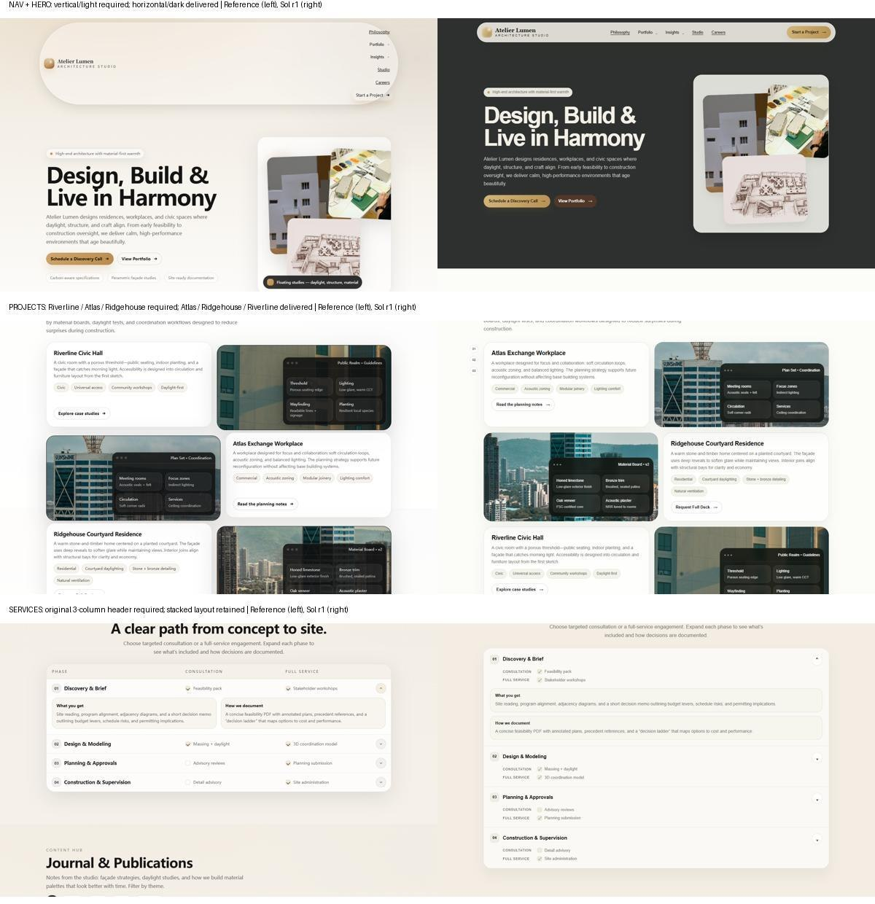
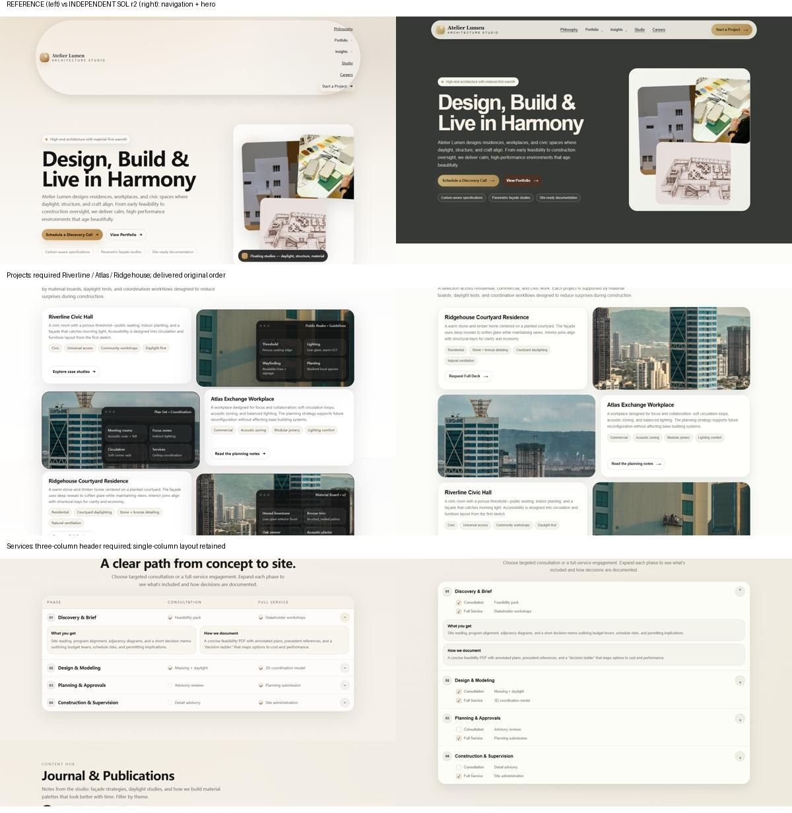
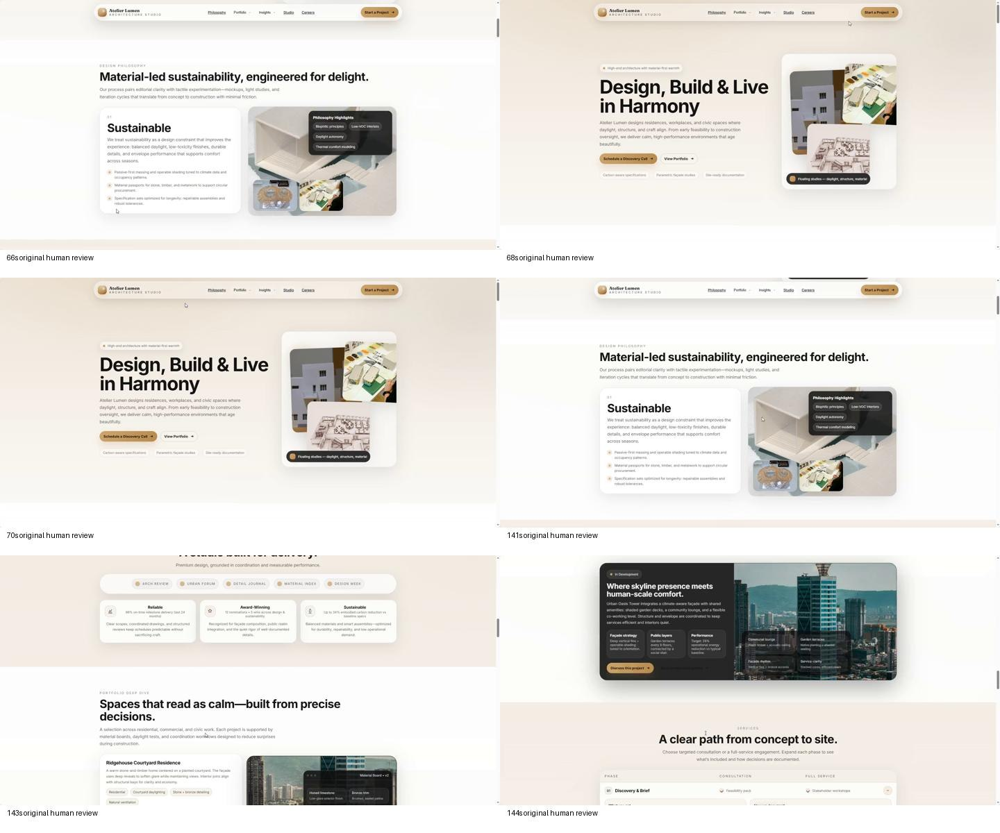

看原型与评审录屏，从零生成完整官网
先看一遍建筑事务所的完整原型，再听一段指着页面提出的修改。Agent 只有视频和图片，需要从空项目重建整页，把“这个”“恢复原样”与光标对齐，在换位和撤销后落实最后有效的要求。
Atelier Lumen完整生成 · 不提供源码15 个页面区块两次独立运行一、任务定义
用 HTML、CSS 和 JavaScript 重做整个官网。原型展示首屏、两段理念、客户评价、作品集、奖项、项目亮点、服务、文章、案例、团队、招聘、合作伙伴、联系表单和页脚。未被要求修改的内容、布局与交互继续保留，手机也要能用。
01 · 完整原型导览
5 分 03 秒 · 浏览器采集画面与临时 TTS 讲解。包含菜单、轮播末端、文章筛选及服务展开。下载导览
02 · 真人评审录屏
4 分 03 秒 · 真人中文音轨与光标。按这段评审的最后有效意图修改。下载评审
两段视频依次使用。评审画面展示的是原始页面，讲话时并未现场改动；页面仍是原样不代表撤销了口头要求。
| 给 Agent | 允许使用 | 需要交付 |
|---|---|---|
| 简短任务、两段视频、15 张本地图片与 ASR 调用入口；没有 HTML、CSS、人工转写或预先抽帧。 | 自行转写、抽帧、裁剪、重听、查通用资料与安装依赖；系统字体、CSS 装饰均可。 | 完整 output/site/index.html 和本地资源，以及说明 output/notes.md。 |
最终意图怎样验收
按最终结果验收，已被撤销的中间要求不再单独追扣。当前计分的 9 组终态如下：
导航右侧竖排
Logo 留左，菜单和 Start a Project 在右侧纵向堆叠。
首屏恢复原样
临时深色主题已取消，最终恢复浅底和深色文字。
完整项目首尾互换
Riverline、Atlas、Ridgehouse；图文和入口随项目走。
局部恢复
Philosophy 与 Studio 恢复原顺序，服务表头恢复三列。
文章两列
六篇保留，筛选后仍按两列显示。
页脚配色
深棕背景、金色栏目标题、半透明金色分隔线。
只删指定案例
Garden Stair 整卡删除，其余五张保留。
四张奖项配色
深墨绿背景、金色标题、浅灰绿正文。
岗位首尾互换
Materials & Sustainability、BIM、Architectural Designer。
评分口径、争议范围与参考校准
| 分组 | 权重 | 检查 |
|---|---|---|
| 最终意图 | 60% | 9 组终态，按可见位置、配色和顺序检查。 |
| 原型内容 | 20% | 15 组可见内容锚点，检查主要区块内容是否保留。 |
| 实际交互 | 10% | 菜单、文章筛选、服务展开、联系反馈 4 项。 |
| 手机 | 10% | 390px 下的溢出、主要内容、标题与表单 4 项。 |
原评审有 5 条请求的指向范围或移动目的地不够明确，不作独立验收；另外“深棕色指文字还是底色”和两张近似塔楼照片也从终态分组排除。两次运行统一使用同一范围。参考实现得分 100。
使用可见语义与渲染结果验收，接受不同 DOM、原生 details 和等价反馈，不以隐藏类名、图片文件名或源码差分计分。这是本案例的开发评分，与其他题目或官方 EFS 不属同一量尺。范围政策 · 当前评分器
二、运行结果
同一套材料，两次从空项目独立求解。使用 gpt-6.1-sol / xhigh、真实 Codex CLI 和 NJU Link，允许联网，保留正常代理；没有额外总时长或轮数限制。两次均正常退出。
独立求解 34分53秒
xhigh · 正常完成 · exit 0独立求解 28分24秒
xhigh · 正常完成 · exit 0| 运行 | 最终意图 /60 | 内容 /20 | 交互 /10 | 手机 /10 | 总分 |
|---|---|---|---|---|---|
| 首轮 | 33.33 | 20.00 | 10.00 | 10.00 | 73.33 |
| 第二轮 | 33.33 | 17.33 | 10.00 | 10.00 | 70.67 |
若把两处存疑终态直接算正确、仍保留原 11 组分母，两次的宽松结果为 78.18、75.52。这里展示复核后的得分；测量误罚及其修正另存记录，没有覆盖初评。
打开参考与模型交付
下方可切换交互页面；模型交付保持原始文件。联系与提交仅作本地演示。


三、运行轨迹
Agent 自行抽取视频帧、转写真人评审，生成页面后用浏览器检查桌面和手机。命令轨迹没有发现读取组织者目录或现成答案的标记；这是目录约定与事后检查，不是操作系统级隔离保证。
| 运行 | Shell 命令 | 非致命失败命令 | ASR 相关命令 | 退出码 | 真实求解耗时 |
|---|---|---|---|---|---|
| 首轮 | 42 | 2 | 3 | 0 | 34分53秒 |
| 第二轮 | 27 | 1 | 3 | 0 | 28分24秒 |
ASR 相关命令数是命令审计计数，不代表转写轮数；轨迹按事件顺序展示，没有逐命令时长。模型可用语音工具，并非直接原生接收视频。
首轮 · 查看 42 条命令
02 · exit 0 · 'Get-Content -Raw TASK.md'
"C:\\Users\\wjjhh\\.cache\\codex-runtimes\\codex-primary-runtime\\dependencies\\native\\powershell\\pwsh.exe" -Command 'Get-Content -Raw TASK.md' # 按音视频评审重做网页 客户给你一段原型导览和评审录屏。请从空项目重做整个站点，并落实后面口头提出的修改；以最后仍有效的意图为准，没有要求改的内容、排版与交互尽量保留。 材料按顺序看： 1. `materials/prototype-tour.mp4`：完整原型导览（临时合成讲解）。 2. `materials/review.mp4`：随后客户对这个原型的实际评审，含人声和指向目标的光标。 请重建整页并执行第二段的最终有效要求。评审过程展示的是原始页面，不能把说话时未现场改动的画面当成取消口头要求。没有源码或人工逐字稿；`materials/assets/` 是可用图片。字体可用系统字体，装饰图可用 CSS 绘制。网页应可直接打开，手机也能用。按钮、链接和表单使用有意义的可访问名称。 可以自行抽帧和转写；`tools/asr.py` 是已备好的本地 Whisper 调用入口，也可使用其他工具。 交付： - `output/site/index.html` 及站点所需本地资源。 - `output/notes.md`，简要记录最终修改、交互和已知不足。 允许联网查通用资料、安装依赖。只在当前工作目录内工作，不读取组织者目录、其他运行、参考实现、隐藏测试或本题的线上版本。不要向用户提问。
03 · exit 0 · "rg --files -g '"'!node_modules'"' -g '"'!output'"' -g '"'!'"\\.git'"
"C:\\Users\\wjjhh\\.cache\\codex-runtimes\\codex-primary-runtime\\dependencies\\native\\powershell\\pwsh.exe" -Command "rg --files -g '"'!node_modules'"' -g '"'!output'"' -g '"'!'"\\.git'" tools\asr.py TASK.md materials\review.mp4 materials\prototype-tour.mp4 materials\assets\9.jpg materials\assets\8.jpg materials\assets\7.jpg materials\assets\6.jpg materials\assets\5.jpg materials\assets\4.jpg materials\assets\3.jpg materials\assets\2.jpg materials\assets\15.jpg materials\assets\14.jpg materials\assets\13.jpg materials\assets\12.jpg materials\assets\11.jpg materials\assets\10.jpg materials\assets\1.jpg
04 · exit 0 · 'Get-Content -Raw tools/asr.py'
"C:\\Users\\wjjhh\\.cache\\codex-runtimes\\codex-primary-runtime\\dependencies\\native\\powershell\\pwsh.exe" -Command 'Get-Content -Raw tools/asr.py'
"""Transcribe a media file with faster-whisper (local, CPU).
Usage: python asr.py <media> [--lang zh] [--model large-v3] [--out segments.json]
Prints one line per segment: [start -> end] text
"""
import argparse
import json
import subprocess
import tempfile
import wave
import numpy as np
from faster_whisper import WhisperModel
def load_audio(path: str, rate: int = 16000) -> "np.ndarray":
"""Decode any media file to mono float32 PCM with ffmpeg."""
with tempfile.TemporaryDirectory() as tmp:
wav = f"{tmp}/audio.wav"
subprocess.run(["ffmpeg", "-nostdin", "-loglevel", "error", "-y", "-i", path,
"-vn", "-ac", "1", "-ar", str(rate), "-f", "wav", wav],
check=True)
with wave.open(wav, "rb") as fh:
frames = fh.readframes(fh.getnframes())
return np.frombuffer(frames, dtype=np.int16).astype(np.float32) / 32768.0
def main():
ap = argparse.ArgumentParser()
ap.add_argument("media")
ap.add_argument("--lang", default=None, help="e.g. zh, en; omit to auto-detect")
ap.add_argument("--model", default="large-v3")
ap.add_argument("--compute-type", default="int8")
ap.add_argument("--threads", type=int, default=8)
ap.add_argument("--out", default=None, help="also write segments as JSON here")
args = ap.parse_args()
model = WhisperModel(args.model, device="cpu", compute_type=args.compute_type,
cpu_threads=args.threads)
segments, info = model.transcribe(load_audio(args.media), language=args.lang,
vad_filter=True, word_timestamps=True)
print(f"# language={info.language} prob={info.language_probability:.2f} "
f"duration={info.duration:.1f}s")
rows = []
for seg in segments:
print(f"[{seg.start:7.2f} -> {seg.end:7.2f}] {seg.text.strip()}", flush=True)
rows.append({
"start": round(seg.start, 2), "end": round(seg.end, 2),
"text": seg.text.strip(),
"words": [{"w": w.word, "s": round(w.start, 2), "e": round(w.end, 2)}
for w in (seg.words or [])],
})
if args.out:
with open(args.out, "w", encoding="utf-8") as fh:
json.dump(rows, fh, ensure_ascii=False, indent=1)
if __name__ == "__main__":
main()
05 · exit 0 · 'ffprobe -v quiet -show_format -show_streams -of json materials/review.mp4'
"C:\\Users\\wjjhh\\.cache\\codex-runtimes\\codex-primary-runtime\\dependencies\\native\\powershell\\pwsh.exe" -Command 'ffprobe -v quiet -show_format -show_streams -of json materials/review.mp4'
{
"streams": [
{
"index": 0,
"codec_name": "h264",
"codec_long_name": "H.264 / AVC / MPEG-4 AVC / MPEG-4 part 10",
"profile": "High",
"codec_type": "video",
"codec_time_base": "1459/82416",
"codec_tag_string": "avc1",
"codec_tag": "0x31637661",
"width": 1912,
"height": 956,
"coded_width": 1920,
"coded_height": 960,
"closed_captions": 0,
"has_b_frames": 2,
"pix_fmt": "yuv420p",
"level": 40,
"chroma_location": "left",
"refs": 1,
"is_avc": "true",
"nal_length_size": "4",
"r_frame_rate": "30/1",
"avg_frame_rate": "41208/1459",
"time_base": "1/15360",
"start_pts": 0,
"start_time": "0.000000",
"duration_ts": 3735040,
"duration": "243.166667",
"bit_rate": "1178143",
"bits_per_raw_sample": "8",
"nb_frames": "6868",
"disposition": {
"default": 1,
"dub": 0,
"original": 0,
"comment": 0,
"lyrics": 0,
"karaoke": 0,
"forced": 0,
"hearing_impaired": 0,
"visual_impaired": 0,
"clean_effects": 0,
"attached_pic": 0,
"timed_thumbnails": 0
},
"tags": {
"language": "und",
"handler_name": "VideoHandler",
"encoder": "Lavc62.34.100 libx264"
}
},
{
"index": 1,
"codec_name": "aac",
"codec_long_name": "AAC (Advanced Audio Coding)",
"profile": "LC",
"codec_type": "audio",
"codec_time_base": "1/32000",
"codec_tag_string": "mp4a",
"codec_tag": "0x6134706d",
"sample_fmt": "fltp",
"sample_rate": "32000",
"channels": 1,
"channel_layout": "mono",
"bits_per_sample": 0,
"r_frame_rate": "0/0",
"avg_frame_rate": "0/0",
"time_base": "1/32000",
"start_pts": 0,
"start_time": "0.000000",
"duration_ts": 7782400,
"duration": "243.200000",
"bit_rate": "57242",
"max_bit_rate": "128000",
"nb_frames": "7601",
"disposition": {
"default": 1,
"dub": 0,
"original": 0,
"comment": 0,
"lyrics": 0,
"karaoke": 0,
"forced": 0,
"hearing_impaired": 0,
"visual_impaired": 0,
"clean_effects": 0,
"attached_pic": 0,
"timed_thumbnails": 0
},
"tags": {
"language": "und",
"handler_name": "SoundHandler"
}
}
],
"format": {
"filename": "materials/review.mp4",
"nb_streams": 2,
"nb_programs": 0,
"format_name": "mov,mp4,m4a,3gp,3g2,mj2",
"format_long_name": "QuickTime / MOV",
"start_time": "0.000000",
"duration": "243.200000",
"size": "37737510",
"bit_rate": "1241365",
"probe_score": 100,
"tags": {
"major_brand": "isom",
"minor_version": "512",
"compatible_brands": "isomiso2avc1mp41",
"encoder": "Lavf62.18.100"
}
}
}
06 · exit 0 · 'ffprobe -v quiet -show_format -show_streams -of json materials/prototype-tour.mp4'
"C:\\Users\\wjjhh\\.cache\\codex-runtimes\\codex-primary-runtime\\dependencies\\native\\powershell\\pwsh.exe" -Command 'ffprobe -v quiet -show_format -show_streams -of json materials/prototype-tour.mp4'
{
"streams": [
{
"index": 0,
"codec_name": "h264",
"codec_long_name": "H.264 / AVC / MPEG-4 AVC / MPEG-4 part 10",
"profile": "High",
"codec_type": "video",
"codec_time_base": "2329669/69672960",
"codec_tag_string": "avc1",
"codec_tag": "0x31637661",
"width": 1440,
"height": 900,
"coded_width": 1440,
"coded_height": 912,
"closed_captions": 0,
"has_b_frames": 2,
"sample_aspect_ratio": "1:1",
"display_aspect_ratio": "8:5",
"pix_fmt": "yuv420p",
"level": 40,
"chroma_location": "left",
"refs": 1,
"is_avc": "true",
"nal_length_size": "4",
"r_frame_rate": "15/1",
"avg_frame_rate": "34836480/2329669",
"time_base": "1/15360",
"start_pts": 707,
"start_time": "0.046029",
"duration_ts": 4659338,
"duration": "303.342318",
"bit_rate": "440376",
"bits_per_raw_sample": "8",
"nb_frames": "4536",
"disposition": {
"default": 1,
"dub": 0,
"original": 0,
"comment": 0,
"lyrics": 0,
"karaoke": 0,
"forced": 0,
"hearing_impaired": 0,
"visual_impaired": 0,
"clean_effects": 0,
"attached_pic": 0,
"timed_thumbnails": 0
},
"tags": {
"language": "und",
"handler_name": "VideoHandler"
}
},
{
"index": 1,
"codec_name": "aac",
"codec_long_name": "AAC (Advanced Audio Coding)",
"profile": "LC",
"codec_type": "audio",
"codec_time_base": "1/22050",
"codec_tag_string": "mp4a",
"codec_tag": "0x6134706d",
"sample_fmt": "fltp",
"sample_rate": "22050",
"channels": 1,
"channel_layout": "mono",
"bits_per_sample": 0,
"r_frame_rate": "0/0",
"avg_frame_rate": "0/0",
"time_base": "1/22050",
"start_pts": 0,
"start_time": "0.000000",
"duration_ts": 6686782,
"duration": "303.255420",
"bit_rate": "58755",
"max_bit_rate": "58755",
"nb_frames": "6538",
"disposition": {
"default": 1,
"dub": 0,
"original": 0,
"comment": 0,
"lyrics": 0,
"karaoke": 0,
"forced": 0,
"hearing_impaired": 0,
"visual_impaired": 0,
"clean_effects": 0,
"attached_pic": 0,
"timed_thumbnails": 0
},
"tags": {
"language": "und",
"handler_name": "SoundHandler"
}
}
],
"format": {
"filename": "materials/prototype-tour.mp4",
"nb_streams": 2,
"nb_programs": 0,
"format_name": "mov,mp4,m4a,3gp,3g2,mj2",
"format_long_name": "QuickTime / MOV",
"start_time": "0.000000",
"duration": "303.343000",
"size": "19090020",
"bit_rate": "503457",
"probe_score": 100,
"tags": {
"major_brand": "isom",
"minor_version": "512",
"compatible_brands": "isomiso2avc1mp41",
"encoder": "Lavf58.45.100"
}
}
}
07 · exit 0 · 'New-Item -ItemType Directory -Force output, output/work, output/site, output/qa | Out-Null'
"C:\\Users\\wjjhh\\.cache\\codex-runtimes\\codex-primary-runtime\\dependencies\\native\\powershell\\pwsh.exe" -Command 'New-Item -ItemType Directory -Force output, output/work, output/site, output/qa | Out-Null'
08 · exit 0 · "@' from PIL import Image, ImageDraw import cv2, pathlib out=pathlib.Path('output/work') for name,step in [('p
"C:\\Users\\wjjhh\\.cache\\codex-runtimes\\codex-primary-runtime\\dependencies\\native\\powershell\\pwsh.exe" -Command "@'
from PIL import Image, ImageDraw
import cv2, pathlib
out=pathlib.Path('output/work')
for name,step in [('prototype-tour',15),('review',12)]:
c=cv2.VideoCapture('materials/'+name+'.mp4'); duration=c.get(cv2.CAP_PROP_FRAME_COUNT)/c.get(cv2.CAP_PROP_FPS)
times=list(range(0,int(duration),step)); tiles=[]
for t in times:
c.set(cv2.CAP_PROP_POS_MSEC,t*1000);ok,bgr=c.read()
if not ok:continue
im=Image.fromarray(cv2.cvtColor(bgr,cv2.COLOR_BGR2RGB));im.save(out/f'{name}-{t:03}.jpg')
im.thumbnail((480,300));tile=Image.new('RGB',(500,330),'#dddddd');tile.paste(im,(10,25));ImageDraw.Draw(tile).text((10,5),f'{name} {t}s',fill='black');tiles.append(tile)
for k in range(0,len(tiles),9):
sheet=Image.new('RGB',(1500,990),'white')
for j,im in enumerate(tiles[k:k+9]):sheet.paste(im,((j%3)*500,(j//3)*330))
sheet.save(out/f'{name}-sheet-{k//9}.jpg')
c.release()
assets=list(pathlib.Path('materials/assets').glob('*'));sheet=Image.new('RGB',(1000,((len(assets)+3)//4)*200),'#ddd')
for j,p in enumerate(assets):
im=Image.open(p);sz=im.size;im.thumbnail((240,165));x=(j%4)*250;y=(j//4)*200;sheet.paste(im,(x,y+25));ImageDraw.Draw(sheet).text((x+4,y+5),f'{p.name} {sz}',fill='black')
sheet.save(out/'assets-sheet.jpg')
'@ | Set-Content -Encoding utf8 output/work/extract.py
python output/work/extract.py"
09 · exit 0 · 'Get-Content output/work/tour-transcript.log,output/work/review-transcript.log -Tail 12'
"C:\\Users\\wjjhh\\.cache\\codex-runtimes\\codex-primary-runtime\\dependencies\\native\\powershell\\pwsh.exe" -Command 'Get-Content output/work/tour-transcript.log,output/work/review-transcript.log -Tail 12'
10 · exit 0 · 'Get-Content output/work/tour-transcript.log,output/work/review-transcript.log -Tail 15'
"C:\\Users\\wjjhh\\.cache\\codex-runtimes\\codex-primary-runtime\\dependencies\\native\\powershell\\pwsh.exe" -Command 'Get-Content output/work/tour-transcript.log,output/work/review-transcript.log -Tail 15'
12 · exit 0 · 'Get-ChildItem output/work/*log | Select-Object Name,Length,LastWriteTime'
"C:\\Users\\wjjhh\\.cache\\codex-runtimes\\codex-primary-runtime\\dependencies\\native\\powershell\\pwsh.exe" -Command 'Get-ChildItem output/work/*log | Select-Object Name,Length,LastWriteTime' Name Length LastWriteTime ---- ------ ------------- review-transcript.log 438 2026/11/4 1:58:21 tour-transcript.log 0 2026/11/4 1:57:30
13 · exit 0 · 'Get-Content output/work/review-transcript.log -Tail 30'
"C:\\Users\\wjjhh\\.cache\\codex-runtimes\\codex-primary-runtime\\dependencies\\native\\powershell\\pwsh.exe" -Command 'Get-Content output/work/review-transcript.log -Tail 30' # language=zh prob=1.00 duration=243.2s [ 0.59 -> 3.99] 把这个改成左侧logo中间留空 [ 3.99 -> 10.01] 右侧将所有菜单项和starter project按钮纵向堆叠的树牌布局 [ 10.01 -> 16.71] 把这个和这个互换一下位置 [ 16.71 -> 34.15] 把这个背景改成生态灰色 [ 34.15 -> 37.43] 这个文字改成米白色 [ 37.43 -> 42.97] 这个改成浅灰色并移除这个的浅色阴影 [ 42.97 -> 49.60] 把这个边框去掉 [ 49.60 -> 53.02] 这个背景改成深棕色 [ 53.02 -> 55.80] 这个文字改成白色 [ 55.80 -> 63.62] 把这个移动到这个位置 [ 63.62 -> 72.71] 把这个恢复成原来的样子 [ 72.71 -> 85.21] 把这个改成单列纵向堆叠的布局 [ 85.21 -> 95.15] 把这个改成玻璃幕墙高层建筑仰拍的静态照片 [ 95.15 -> 103.60] 把这些
14 · exit 0 · 'Get-Content output/work/tour-transcript.log,output/work/review-transcript.log -Tail 45'
"C:\\Users\\wjjhh\\.cache\\codex-runtimes\\codex-primary-runtime\\dependencies\\native\\powershell\\pwsh.exe" -Command 'Get-Content output/work/tour-transcript.log,output/work/review-transcript.log -Tail 45' # language=zh prob=1.00 duration=303.6s [ 0.53 -> 5.53] 这个建筑事务所网站要从空项目重做,整页都要。 [ 6.19 -> 11.13] 先看原版导览,后面我会指着原版说修改要求。 [ 11.87 -> 16.69] 最后仍有效的要求要落实,撤销的要恢复原样。 [ 17.43 -> 22.59] 素材文件夹提供图片,没有圆码,系统字体可用。 [ 22.59 -> 31.85] 手屏左侧标题是Design,Build and Live in Harmony,右杆是层叠建筑照片。 [ 32.61 -> 41.33] 上面悬浮导航包括Philosophy,Portfolio,Insights,Studio,Careers和Start a Project。 [ 42.23 -> 49.29] 下拉菜单,锚点,按钮,图片区和小标签都保留能看到的样子。 [ 51.41 -> 54.35] 菜单可以点击或悬停打开。 [ 54.91 -> 56.05] Portfolio # language=zh prob=1.00 duration=243.2s [ 0.59 -> 3.99] 把这个改成左侧logo中间留空 [ 3.99 -> 10.01] 右侧将所有菜单项和starter project按钮纵向堆叠的树牌布局 [ 10.01 -> 16.71] 把这个和这个互换一下位置 [ 16.71 -> 34.15] 把这个背景改成生态灰色 [ 34.15 -> 37.43] 这个文字改成米白色 [ 37.43 -> 42.97] 这个改成浅灰色并移除这个的浅色阴影 [ 42.97 -> 49.60] 把这个边框去掉 [ 49.60 -> 53.02] 这个背景改成深棕色 [ 53.02 -> 55.80] 这个文字改成白色 [ 55.80 -> 63.62] 把这个移动到这个位置 [ 63.62 -> 72.71] 把这个恢复成原来的样子 [ 72.71 -> 85.21] 把这个改成单列纵向堆叠的布局 [ 85.21 -> 95.15] 把这个改成玻璃幕墙高层建筑仰拍的静态照片 [ 95.15 -> 103.60] 把这些 [ 103.60 -> 106.42] 全部隐藏掉 [ 106.42 -> 118.70] 把这个背景改成浅米色和细深棕色边框 [ 118.70 -> 122.60] 这个文字加粗并改为深棕色 [ 122.60 -> 132.14] 把这个和这个互换一下位置 [ 132.14 -> 142.44] 把这个和这个恢复成原来的位置 [ 142.44 -> 145.52] 这个恢复成原来的样子 [ 145.52 -> 156.34] 把这些改成深棕色 [ 156.34 -> 163.40] 把这个改成深棕色
15 · exit 0 · "@' import cv2 from PIL import Image,ImageDraw from pathlib import Path c=cv2.VideoCapture('materials/review.m
"C:\\Users\\wjjhh\\.cache\\codex-runtimes\\codex-primary-runtime\\dependencies\\native\\powershell\\pwsh.exe" -Command "@'
import cv2
from PIL import Image,ImageDraw
from pathlib import Path
c=cv2.VideoCapture('materials/review.mp4');out=Path('output/work')
for start,end in [(0,36),(34,74),(72,112),(110,152),(150,192),(190,232),(230,243)]:
ts=list(range(start,end,2));sheet=Image.new('RGB',(1920,((len(ts)+2)//3)*345),'#ddd')
for j,t in enumerate(ts):
c.set(cv2.CAP_PROP_POS_MSEC,t*1000);ok,bgr=c.read()
if not ok:continue
im=Image.fromarray(cv2.cvtColor(bgr,cv2.COLOR_BGR2RGB));im.save(out/f'rev-{t:03}.jpg');im.thumbnail((630,315));x=(j%3)*640;y=(j//3)*345;sheet.paste(im,(x,y+25));ImageDraw.Draw(sheet).text((x+8,y+5),str(t)+'s',fill='black')
sheet.save(out/f'review-detail-{start}.jpg')
'@ | Set-Content -Encoding utf8 output/work/detail.py
python output/work/detail.py"
16 · exit 0 · 'Get-Content output/work/review-transcript.log -Tail 50; Get-Content output/work/tour-transcript.log -Tail 35'
"C:\\Users\\wjjhh\\.cache\\codex-runtimes\\codex-primary-runtime\\dependencies\\native\\powershell\\pwsh.exe" -Command 'Get-Content output/work/review-transcript.log -Tail 50; Get-Content output/work/tour-transcript.log -Tail 35' # language=zh prob=1.00 duration=243.2s [ 0.59 -> 3.99] 把这个改成左侧logo中间留空 [ 3.99 -> 10.01] 右侧将所有菜单项和starter project按钮纵向堆叠的树牌布局 [ 10.01 -> 16.71] 把这个和这个互换一下位置 [ 16.71 -> 34.15] 把这个背景改成生态灰色 [ 34.15 -> 37.43] 这个文字改成米白色 [ 37.43 -> 42.97] 这个改成浅灰色并移除这个的浅色阴影 [ 42.97 -> 49.60] 把这个边框去掉 [ 49.60 -> 53.02] 这个背景改成深棕色 [ 53.02 -> 55.80] 这个文字改成白色 [ 55.80 -> 63.62] 把这个移动到这个位置 [ 63.62 -> 72.71] 把这个恢复成原来的样子 [ 72.71 -> 85.21] 把这个改成单列纵向堆叠的布局 [ 85.21 -> 95.15] 把这个改成玻璃幕墙高层建筑仰拍的静态照片 [ 95.15 -> 103.60] 把这些 [ 103.60 -> 106.42] 全部隐藏掉 [ 106.42 -> 118.70] 把这个背景改成浅米色和细深棕色边框 [ 118.70 -> 122.60] 这个文字加粗并改为深棕色 [ 122.60 -> 132.14] 把这个和这个互换一下位置 [ 132.14 -> 142.44] 把这个和这个恢复成原来的位置 [ 142.44 -> 145.52] 这个恢复成原来的样子 [ 145.52 -> 156.34] 把这些改成深棕色 [ 156.34 -> 163.40] 把这个改成深棕色 # language=zh prob=1.00 duration=303.6s [ 0.53 -> 5.53] 这个建筑事务所网站要从空项目重做,整页都要。 [ 6.19 -> 11.13] 先看原版导览,后面我会指着原版说修改要求。 [ 11.87 -> 16.69] 最后仍有效的要求要落实,撤销的要恢复原样。 [ 17.43 -> 22.59] 素材文件夹提供图片,没有圆码,系统字体可用。 [ 22.59 -> 31.85] 手屏左侧标题是Design,Build and Live in Harmony,右杆是层叠建筑照片。 [ 32.61 -> 41.33] 上面悬浮导航包括Philosophy,Portfolio,Insights,Studio,Careers和Start a Project。 [ 42.23 -> 49.29] 下拉菜单,锚点,按钮,图片区和小标签都保留能看到的样子。 [ 51.41 -> 54.35] 菜单可以点击或悬停打开。 [ 54.91 -> 56.05] Portfolio
17 · exit 0 · 'python tools/asr.py materials/review.mp4 --lang zh --model large-v3 --out output/work/review-transcript.json
"C:\\Users\\wjjhh\\.cache\\codex-runtimes\\codex-primary-runtime\\dependencies\\native\\powershell\\pwsh.exe" -Command 'python tools/asr.py materials/review.mp4 --lang zh --model large-v3 --out output/work/review-transcript.json > output/work/review-transcript.log 2>&1'
18 · exit 0 · 'Get-Content output/work/review-transcript.log -Tail 25; Get-Content output/work/tour-transcript.log -Tail 25'
"C:\\Users\\wjjhh\\.cache\\codex-runtimes\\codex-primary-runtime\\dependencies\\native\\powershell\\pwsh.exe" -Command 'Get-Content output/work/review-transcript.log -Tail 25; Get-Content output/work/tour-transcript.log -Tail 25' [ 55.80 -> 63.62] 把这个移动到这个位置 [ 63.62 -> 72.71] 把这个恢复成原来的样子 [ 72.71 -> 85.21] 把这个改成单列纵向堆叠的布局 [ 85.21 -> 95.15] 把这个改成玻璃幕墙高层建筑仰拍的静态照片 [ 95.15 -> 103.60] 把这些 [ 103.60 -> 106.42] 全部隐藏掉 [ 106.42 -> 118.70] 把这个背景改成浅米色和细深棕色边框 [ 118.70 -> 122.60] 这个文字加粗并改为深棕色 [ 122.60 -> 132.14] 把这个和这个互换一下位置 [ 132.14 -> 142.44] 把这个和这个恢复成原来的位置 [ 142.44 -> 145.52] 这个恢复成原来的样子 [ 145.52 -> 156.34] 把这些改成深棕色 [ 156.34 -> 163.40] 把这个改成深棕色 [ 163.40 -> 164.74] 把这个改成两列网格布局 [ 164.74 -> 174.21] 把这个移动到这个位置 [ 174.21 -> 188.80] 把这个背景改成深棕色 [ 188.80 -> 192.98] 这个文字改成亮金色 [ 192.98 -> 196.74] 这些分隔线改为半透明金色 [ 196.74 -> 205.94] 把这个直接删除掉 [ 205.94 -> 216.95] 把这个背景改成深墨绿色 [ 216.95 -> 220.21] 这个标题改成亮金色 [ 220.21 -> 222.79] 这个文字改成亮金色 [ 222.81 -> 223.75] 这个文字改成浅灰绿色 [ 223.75 -> 231.76] 把这个恢复成原来的样子 [ 231.76 -> 242.93] 把这个和这个互换一下位置 # language=zh prob=1.00 duration=303.6s [ 0.53 -> 5.53] 这个建筑事务所网站要从空项目重做,整页都要。 [ 6.19 -> 11.13] 先看原版导览,后面我会指着原版说修改要求。 [ 11.87 -> 16.69] 最后仍有效的要求要落实,撤销的要恢复原样。 [ 17.43 -> 22.59] 素材文件夹提供图片,没有圆码,系统字体可用。 [ 22.59 -> 31.85] 手屏左侧标题是Design,Build and Live in Harmony,右杆是层叠建筑照片。 [ 32.61 -> 41.33] 上面悬浮导航包括Philosophy,Portfolio,Insights,Studio,Careers和Start a Project。 [ 42.23 -> 49.29] 下拉菜单,锚点,按钮,图片区和小标签都保留能看到的样子。 [ 51.41 -> 54.35] 菜单可以点击或悬停打开。 [ 54.91 -> 56.05] Portfolio [ 56.11 -> 62.53] 下有Selected Works,Case Studies和Urban Oasis Tower,都是本站锚点。 [ 64.85 -> 71.21] 这里是理念区,再往下是数据,客户评价和三个信任卡片。 [ 71.85 -> 80.05] 每段的文字,卡片,图标与数值都要保留,不能只写一个标题就算做完整页。 [ 82.23 -> 84.99] 理念区的第二部分是Innovative。 [ 85.71 -> 88.43] 这里有说明,三条做法。 [ 88.61 -> 89.51] 右侧是Innovative,右侧是Innovative,右侧是Innovative。 [ 89.53 -> 94.83] 右侧是How We Prototype的四个标签,这些都属于完整导览的范围。 [ 97.06 -> 102.22] 客户评价是横向切换的卡片,旁边有切换按钮。 [ 103.04 -> 108.96] 下面三张信任卡片是Reliable,Award,Winning和Sustainable。 [ 111.23 -> 119.47] 评价轮波横向拖动或滚动,这里是后面的Priya和Samir两张卡片,内容同样保留。 [ 121.73 -> 123.51] 作品集有三项。
20 · exit 0 · 'Get-ChildItem output/work/*json | Select-Object Name,Length; Get-Content output/work/review-transcript.log -T
"C:\\Users\\wjjhh\\.cache\\codex-runtimes\\codex-primary-runtime\\dependencies\\native\\powershell\\pwsh.exe" -Command 'Get-ChildItem output/work/*json | Select-Object Name,Length; Get-Content output/work/review-transcript.log -Tail 5' Name Length ---- ------ review-transcript.json 25015 [ 216.95 -> 220.21] 这个标题改成亮金色 [ 220.21 -> 222.79] 这个文字改成亮金色 [ 222.81 -> 223.75] 这个文字改成浅灰绿色 [ 223.75 -> 231.76] 把这个恢复成原来的样子 [ 231.76 -> 242.93] 把这个和这个互换一下位置
21 · exit 0 · "@' import cv2 from PIL import Image, ImageDraw c=cv2.VideoCapture('materials/review.mp4') for ts,name in [([1
"C:\\Users\\wjjhh\\.cache\\codex-runtimes\\codex-primary-runtime\\dependencies\\native\\powershell\\pwsh.exe" -Command "@'
import cv2
from PIL import Image, ImageDraw
c=cv2.VideoCapture('materials/review.mp4')
for ts,name in [([10.5,11,13,14.5,15.5,16.5,17.5,32.5,35.5,39.5,43.5,45.5,49,51.5,54.5,56.5,58.5,62.5,64.5,70.5,73.5,75.5,83.5,85.5,89.5,93.5,95.5,97.5,99.5,103.5,105.5,106.5,108.5,112.5,115.5,117.5,119.5,121.5,123.5,126.5,131.5,133.5,135.5,139.5,141.5,143.5,145.5,147.5,151.5,155.5,157.5,159.5,161.5,163.5,164.5,166.5,169.5,173.5,175.5,177.5,179.5,185.5,187.5,189.5,193.5,195.5,197.5,199.5,201.5,205.5,207.5,211.5,215.5,217.5,219.5,221.5,223.3,224.5,227.5,231.9,233.5,236.5,240.5,242], 'targets')]:
for t in ts:
c.set(cv2.CAP_PROP_POS_MSEC,t*1000);ok,bgr=c.read()
if ok:Image.fromarray(cv2.cvtColor(bgr,cv2.COLOR_BGR2RGB)).save(f'output/work/target-{t}.jpg')
'@ | Set-Content -Encoding utf8 output/work/targets.py
python output/work/targets.py"
22 · exit 0 · 'Get-Content output/work/tour-transcript.log -Tail 30'
"C:\\Users\\wjjhh\\.cache\\codex-runtimes\\codex-primary-runtime\\dependencies\\native\\powershell\\pwsh.exe" -Command 'Get-Content output/work/tour-transcript.log -Tail 30' [ 0.53 -> 5.53] 这个建筑事务所网站要从空项目重做,整页都要。 [ 6.19 -> 11.13] 先看原版导览,后面我会指着原版说修改要求。 [ 11.87 -> 16.69] 最后仍有效的要求要落实,撤销的要恢复原样。 [ 17.43 -> 22.59] 素材文件夹提供图片,没有圆码,系统字体可用。 [ 22.59 -> 31.85] 手屏左侧标题是Design,Build and Live in Harmony,右杆是层叠建筑照片。 [ 32.61 -> 41.33] 上面悬浮导航包括Philosophy,Portfolio,Insights,Studio,Careers和Start a Project。 [ 42.23 -> 49.29] 下拉菜单,锚点,按钮,图片区和小标签都保留能看到的样子。 [ 51.41 -> 54.35] 菜单可以点击或悬停打开。 [ 54.91 -> 56.05] Portfolio [ 56.11 -> 62.53] 下有Selected Works,Case Studies和Urban Oasis Tower,都是本站锚点。 [ 64.85 -> 71.21] 这里是理念区,再往下是数据,客户评价和三个信任卡片。 [ 71.85 -> 80.05] 每段的文字,卡片,图标与数值都要保留,不能只写一个标题就算做完整页。 [ 82.23 -> 84.99] 理念区的第二部分是Innovative。 [ 85.71 -> 88.43] 这里有说明,三条做法。 [ 88.61 -> 89.51] 右侧是Innovative,右侧是Innovative,右侧是Innovative。 [ 89.53 -> 94.83] 右侧是How We Prototype的四个标签,这些都属于完整导览的范围。 [ 97.06 -> 102.22] 客户评价是横向切换的卡片,旁边有切换按钮。 [ 103.04 -> 108.96] 下面三张信任卡片是Reliable,Award,Winning和Sustainable。 [ 111.23 -> 119.47] 评价轮波横向拖动或滚动,这里是后面的Priya和Samir两张卡片,内容同样保留。 [ 121.73 -> 123.51] 作品集有三项。 [ 124.81 -> 130.23] Portyard Residence,Atlas Exchange Workplace,Riverline Civic Hall。 [ 130.93 -> 135.61] 每项的标题、说明、图片和按钮是一组。 [ 136.23 -> 138.97] 左边还有可以切换的导航。 [ 141.27 -> 146.63] 这里是四张奖项卡片的横向轮波,左右箭头要可用。 [ 147.21 -> 152.87] 留意卡片的深色背景,标题和正文的颜色,后面会改。 [ 155.18 -> 165.34] 奖项区横向拖动或滚动到末尾,可以看到第四张Architecture Review,Emerging Studio,2023年提名。 [ 166.02 -> 167.24] 四张都要。 [ 169.52 -> 178.46] 这个项目亮点区,左干文字,右干是建筑背景照片和叠层信息,图在素材里能找到。 [ 180.64 -> 185.52] 服务区每行三列,是服务、范围、交付务。 [ 186.16 -> 188.04] 行下面可以展开。
23 · exit 0 · "@' from PIL import Image im=Image.open('output/work/rev-012.jpg');im.crop((1250,20,1330,95)).resize((480,450)
"C:\\Users\\wjjhh\\.cache\\codex-runtimes\\codex-primary-runtime\\dependencies\\native\\powershell\\pwsh.exe" -Command "@'
from PIL import Image
im=Image.open('output/work/rev-012.jpg');im.crop((1250,20,1330,95)).resize((480,450)).save('output/work/cursor.jpg')
'@ | python -"
24 · exit 0 · "@' import json s=json.load(open('output/work/review-transcript.json',encoding='utf8')) for x in s: print(x['
"C:\\Users\\wjjhh\\.cache\\codex-runtimes\\codex-primary-runtime\\dependencies\\native\\powershell\\pwsh.exe" -Command "@'
import json
s=json.load(open('output/work/review-transcript.json',encoding='utf8'))
for x in s:
print(x['text'])
print(' '.join(f\"{w['w']}({w['s']}-{w['e']})\" for w in x['words']))
'@ | python -"
把这个改成左侧logo中间留空
把(0.59-0.99) 这个(0.99-1.41) 改(1.41-2.21) 成(2.21-2.43) 左(2.43-2.63) 侧(2.63-2.85) logo(2.85-3.05) 中(3.05-3.31) 间(3.31-3.59) 留(3.59-3.75) 空(3.75-3.99)
右侧将所有菜单项和starter project按钮纵向堆叠的树牌布局
右(3.99-4.55) 侧(4.55-4.85) 将(4.85-4.97) 所有(4.97-5.33) 菜(5.33-5.63) 单(5.63-5.77) 项(5.77-6.07) 和(6.07-6.29) starter(6.29-6.71) project(6.71-7.13) 按(7.13-7.71) 钮(7.71-7.97) 纵(7.97-8.47) 向(8.47-8.65) 堆(8.65-8.89) 叠(8.89-9.05) 的(9.05-9.19) 树(9.19-9.41) 牌(9.41-9.57) 布(9.57-9.75) 局(9.75-10.01)
把这个和这个互换一下位置
把(10.01-10.81) 这个(13.53-14.01) 和(14.01-14.63) 这个(14.63-15.05) 互(15.05-15.81) 换(15.81-15.99) 一下(15.99-16.17) 位(16.17-16.43) 置(16.43-16.71)
把这个背景改成生态灰色
把(16.71-17.51) 这个(30.89-31.25) 背(31.25-32.27) 景(32.27-32.55) 改(32.55-32.85) 成(32.85-33.15) 生(33.15-33.47) 态(33.47-33.71) 灰(33.71-33.93) 色(33.93-34.15)
这个文字改成米白色
这个(34.15-35.01) 文(35.01-35.85) 字(35.85-36.11) 改(36.11-36.33) 成(36.33-36.65) 米(36.65-36.93) 白(36.93-37.15) 色(37.15-37.43)
这个改成浅灰色并移除这个的浅色阴影
这个(37.43-38.17) 改(38.17-39.01) 成(39.01-39.31) 浅(39.31-39.61) 灰(39.61-39.85) 色(39.85-40.03) 并(40.03-40.43) 移(40.43-40.65) 除(40.65-40.85) 这个(40.85-41.11) 的(41.11-41.87) 浅(41.87-42.33) 色(42.33-42.53) 阴(42.53-42.75) 影(42.75-42.97)
把这个边框去掉
把(42.97-43.65) 这个(47.3-47.64) 边(47.64-48.64) 框(48.64-48.98) 去(48.98-49.2) 掉(49.2-49.6)
这个背景改成深棕色
这个(49.6-50.4) 背(50.4-51.42) 景(51.42-51.7) 改(51.7-51.92) 成(51.92-52.16) 深(52.16-52.5) 棕(52.5-52.76) 色(52.76-53.02)
这个文字改成白色
这个(53.02-53.76) 文(53.76-54.48) 字(54.48-54.74) 改(54.74-54.94) 成(54.94-55.14) 白(55.14-55.5) 色(55.5-55.8)
把这个移动到这个位置
把(55.8-56.46) 这个(60.52-61.0) 移(61.0-62.46) 动(62.46-62.68) 到(62.68-62.86) 这个(62.86-63.1) 位(63.1-63.36) 置(63.36-63.62)
把这个恢复成原来的样子
把(63.62-64.64) 这个(69.79-70.11) 恢(70.11-71.47) 复(71.47-71.57) 成(71.57-71.73) 原(71.73-71.97) 来(71.97-72.17) 的(72.17-72.25) 样(72.25-72.45) 子(72.45-72.71)
把这个改成单列纵向堆叠的布局
把(72.71-73.29) 这个(80.97-81.43) 改(81.43-83.01) 成(83.01-83.33) 单(83.33-83.57) 列(83.57-83.79) 纵(83.79-84.05) 向(84.05-84.25) 堆(84.25-84.47) 叠(84.47-84.65) 的(84.65-84.79) 布(84.79-84.93) 局(84.93-85.21)
把这个改成玻璃幕墙高层建筑仰拍的静态照片
把(85.21-86.09) 这个(90.41-90.73) 改(90.73-91.41) 成(91.41-91.81) 玻(91.81-92.23) 璃(92.23-92.41) 幕(92.41-92.57) 墙(92.57-92.83) 高(92.83-93.05) 层(93.05-93.33) 建(93.33-93.55) 筑(93.55-93.73) 仰(93.73-93.95) 拍(93.95-94.17) 的(94.17-94.39) 静(94.39-94.59) 态(94.59-94.75) 照(94.75-94.95) 片(94.95-95.15)
把这些
把(95.15-95.99) 这(103.0-103.22) 些(103.22-103.6)
全部隐藏掉
全部(103.6-104.6) 隐(104.6-105.94) 藏(105.94-106.18) 掉(106.18-106.42)
把这个背景改成浅米色和细深棕色边框
把(106.42-107.08) 这个(112.9-113.34) 背(113.34-114.18) 景(114.18-114.44) 改(114.44-114.62) 成(114.62-114.98) 浅(114.98-115.74) 米(115.74-115.88) 色(115.88-116.14) 和(116.14-116.54) 细(116.54-117.28) 深(117.28-117.7) 棕(117.7-117.94) 色(117.94-118.18) 边(118.18-118.4) 框(118.4-118.7)
这个文字加粗并改为深棕色
这个(118.7-119.26) 文(119.26-120.22) 字(120.22-120.48) 加(120.48-120.64) 粗(120.64-120.96) 并(120.96-121.4) 改(121.4-121.58) 为(121.58-121.84) 深(121.84-122.1) 棕(122.1-122.36) 色(122.36-122.6)
把这个和这个互换一下位置
把(122.6-123.34) 这个(129.1-129.48) 和(129.48-130.1) 这个(130.1-130.38) 互(130.38-131.38) 换(131.38-131.56) 一下(131.56-131.72) 位(131.72-131.94) 置(131.94-132.14)
把这个和这个恢复成原来的位置
把(132.14-133.1) 这个(138.8-139.2) 和(139.2-139.86) 这个(139.86-140.16) 恢(140.16-141.02) 复(141.02-141.18) 成(141.18-141.38) 原(141.38-141.66) 来(141.66-141.9) 的(141.9-142.0) 位(142.0-142.2) 置(142.2-142.44)
这个恢复成原来的样子
这个(142.44-143.36) 恢(143.36-144.16) 复(144.16-144.26) 成(144.26-144.44) 原(144.44-144.7) 来(144.7-144.9) 的(144.9-145.0) 样(145.0-145.22) 子(145.22-145.52)
把这些改成深棕色
把(145.52-146.3) 这(154.14-154.32) 些(154.32-154.54) 改(154.54-155.12) 成(155.12-155.42) 深(155.42-155.84) 棕(155.84-156.08) 色(156.08-156.34)
把这个改成深棕色
把(156.34-157.2) 这个(161.9-162.22) 改(162.22-162.96) 成(162.96-163.3) 深(163.3-163.4) 棕(163.4-163.4) 色(163.4-163.4)
把这个改成两列网格布局
把(163.4-163.54) 这个(163.54-163.54) 改(163.54-163.54) 成(163.54-163.54) 两(163.54-163.54) 列(163.54-163.84) 网(163.84-164.12) 格(164.12-164.22) 布(164.22-164.46) 局(164.46-164.74)
把这个移动到这个位置
把(164.74-165.48) 这个(171.69-172.11) 移(172.11-173.19) 动(173.19-173.41) 到(173.41-173.57) 这个(173.57-173.79) 位(173.79-173.99) 置(173.99-174.21)
把这个背景改成深棕色
把(174.21-174.97) 这个(185.56-185.98) 背(185.98-187.3) 景(187.3-187.58) 改(187.58-187.76) 成(187.76-188.02) 深(188.02-188.32) 棕(188.32-188.54) 色(188.54-188.8)
这个文字改成亮金色
这个(188.8-189.9) 文(189.9-191.16) 字(191.16-191.5) 改(191.5-191.76) 成(191.76-192.14) 亮(192.14-192.48) 金(192.48-192.7) 色(192.7-192.98)
这些分隔线改为半透明金色
这(192.98-193.62) 些(193.62-194.02) 分(194.02-194.56) 隔(194.56-194.8) 线(194.8-195.06) 改(195.06-195.26) 为(195.26-195.52) 半(195.52-195.78) 透(195.78-196.02) 明(196.02-196.2) 金(196.2-196.46) 色(196.46-196.74)
把这个直接删除掉
把(196.74-197.5) 这个(203.3-203.82) 直接(203.82-205.22) 删(205.22-205.58) 除(205.58-205.78) 掉(205.78-205.94)
把这个背景改成深墨绿色
把(205.94-206.6) 这个(213.41-213.85) 背(213.85-215.27) 景(215.27-215.51) 改(215.51-215.71) 成(215.71-215.99) 深(215.99-216.27) 墨(216.27-216.45) 绿(216.45-216.71) 色(216.71-216.95)
这个标题改成亮金色
这个(216.95-217.73) 标(217.73-218.55) 题(218.55-218.79) 改(218.79-219.01) 成(2125 · exit 0 · 'python tools/asr.py materials/prototype-tour.mp4 --lang zh --model large-v3 --out output/work/tour-transcript
"C:\\Users\\wjjhh\\.cache\\codex-runtimes\\codex-primary-runtime\\dependencies\\native\\powershell\\pwsh.exe" -Command 'python tools/asr.py materials/prototype-tour.mp4 --lang zh --model large-v3 --out output/work/tour-transcript.json > output/work/tour-transcript.log 2>&1'
26 · exit 0 · "@' import cv2, pathlib from PIL import Image,ImageDraw im=cv2.imread('output/work/rev-012.jpg');template=cv2.
"C:\\Users\\wjjhh\\.cache\\codex-runtimes\\codex-primary-runtime\\dependencies\\native\\powershell\\pwsh.exe" -Command "@'
import cv2, pathlib
from PIL import Image,ImageDraw
im=cv2.imread('output/work/rev-012.jpg');template=cv2.cvtColor(im[37:59,1278:1295],cv2.COLOR_BGR2GRAY)
cv2.imwrite('output/work/template.png',template)
paths=list(pathlib.Path('output/work').glob('target-*.jpg'));paths.sort(key=lambda p:float(p.stem[7:]))
for k in range(0,len(paths),12):
sheet=Image.new('RGB',(1920,4*345),'#ddd')
for j,p in enumerate(paths[k:k+12]):
bgr=cv2.imread(str(p));gray=cv2.cvtColor(bgr,cv2.COLOR_BGR2GRAY);r=cv2.matchTemplate(gray,template,cv2.TM_CCOEFF_NORMED);_,v,_,loc=cv2.minMaxLoc(r)
im=Image.fromarray(cv2.cvtColor(bgr,cv2.COLOR_BGR2RGB));d=ImageDraw.Draw(im);x,y=loc;d.ellipse((x-20,y-20,x+35,y+40),outline='red',width=5)
im.thumbnail((630,315));x2=(j%3)*640;y2=(j//3)*345;sheet.paste(im,(x2,y2+25));ImageDraw.Draw(sheet).text((x2+10,y2+5),f'{p.stem} cursor {v:.2f} {loc}',fill='black')
sheet.save(f'output/work/annotated-{k//12}.jpg')
'@ | python -"
27 · exit 0 · 'Get-Content output/work/tour-transcript.log -Tail 40'
"C:\\Users\\wjjhh\\.cache\\codex-runtimes\\codex-primary-runtime\\dependencies\\native\\powershell\\pwsh.exe" -Command 'Get-Content output/work/tour-transcript.log -Tail 40' [ 51.41 -> 54.35] 菜单可以点击或悬停打开。 [ 54.91 -> 56.05] Portfolio [ 56.11 -> 62.53] 下有Selected Works,Case Studies和Urban Oasis Tower,都是本站锚点。 [ 64.85 -> 71.21] 这里是理念区,再往下是数据,客户评价和三个信任卡片。 [ 71.85 -> 80.05] 每段的文字,卡片,图标与数值都要保留,不能只写一个标题就算做完整页。 [ 82.23 -> 84.99] 理念区的第二部分是Innovative。 [ 85.71 -> 88.43] 这里有说明,三条做法。 [ 88.61 -> 89.51] 右侧是Innovative,右侧是Innovative,右侧是Innovative。 [ 89.53 -> 94.83] 右侧是How We Prototype的四个标签,这些都属于完整导览的范围。 [ 97.06 -> 102.22] 客户评价是横向切换的卡片,旁边有切换按钮。 [ 103.04 -> 108.96] 下面三张信任卡片是Reliable,Award,Winning和Sustainable。 [ 111.23 -> 119.47] 评价轮波横向拖动或滚动,这里是后面的Priya和Samir两张卡片,内容同样保留。 [ 121.73 -> 123.51] 作品集有三项。 [ 124.81 -> 130.23] Portyard Residence,Atlas Exchange Workplace,Riverline Civic Hall。 [ 130.93 -> 135.61] 每项的标题、说明、图片和按钮是一组。 [ 136.23 -> 138.97] 左边还有可以切换的导航。 [ 141.27 -> 146.63] 这里是四张奖项卡片的横向轮波,左右箭头要可用。 [ 147.21 -> 152.87] 留意卡片的深色背景,标题和正文的颜色,后面会改。 [ 155.18 -> 165.34] 奖项区横向拖动或滚动到末尾,可以看到第四张Architecture Review,Emerging Studio,2023年提名。 [ 166.02 -> 167.24] 四张都要。 [ 169.52 -> 178.46] 这个项目亮点区,左干文字,右干是建筑背景照片和叠层信息,图在素材里能找到。 [ 180.64 -> 185.52] 服务区每行三列,是服务、范围、交付务。 [ 186.16 -> 188.04] 行下面可以展开。 [ 189.18 -> 193.46] 这个三列表头和每行的对应关系都要保留。 [ 195.66 -> 201.52] 点击Design and Modeling后展开这一行的细节,再点可以收起。 [ 202.32 -> 205.56] 这里展示具体的说明与文档方式。 [ 207.75 -> 216.63] 文章区顶上五个筛选标签,下面六篇文章,每章有图片、日期、标题和摘要。 [ 217.27 -> 220.89] 分类按钮切换文章,or恢复全部。 [ 221.51 -> 224.41] 别把标签的底色和文字颜色弄混。 [ 226.80 -> 231.46] 点Daylight只显示Daylight Autonomy和Light Studies这两篇。 [ 232.16 -> 237.78] 点or恢复六篇,其他分类按文章上显示的标签筛选。 [ 240.19 -> 248.51] 案例研究这里六张卡片,每张的标题和项目说明都看一遍,后面要删除其中一张。 [ 251.00 -> 255.76] Studio这一段是工作室介绍和价值观,不要漏掉。 [ 258.61 -> 269.07] 聘区有三条岗位,第一条Architectural Designer,中间BIM Coordinator,第三条Materials and Sustainability Specialist。 [ 269.55 -> 272.05] 每条都有说明和入口。 [ 274.28 -> 283.60] 合作伙伴下面是Start a Project联系区,表单必填像和提交反馈要可用,不要真的发邮件。 [ 285.76 -> 292.14] 最后页角,包括三列链接,社交入口,二维码区和版权。 [ 293.42 -> 295.50] 整页这些都要重建。 [ 296.10 -> 301.82] 手机390宽度不横向溢出,主要卡片按窄平排版。 [ 303.12 -> 303.60] 请不吝点赞 订阅 转发 打赏支持明镜与点点栏目
28 · exit 0 · "@' import cv2 from PIL import Image,ImageDraw c=cv2.VideoCapture('materials/review.mp4') groups=[[13.5,13.8,1
"C:\\Users\\wjjhh\\.cache\\codex-runtimes\\codex-primary-runtime\\dependencies\\native\\powershell\\pwsh.exe" -Command "@'
import cv2
from PIL import Image,ImageDraw
c=cv2.VideoCapture('materials/review.mp4')
groups=[[13.5,13.8,14.1,14.7,15.0,15.3],[30.9,35,38.2,40.9,47.4,50.5,53.7,60.8,63,70],[81.3,90.6,103.2,113.2,119.1,129.3,130.3,139.1,140.0,143],[154.4,162.1,163.7,171.9,173.7,185.8,189.5,193.8,203.6,213.7],[217.5,220.7,222.8,229.2,239.5,240.5]]
for k,ts in enumerate(groups):
sheet=Image.new('RGB',(1600,((len(ts)+1)//2)*430),'#ddd')
for j,t in enumerate(ts):
c.set(cv2.CAP_PROP_POS_MSEC,t*1000);ok,f=c.read()
if not ok:continue
im=Image.fromarray(cv2.cvtColor(f,cv2.COLOR_BGR2RGB));im.save(f'output/work/exact-{t}.jpg');im.thumbnail((800,400));x=j%2*800;y=j//2*430;sheet.paste(im,(x,y+25));ImageDraw.Draw(sheet).text((x+5,y+5),str(t),fill='black')
sheet.save(f'output/work/exact-group-{k}.jpg')
'@ | python -"
30 · exit 0 · "@' import cv2 from PIL import Image,ImageDraw c=cv2.VideoCapture('materials/prototype-tour.mp4');ts=[110,126,
"C:\\Users\\wjjhh\\.cache\\codex-runtimes\\codex-primary-runtime\\dependencies\\native\\powershell\\pwsh.exe" -Command "@'
import cv2
from PIL import Image,ImageDraw
c=cv2.VideoCapture('materials/prototype-tour.mp4');ts=[110,126,132,140,153,184,198,242,248,276,282,290]
for k in ts:
c.set(cv2.CAP_PROP_POS_MSEC,k*1000);ok,f=c.read()
if ok: Image.fromarray(cv2.cvtColor(f,cv2.COLOR_BGR2RGB)).save(f'output/work/tour-detail-{k}.jpg')
'@ | python -"
31 · exit 0 · 'Copy-Item -Recurse materials/assets output/site/assets'
"C:\\Users\\wjjhh\\.cache\\codex-runtimes\\codex-primary-runtime\\dependencies\\native\\powershell\\pwsh.exe" -Command 'Copy-Item -Recurse materials/assets output/site/assets'
32 · exit 0 · "@' from pathlib import Path p=Path('output/site') css=r''' :root{--ink:#131610;--muted:#73766e;--paper:#fcfdf
"C:\\Users\\wjjhh\\.cache\\codex-runtimes\\codex-primary-runtime\\dependencies\\native\\powershell\\pwsh.exe" -Command "@'
from pathlib import Path
p=Path('output/site')
css=r'''
:root{--ink:#131610;--muted:#73766e;--paper:#fcfdf9;--sand:#f2ede5;--brown:#503729;--gold:#c5a46a;--bright:#edcc79;--line:#e3e5dd;--shadow:0 22px 45px #343c2212}*{box-sizing:border-box}html{scroll-behavior:smooth;scroll-padding-top:110px}body{margin:0;font:16px/1.65 Arial,Helvetica,sans-serif;color:var(--ink);background:var(--paper)}button,input,select,textarea{font:inherit}button,a{-webkit-tap-highlight-color:transparent}button{cursor:pointer}a{color:inherit}img{display:block;width:100%;object-fit:cover}h1,h2,h3,h4,p{margin:0}h1,h2,h3,h4{line-height:1.08;letter-spacing:-.035em}h2{font-size:46px;font-weight:750;margin:12px 0 14px}h3{font-size:20px;letter-spacing:-.025em}p{color:var(--muted)}button,a,input,select,textarea,summary{outline-offset:5px}:focus-visible{outline:3px solid #ba9758}button{color:inherit}button:disabled{opacity:.35;cursor:default}.wrap{max-width:1136px;width:calc(100% - 64px);margin:auto}.section{padding:98px 0}.eyebrow{font-size:12px;letter-spacing:.23em;text-transform:uppercase;color:#81857b}.intro{max-width:745px}.intro p{font-size:17px;line-height:1.6}.center{text-align:center}.center .intro{margin-inline:auto}.btn{display:inline-flex;align-items:center;justify-content:center;gap:12px;padding:10px 15px;border:1px solid #d8dbd0;border-radius:99px;background:#ffffff70;text-decoration:none;line-height:1.45;font-size:13px;font-weight:700;white-space:nowrap;transition:transform .2s,background .2s}.btn:hover{transform:translateY(-2px);background:#fff}.gold{background:linear-gradient(120deg,#d2b67d,#b79150);border-color:#c7a56a;box-shadow:0 8px 22px #a5844826;color:#211c13}.gold:hover{background:#d5b77e}.actions{display:flex;gap:12px;flex-wrap:wrap;margin-top:24px}.tag{display:inline-flex;align-items:center;padding:5px 11px;border:1px solid #e0e2d8;border-radius:99px;background:#f3f3eb;font-size:12px;line-height:1.6;color:#686d62}.tags{display:flex;gap:8px;flex-wrap:wrap}.card{background:#ffffffb8;border:1px solid var(--line);border-radius:28px;box-shadow:var(--shadow)}.skip{position:fixed;left:16px;top:-100px;z-index:100;background:white;padding:10px}.skip:focus{top:10px}.site-header{position:fixed;z-index:20;top:14px;left:50%;transform:translateX(-50%);width:calc(100% - 48px);max-width:1180px;background:#f7f4ebdd;backdrop-filter:blur(20px);border:1px solid #ffffffe0;border-radius:40px;padding:11px 14px;display:flex;align-items:center;justify-content:space-between;gap:24px;box-shadow:0 16px 32px #34250c18}.brand{display:flex;align-items:center;gap:10px;text-decoration:none;white-space:nowrap}.brand-mark{height:35px;width:35px;flex-shrink:0;border-radius:12px;background:radial-gradient(circle at 72% 22%,#f2e9d2 0,transparent 25%),linear-gradient(125deg,#dfcda4,#ae8b4c);box-shadow:inset 0 0 7px #fff8}.brand-name{display:block;font:700 18px/1.1 Georgia,serif}.brand-sub{display:block;font-size:10px;letter-spacing:.31em;line-height:1.3}.main-nav{display:flex;align-items:center;gap:27px;font-size:13px}.main-nav>a{text-underline-offset:3px}.nav-drop{position:relative}.nav-toggle{background:none;border:0;padding:9px 0;font-size:13px}.nav-toggle span{font-size:9px;margin-left:7px}.dropdown{position:absolute;top:100%;left:-18px;min-width:290px;padding:10px;background:#fffffff5;border:1px solid #e6e8df;border-radius:18px;box-shadow:var(--shadow);display:none}.nav-drop:hover .dropdown,.nav-drop:focus-within .dropdown,.nav-drop.open .dropdown{display:block}.dropdown a{display:block;padding:10px;border-radius:10px;text-decoration:none;font-weight:700;line-height:1.3}.dropdown a:hover{background:var(--sand)}.dropdown small{display:block;font-weight:400;color:var(--muted);margin-top:3px}.menu-toggle{display:none}.hero{background:#2d302e;min-height:824px;padding:186px 0 116px}.hero-grid{display:grid;grid-template-columns:1.4fr 1fr;gap:65px;align-items:center}.hero h1{font-size:76px;line-height:.98;letter-spacing:-.055em;color:#f3f0e7;margin:24px 0 18px;font-weight:750}.hero-copy>p{color:#c9ccca;text-shadow:none;line-height:1.7;max-width:550px}.hero-eyebrow{background:#f9f8f1e8;font-size:12px;letter-spacing:0;color:#72766e;padding:5px 12px;border-radius:99px;display:inline-flex;gap:9px;align-items:center}.dot{display:inline-block;width:8px;height:8px;border-radius:50%;background:var(--gold)}.hero .view-portfolio{border:0;background:var(--brown);color:#fff}.hero .view-portfolio:hover{background:#694a37}.hero-art{height:520px;position:relative;overflow:hidden;background:#fbfcf4d9;border:1px solid #fff9;border-radius:28px;box-shadow:0 20px 45px #0002}.hero-art img{position:absolute;border-radius:22px;box-shadow:0 12px 25px #0001}.hero-art .model{width:64%;height:62%;top:12%;left:8%;transform:rotate(-2deg)}.hero-art .palette{width:48%;height:45%;top:7%;right:-2%;transform:rotate(3deg)}.hero-art .plan{width:62%;height:43%;left:22%;bottom:6%;transform:rotate(-2deg)}.hero-chips,.floating-caption{display:none}.duo{display:grid;grid-template-columns:1fr 1.05fr;gap:28px;align-items:stretch;margin-top:30px}.philosophy-copy{padding:28px}.philosophy-copy h3{font-size:46px;margin:10px 0}.num{font-size:12px;letter-spacing:.25em;color:#8b8e83}.bullets{padding:0;margin:22px 0 0;list-style:none;font-size:13px;line-height:1.6;color:#777b70}.bullets li{position:relative;padding-left:28px;margin:9px 0}.bullets li:before{content:'◉';position:absolute;left:0;color:#b6a276;background:#ebe8d8;border-radius:6px;width:17px;height:17px;line-height:17px;text-align:center;top:2px;font-size:11px}.photo-panel{position:relative;min-height:405px;border-radius:28px;overflow:hidden;box-shadow:var(--shadow)}.photo-panel>.backdrop{height:100%;position:absolute;inset:0}.glass{background:#111510df;color:white;border:1px solid #ffffff26;border-radius:21px;backdrop-filter:blur(7px)}.photo-label{position:absolute;top:16px;right:16px;max-width:320px;padding:16px}.photo-label h4{font-size:14px;letter-spacing:0;margin-bottom:10px}.photo-label .tag{background:#ffffff16;color:#e8eae2;border-color:#ffffff23}.miniatures{position:absolute;bottom:17px;left:17px;display:flex;gap:10px}.miniatures img{width:168px;height:120px;border-radius:18px;border:1px solid #fff6}.warm{background:var(--sand)}#innovation{padding-bottom:0}.innovation-grid{grid-template-columns:1.05fr 1fr;margin-top:0}.testimonials{padding-top:132px;padding-bottom:70px}.rail-controls{display:flex;gap:8px;align-items:center;justify-content:flex-end;margin:0 0 12px}.rail-hint{font-size:12px;color:#7c8174;margin-right:6px}.round{height:35px;width:35px;border:1px solid var(--line);background:#ffffffb0;border-radius:50%;line-height:1;display:inline-flex;align-items:center;justify-content:center;font-size:17px}.round:hover{background:#e9e2d2}.rail{display:flex;gap:16px;overflow-x:auto;scroll-snap-type:x mandatory;scrollbar-width:none;touch-action:pan-x pan-y;padding:3px 0 15px;cursor:grab}.rail::-webkit-scrollbar{display:none}.rail.dragging{cursor:grabbing;scroll-snap-type:none;user-select:none}.quote-card{min-width:420px;flex:0 0 37%;padding:18px;scroll-snap-align:start;display:flex;flex-direction:column;gap:16px}.person{display:flex;gap:14px;align-items:center}.person img{width:56px;height:56px;border-radius:15px;border:1px solid #dbdfd1}.person h3{font-size:16px;letter-spacing:-.02em}.person p{font-size:12px;line-height:1.5;margin-top:3px}blockquote{padding:0;margin:0;font-size:14px;line-height:1.7;flex:1}.quote-meta{display:flex;justify-content:space-between;align-items:center;gap:10px;font-size:12px;color:#808577}.quote-meta .tag{white-space:nowrap}.trust{padding:70px 0 95px}.press-strip{margin-top:28px;background:#fff9;border:1px solid #fff;border-radius:99px;box-shadow:var(--shadow);display:flex;justify-content:center;gap:15px;flex-wrap:wrap;padding:17px 20px}.press-strip span{font-size:11px;letter-spacing:.14em;border:1px solid var(--line);border-radius:99px;padding:9px 12px;background:#f1f1eb;display:flex;gap:10px;align-items:center}.press-strip i{width:17px;height:17px;border-radius:50%;background:linear-gradient(120deg,#d9c49a,#ba9c61)}.trust-grid{display:grid;grid-template-columns:repeat(3,1fr);gap:16px;margin-top:22px}.trust-card{padding:20px;border-radius:22px}.trust-head{display:flex;gap:16px;align-items:center;justify-content:center;margin-bottom:13px}.trust-icon{display:grid;place-items:center;width:43px;height:43px;border:1px solid #deded3;border-radius:13px;flex-shrink:0;background:#f3f0e6;font-size:21px}.trust-card h3{font-size:16px;letter-spacing:-.01em}.trust-card .metric{font-size:12px;line-height:1.2;margin-top:3px}.trust-card>p{font-size:13px;line-height:1.6}.portfolio-list{position:relative;margin-top:30px;display:grid;gap:18px}.project-row{display:grid;grid-template-columns:1fr 1.05fr;gap:16px;scroll-margin-top:110px}.project-row .project-copy{padding:25px;display:flex;flex-direction:column;align-items:flex-start;min-height:280px}.project-copy p{font-size:14px;line-height:1.65;margin:10px 0 12px}.project-copy .btn{margin-top:16px}.project-row .photo-panel{min-height:280px}.project-row.reverse{grid-template-columns:1.05fr 1fr}.project-row.reverse .project-copy{order:2}.project-row.reverse .photo-panel{order:1}.project-board{position:absolute;right:15px;bottom:15px;width:60%;min-width:280px;padding:13px}.board-top{font-size:12px;display:flex;justify-content:space-between;gap:15px;border-bottom:1px solid #fff1;padding-bottom:10px;margin-bottom:12px}.window-dots{letter-spacing:3px;color:#777}.board-grid{display:grid;grid-template-columns:1fr 1fr;gap:8px}.board-grid>div{padding:10px;border-radius:13px;background:#fff1;border:1px solid #fff1;font-size:12px;line-height:1.4}.board-grid small{display:block;font-size:11px;color:#c3c6bc;margin-top:4px}.project-nav{position:absolute;left:-45px;top:10px;display:flex;flex-direction:column;gap:10px}.project-nav a{width:26px;height:26px;border-radius:50%;border:1px solid var(--line);text-decoration:none;font-size:10px;display:grid;place-items:center;background:#fff}.project-nav a:hover{background:#cfb27c}.award-card{background:#102b24;color:var(--bright);border-radius:27px;border:1px solid #24483b;min-width:calc((100% - 32px)/3);flex:0 0 calc((100% - 32px)/3);padding:19px;scroll-snap-align:start;box-shadow:0 18px 35px #101e1915}.award-head{display:flex;gap:12px;align-items:flex-start;justify-content:space-between;min-height:48px}.award-head h3{font-size:14px;line-height:1.25;letter-spacing:-.025em;max-width:70%}.award-head span{color:var(--bright);font-size:12px;white-space:nowrap}.trophy{height:169px;border:1px solid #ffffff16;border-radius:20px;background:radial-gradient(ellipse at 28% 20%,#9a81522c,transparent 50%),linear-gradient(135deg,#202b24,#0a1713);position:relative;overflow:hidden}.trophy:before{content:'';position:absolute;left:50%;top:40%;transform:translate(-50%,-25%);width:108px;height:48px;border:8px solid #b69559;box-shadow:inset 0 0 0 7px #343e33,inset 0 0 0 12px #a78a52;border-radius:50%}.trophy:after{content:'';position:absolute;width:152px;height:33px;border:1px solid #ba9b63;border-radius:15px;left:50%;top:63%;transform:translateX(-50%);background:linear-gradient(120deg,#ba9b64,#624a2e);box-shadow:0 12px 25px #0006}.award-card p{font-size:13px;color:#b8c6bc;line-height:1.6;margin-top:14px;min-height:63px}.highlight{padding-top:75px}.tower-card{display:grid;grid-template-columns:45% 55%;margin-top:20px;overflow:hidden;background:#22251f;color:#fafbf2;border-radius:28px;border:1px solid #42483a;box-shadow:0 24px 42px #26302135}.tower-copy{padding:26px}.tower-copy h3{font-size:28px;line-height:1.1;margin:12px 0}.tower-copy p{font-size:13px;color:#c5c9bc;line-height:1.6}.status{font-size:11px;background:#fff1;padding:5px 9px;border-radius:99px;border:1px solid #fff1;display:inline-block}.tower-details{display:grid;grid-template-columns:repeat(3,1fr);gap:8px;margin-top:18px}.tower-details>div{background:#ffffff0c;border:1px solid #fff1;border-radius:12px;padding:10px;font-size:12px;line-height:1.3}.tower-details strong{display:block;font-size:12px;margin-bottom:6px}.tower-details p{font-size:11px;line-height:1.35}.tower-photo{position:relative;min-height:380px}.tower-photo>img{height:100%;position:absolute;inset:0}.tower-board{position:absolute;bottom:16px;left:16px;right:16px;max-width:360px;padding:12px;background:#0b1a155c;border:1px solid #fff2;border-radius:16px;backdrop-filter:blur(3px)}.tower-board .board-grid>div{background:#0a110d3b}.services{background:#f3ede4}.service-list{margin-top:30px;background:#ffffffa6;border-radius:25px;box-shadow:var(--shadow);border:1px solid #fff9;overflow:hidden;text-align:left}.service-phase{border-bottom:1px solid #e4e6da;padding:20px}.service-phase:last-child{border-bottom:0}.service-summary{display:flex;justify-content:space-between;align-items:center;gap:20px;list-style:none;cursor:pointer;font-weight:700}.service-summary::-webkit-details-marker{display:none}.service-summary .round{flex-shrink:0;font-size:14px}.service-phase[open] .round{transform:rotate(180deg)}.phase-title{display:flex;gap:12px;align-items:center}.phase-num{font-size:12px;letter-spacing:.02em;background:#eeeee6;border:1px solid #dfe2d6;border-radius:10px;padding:4px 7px}.service-scope{display:grid;grid-template-columns:1fr;gap:8px;margin:16px 0 0 42px;font-size:13px;line-height:1.5;color:#78806e}.service-scope span{display:flex;align-items:center;gap:8px}.service-scope b{color:#4d5547;font-weight:500;min-width:105px}.check{width:16px;height:16px;line-height:15px;text-align:center;background:#eeeadd;border:1px solid #dadccf;border-radius:5px;color:#6d6c52;display:inline-block}.service-content{display:grid;grid-template-columns:1fr;gap:12px;margin-top:18px}.service-content>div{padding:16px;background:#f6f6ee;border:1px solid #dfe2d5;border-radius:18px}.service-content h4{font-size:13px;letter-spacing:0;margin-bottom:8px}.service-content p{font-size:14px;line-height:1.6}.filters{display:flex;gap:10px;flex-wrap:wrap;margin:19px 0 16px}.filter{font-size:12px;border:1px solid #d7dbcf;background:#ffffffb0;padding:8px 12px;border-radius:99px;line-height:1.5}.filter[aria-pressed=true]{background:#252a22;color:#fff;border-color:#252a22}.journal .filter{background:var(--brown);color:#fff;border-color:var(--brown)}.journal .filter[aria-pressed=true]{background:#342116;box-shadow:0 0 0 2px #bf9c6055}.article-grid{display:grid;grid-template-columns:repeat(2,1fr);gap:18px}.article-card{overflow:hidden;display:flex;flex-direction:column}.article-card>img{height:170px}.article-body{padding:17px;display:flex;flex-direction:column;flex:1;min-height:265px}.article-meta{display:flex;justify-content:space-between;align-items:center;gap:12px;font-size:12px;color:#8b9082;margin-bottom:12px}.article-body h3{font-size:16px;line-height:1.3;letter-spacing:-.02em}.article-body p{font-size:14px;line-height:1.6;margin:12px 0 30px}.text-link{text-decoration:none;font-size:13px;font-weight:700;display:inline-flex;gap:10px;align-items:center}.text-link:hover{text-decoration:underline;text-underline-offset:3px}.article-body .text-link{color:var(--brown);margin-top:auto}.cases-grid{display:grid;grid-template-columns:repeat(3,1fr);gap:18px}.case-card{overflow:hidden;display:flex;flex-direction:column;min-height:410px}.case-card>img{height:132px}.case-body{padding:18px;display:flex;flex-direction:column;flex:1}.case-body h3{font-size:16px;line-height:1.25;letter-spacing:-.02em}.case-body p{font-size:14px;line-height:1.6;margin:10px 0 45px}.case-meta{display:flex;align-items:center;justify-content:space-between;gap:12px;font-size:11px;color:#89917f;margin-top:auto}.client{display:flex;align-items:center;gap:10px}.monogram{background:#f1f1e9;border:1px solid #dcdfd4;border-radius:13px;display:grid;place-items:center;letter-spacing:.1em;font-size:11px;font-weight:700;width:34px;height:34px;flex-shrink:0}.studio-grid{display:grid;grid-template-columns:1.2fr 1fr;align-items:start;gap:18px;margin-top:26px}.values{padding:24px}.values h3{font-size:19px}.values>p{font-size:14px;margin:12px 0 16px}.value{background:#f7f4ec;border:1px solid #e1e3d8;border-radius:18px;padding:13px;margin-top:12px}.value h4{font-size:14px;letter-spacing:0;margin-bottom:5px}.value p{font-size:13px}.team{padding:16px}.team>.eyebrow{display:block;margin:4px 7px 12px}.team-grid{display:grid;grid-template-columns:1fr 1fr;gap:12px}.team-card{border-radius:20px;overflow:hidden;border:1px solid #dcded3;background:#f7f5ee}.team-card img{height:130px}.team-info{padding:12px;font-size:12px;line-height:1.6}.team-info h4{font-size:14px;letter-spacing:-.02em;margin-bottom:3px}.team-links{display:flex;gap:10px;flex-wrap:wrap;margin-top:5px;color:#747c67}.team-links a{text-decoration:none;border-bottom:1px dotted #b6bbaa}.roles{padding-top:50px}.role-list{margin-top:20px;overflow:hidden}.role{padding:17px 19px;display:flex;gap:20px;justify-content:space-between;align-items:center;text-decoration:none;width:100%;text-align:left;background:transparent;border:0;border-bottom:1px solid #e9ebe2}.role:last-child{border-bottom:0}.role:hover{background:#f2eee3}.role h3{font-size:14px;letter-spacing:0}.role p{font-size:12px;margin-top:4px}.partners{padding:85px 0}.partner-rail{margin-top:28px;display:flex;gap:14px;overflow:auto;padding:0 0 12px;scrollbar-width:none}.partner{flex-shrink:0;border-radius:99px;border:1px solid #fff;background:#fff9;display:flex;align-items:center;gap:12px;padding:10px 15px;font-size:11px;letter-spacing:.17em;box-shadow:var(--shadow)}.partner i{width:23px;height:23px;border-radius:8px;border:1px solid #ddd;background:linear-gradient(135deg,#dfdfd2,#fff)}.contact{background:radial-gradient(ellipse at 15% 0%,#8e784323,transparent 45%),#10130e;color:#f0f2e8}.contact-grid{display:grid;grid-template-columns:1.2fr 1fr;gap:18px}.contact-intro,.inquiry{padding:25px;background:#ffffff0b;border:1px solid #ffffff1c;box-shadow:0 20px 45px #0002;border-radius:28px}.contact h2{font-size:46px;line-height:1.08}.contact p{color:#b4bbac;font-size:14px}.contact .eyebrow{color:#a5af98}.contact-steps{display:grid;grid-template-columns:1fr 1fr;gap:10px;margin-top:22px}.contact-step{background:#fff1;border:1px solid #fff1;border-radius:17px;padding:14px;line-height:1.4}.contact-step h4{font-size:13px;letter-spacing:0;margin-bottom:5px}.contact-step p{font-size:12px}.form-head{display:flex;justify-content:space-between;align-items:center;margin-bottom:14px;gap:12px}.form-head h3{font-size:16px;letter-spacing:0}.form-head span{font-size:11px;color:#b2b8a8}.field{display:block;font-size:12px;color:#c6ccbd;margin-top:10px}.field input,.field select,.field textarea{display:block;width:100%;color:#eef0e6;background:#0e120b99;border:1px solid #ffffff23;border-radius:14px;margin-top:5px;padding:10px 12px;font-size:13px;line-height:1.5}.field textarea{resize:vertical;min-height:95px}.field input::placeholder,.field textarea::placeholder{color:#828c77}.field option{background:#21281d;color:#fff}.inquiry .btn{width:100%;margin-top:13px}.form-status{font-size:13px"'!important;margin-top:13px;min-height:20px;color:#e2c47c!important}.footer{background:#422e24;color:#edcc79;padding:65px 0 24px;border-top:1px solid #e9c67566}.footer-grid{display:grid;grid-template-columns:1.45fr 1fr 1fr;gap:70px}.footer .brand-name{font-size:18px}.footer p{color:#edcc79;font-size:12px;line-height:1.7}.footer .brand-sub{font-size:9px}.footer-about>p{margin:14px 0}.socials{display:flex;gap:10px;margin-bottom:16px}.socials a{height:38px;width:38px;border-radius:50%;background:#fff1;border:1px solid #edcc7966;display:grid;place-items:center;text-decoration:none;font-size:13px}.footer .eyebrow{color:#edcc79;font-size:10px;font-weight:700}.footer-link-list{display:grid;margin-top:12px}.footer-link-list a{border-bottom:1px solid #edcc7970;padding:8px 0;text-decoration:none;font-size:13px}.footer-link-list a:hover{color:#fff}.footer-credentials{border-color:#edcc7970;background:#24190f66;color:#edcc79;font-size:12px;margin:0 0 24px}.qr-group{margin-top:2px}.qr-group .eyebrow{display:block;margin-bottom:10px}.qr-link{width:140px;display:block;border:1px solid #edcc7955;background:#2a2018;border-radius:20px;padding:12px}.qr-link img{width:114px;height:114px;image-rendering:pixelated}.qr-group p{max-width:230px;font-size:11px;margin-top:10px}.copyright{display:flex;justify-content:space-between;gap:25px;border-top:1px solid #edcc7970;margin-top:35px;padding-top:20px;font-size:11px;color:#edcc79}.dialog{max-width:620px;width:calc(100% - 36px);border:1px solid #ddd;border-radius:25px;background:var(--paper);padding:32px;box-shadow:0 30px 100px #0005}.dialog::backdrop{background:#13201399;backdrop-filter:blur(4px)}.dialog h2{font-size:29px;padding-right:25px}.dialog p{font-size:15px;margin:12px 0}.close-dialog{position:absolute;right:15px;top:15px}.dialog ul{padding-left:22px;color:#73796b}.dialog .actions{margin-top:25px}.dialog .field{color:#59604e}.dialog .field input{color:#333;background:#fff;border-color:#cfd5c3}.toast{position:fixed;bottom:24px;left:50%;transform:translateX(-50%);z-index:40;max-width:calc(100% - 32px);padding:12px 22px;background:#283728;color:#fff;border-radius:14px;box-shadow:var(--shadow);font-size:13px;display:none}[hidden]{display:none!important}
@media(min-width:1600px){.hero-grid{grid-template-columns:1.45fr 1fr;gap:45px}.hero h1{font-size:72px}.hero{padding-top:205px;min-height:860px}.hero-art{height:520px}}
@media(max-width:1100px){.main-nav{gap:18px}.brand-sub{font-size:8px}.brand-name{font-size:16px}.site-header{gap:14px}.hero h1{font-size:64px}.hero-grid{gap:35px;grid-template-columns:1.2fr 1fr}.hero-art{height:470px}.miniatures img{width:130px;height:100px}.photo-label{max-width:280px}.project-nav{left:-29px}.footer-grid{gap:35px}.award-card{min-width:calc((100% - 16px)/2);flex-basis:calc((100% - 16px)/2)}}
@media(max-width:760px){html{scroll-padding-top:100px}.wrap{width:calc(100% - 36px)}.section{padding:65px 0}h2{font-size:34px;line-height:1.1}.intro p{font-size:15px}.site-header{top:10px;width:calc(100% - 24px);padding:10px 12px;gap:8px}.brand-name{font-size:15px}.brand-sub{font-size:7px;letter-spacing:.22em}.brand-mark{width:30px;height:30px;border-radius:10px}.header-cta{font-size:11px;padding:8px 10px;gap:6px;margin-left:auto}.menu-toggle{display:grid;place-items:center;width:33px;height:33px;background:#eee8d9;border:1px solid #ddd4bf;border-radius:50%;font-size:18px;padding:0}.main-nav{display:none;position:absolute;left:0;right:0;top:calc(100% + 8px);border-radius:24px;background:#faf9f0;box-shadow:var(--shadow);padding:20px;align-items:stretch;gap:5px;max-height:75vh;overflow:auto}.main-nav.mobile-open{display:flex;flex-direction:column}.main-nav>a,.nav-toggle{padding:10px;text-align:left;display:block;width:100%;font-size:14px}.dropdown{position:static;box-shadow:none;min-width:0;background:#f0eee3;border:0;margin-bottom:8px}.nav-drop:hover .dropdown{display:none}.nav-drop.open .dropdown,.nav-drop:focus-within .dropdown{display:block}.hero{padding:145px 0 65px;min-height:0}.hero-grid{grid-template-columns:1fr;gap:36px}.hero h1{font-size:53px;max-width:600px;line-height:1.02;margin:22px 0}.hero-copy>p{font-size:15px}.hero-eyebrow{font-size:10px;padding:5px 10px}.hero-art{height:460px;width:100%;max-width:430px;margin:auto}.hero .actions{gap:9px}.hero .btn{font-size:12px;padding:11px 13px}.duo,.innovation-grid{grid-template-columns:1fr;gap:20px}.philosophy-copy{padding:24px}.philosophy-copy h3{font-size:39px}.philosophy-copy p{font-size:15px}.photo-panel{min-height:340px}.innovation-grid .photo-panel{order:2}.miniatures img{width:120px;height:90px}.photo-label{max-width:280px;padding:14px}.photo-label .tag{font-size:11px}.testimonials{padding-top:80px;padding-bottom:40px}.quote-card{min-width:0;flex:0 0 92%;padding:18px}.quote-meta{font-size:10px}.quote-meta .tag{font-size:10px}.rail-hint{font-size:11px}.trust{padding:45px 0 65px}.press-strip{gap:8px;padding:15px;border-radius:24px}.press-strip span{font-size:9px;padding:6px 9px;gap:7px}.press-strip i{width:12px;height:12px}.trust-grid{grid-template-columns:1fr;gap:14px}.trust-card{padding:22px}.trust-head{justify-content:flex-start}.trust-head>div{text-align:left}.trust-card>p{text-align:left}.project-row,.project-row.reverse{grid-template-columns:1fr;gap:14px}.project-row .project-copy,.project-row.reverse .project-copy{order:1;min-height:0;padding:23px}.project-row .photo-panel,.project-row.reverse .photo-panel{order:2;min-height:310px}.portfolio-list{gap:36px}.project-nav{position:static;flex-direction:row}.project-board{min-width:0;width:85%;padding:12px}.project-copy .btn{margin-top:12px}.award-card{min-width:0;flex-basis:92%;flex-shrink:0}.award-head{min-height:48px}.trophy{height:175px}.highlight{padding-top:55px}.tower-card{grid-template-columns:1fr}.tower-copy{padding:24px}.tower-copy h3{font-size:27px}.tower-photo{min-height:360px}.tower-details{gap:7px}.tower-details>div{padding:9px}.service-phase{padding:17px}.service-summary{font-size:14px;gap:8px}.service-scope{margin-left:0;margin-top:14px;font-size:12px}.service-scope b{min-width:97px}.service-content{margin-top:14px}.article-grid,.cases-grid{grid-template-columns:1fr;gap:20px}.article-card>img{height:180px}.article-body{min-height:275px;padding:19px}.article-body p{margin-bottom:35px}.case-card{min-height:390px}.case-card>img{height:155px}.case-body p{margin-bottom:35px}.case-meta{font-size:10px}.studio-grid{grid-template-columns:1fr;gap:22px}.values{padding:23px}.team-card img{height:120px}.team{padding:12px}.team-info{padding:10px;font-size:11px}.team-info h4{font-size:12px}.team-links{gap:8px}.roles{padding-top:30px}.role{padding:16px}.role h3{font-size:13px;line-height:1.3}.role p{font-size:11px;line-height:1.5}.role .round{flex-shrink:0}.partners{padding:60px 0}.contact-grid{grid-template-columns:1fr;gap:22px}.contact-intro,.inquiry{padding:23px}.contact h2{font-size:37px}.contact-intro{min-height:350px}.contact-steps{gap:9px}.contact-step{padding:12px}.footer{padding-top:45px}.footer-grid{grid-template-columns:1fr 1fr;gap:32px 25px}.footer-about{grid-column:1/-1}.footer-about>p{max-width:320px}.copyright{flex-direction:column;gap:10px;font-size:10px}.dialog{padding:25px}.dialog h2{font-size:25px}}
@media(prefers-reduced-motion:reduce){html{scroll-behavior:auto}*,*:before,*:after{transition:none!important;animation:none!important}}
'"'''
p.joinpath('styles.css').write_text(css,encoding='utf8')
'@ | Set-Content -Encoding utf8 output/work/build.py"
33 · exit 1 · "@' from html import escape def img(n,alt,cls=''): return f'<img src=\"assets/{n}.jpg\" alt=\"{alt}\" class=
"C:\\Users\\wjjhh\\.cache\\codex-runtimes\\codex-primary-runtime\\dependencies\\native\\powershell\\pwsh.exe" -Command "@'
from html import escape
def img(n,alt,cls=''):
return f'<img src=\"assets/{n}.jpg\" alt=\"{alt}\" class=\"{cls}\" loading=\"lazy\" width=\"1080\" height=\"720\">'
def btn(label,target,classes=''):
return f'<a class=\"btn {classes}\" href=\"#{target}\">{label} <span aria-hidden=\"true\">→</span></a>'
def tags(labels):
return '<div class=\"tags\">'+''.join(f'<span class=\"tag\">{t}</span>' for t in labels)+'</div>'
def heading(k,title,desc='',center=False):
return f'<div class=\"intro\"><div class=\"eyebrow\">{k}</div><h2>{title}</h2>'+ (f'<p>{desc}</p>' if desc else '')+'</div>'
def controls(target):
return f'<div class=\"rail-controls\"><span class=\"rail-hint\">Drag to explore</span><button class=\"round\" data-rail=\"{target}\" data-direction=\"-1\" aria-label=\"Previous {target}\">←</button><button class=\"round\" data-rail=\"{target}\" data-direction=\"1\" aria-label=\"Next {target}\">→</button></div>'
def brand():
return '<a class=\"brand\" href=\"#top\" aria-label=\"Atelier Lumen home\"><span class=\"brand-mark\" aria-hidden=\"true\"></span><span><span class=\"brand-name\">Atelier Lumen</span><span class=\"brand-sub\">ARCHITECTURE STUDIO</span></span></a>'
html='''<"'!doctype html><html lang="en"><head><meta charset="utf-8"><meta name="viewport" content="width=device-width,initial-scale=1"><meta name="description" content="Atelier Lumen — material-led architecture, thoughtful spaces and precise delivery."><meta name="theme-color" content="#2d302e"><title>Atelier Lumen — Architecture Studio</title><link rel="stylesheet" href="styles.css"><script src="app.js" defer></script></head><body><a class="skip" href="#main">Skip to content</a><header class="site-header">'"'''+brand()+'''
<nav class=\"main-nav\" id=\"main-navigation\" aria-label=\"Main navigation\"><a href=\"#philosophy\">Philosophy</a>
<div class=\"nav-drop\"><button class=\"nav-toggle\" aria-expanded=\"false\" aria-controls=\"portfolio-menu\">Portfolio <span aria-hidden=\"true\">⌄</span></button><div class=\"dropdown\" id=\"portfolio-menu\"><a href=\"#portfolio\">Selected Works<small>Concept, material, and spatial research</small></a><a href=\"#case-studies\">Case Studies<small>Outcomes, constraints, and process</small></a><a href=\"#urban-oasis\">Urban Oasis Tower<small>A vertical neighborhood in development</small></a></div></div>
<div class=\"nav-drop\"><button class=\"nav-toggle\" aria-expanded=\"false\" aria-controls=\"insights-menu\">Insights <span aria-hidden=\"true\">⌄</span></button><div class=\"dropdown\" id=\"insights-menu\"><a href=\"#journal\">Journal & Publications<small>Materials, daylight, and process</small></a><a href=\"#testimonials\">Client Stories<small>Clarity in decisions and delivery</small></a><a href=\"#awards\">Awards<small>Recognition for rigor and restraint</small></a></div></div><a href=\"#studio\">Studio</a><a href=\"#careers\">Careers</a></nav>'''+btn('Start a Project','contact','gold header-cta')+'''<button class=\"menu-toggle\" aria-label=\"Open navigation menu\" aria-expanded=\"false\" aria-controls=\"main-navigation\">☰</button></header>
<main id=\"main\"><section class=\"hero\" id=\"top\"><div class=\"wrap hero-grid\"><div class=\"hero-copy\"><div class=\"hero-eyebrow\"><span class=\"dot\" aria-hidden=\"true\"></span>High-end architecture with material-first warmth</div><h1>Design, Build & Live in Harmony</h1><p>Atelier Lumen designs residences, workplaces, and civic spaces where daylight, structure, and craft align. From early feasibility to construction oversight, we deliver calm, high-performance environments that age beautifully.</p><div class=\"actions\">'''+btn('Schedule a Discovery Call','contact','gold')+btn('View Portfolio','portfolio','view-portfolio')+'''</div></div><div class=\"hero-art\" aria-label=\"Layered architecture models and material studies\">'''+img(1,'White architectural massing model','model')+img(2,'Material palettes and façade study models','palette')+img(3,'Detailed model of a courtyard floor plan','plan')+'''</div></div></section>
<section class=\"section\" id=\"philosophy\"><div class=\"wrap\">'''+heading('Design philosophy','Material-led sustainability, engineered for delight.','Our process pairs editorial clarity with tactile experimentation—mockups, light studies, and iteration cycles that translate from concept to construction with minimal friction.')+'''
<div class=\"duo\"><article class=\"card philosophy-copy\"><span class=\"num\">01</span><h3>Sustainable</h3><p>We treat sustainability as a design constraint that improves the experience: balanced daylight, low-toxicity finishes, durable details, and envelope performance that supports comfort across seasons.</p><ul class=\"bullets\"><li>Passive-first massing and operable shading tuned to climate data and occupancy patterns.</li><li>Material passports for stone, timber, and metalwork to support circular procurement.</li><li>Specification sets optimized for longevity: repairable assemblies and robust tolerances.</li></ul></article><div class=\"photo-panel\">'''+img(4,'Pale architectural model with deep shade and terrace steps','backdrop')+'''<div class=\"photo-label glass\"><h4>Philosophy Highlights</h4>'''+tags(['Biophilic principles','Low-VOC interiors','Daylight autonomy','Thermal comfort modeling'])+'''</div><div class=\"miniatures\">'''+img(5,'Physical daylight study model')+img(2,'Material study at the studio')+'''</div></div></div></div></section>
<div class=\"warm\"><section class=\"section\" id=\"innovation\"><div class=\"wrap\"><div class=\"duo innovation-grid\"><div class=\"photo-panel\">'''+img(1,'Massing model in the architecture studio','backdrop')+'''<div class=\"photo-label glass\"><h4>How we prototype</h4>'''+tags(['1:50 massing models','Facade pattern tests','Material palette boards','Acoustic zoning'])+'''</div><div class=\"miniatures\">'''+img(3,'Courtyard plan model')+img(5,'Round physical light study')+'''</div></div><article class=\"card philosophy-copy\"><span class=\"num\">02</span><h3>Innovative</h3><p>Innovation lives in the details: façade rhythm, joinery, and systems coordination that stays legible to stakeholders. We use parametric tools and physical mockups to make complexity feel calm.</p><ul class=\"bullets\"><li>Generative daylight and view studies to refine massing without sacrificing comfort.</li><li>Constructability reviews with early coordination to reduce RFIs and change orders.</li><li>Material and color boards grounded in real samples—stone, plaster, bronze, timber.</li></ul></article></div></div></section>
<section class=\"testimonials\" id=\"testimonials\"><div class=\"wrap\">'''+heading('Client testimonials','Confidence you can feel on site.','Drag through stories from founders and development teams—how clarity in documents and calm decision-making changed outcomes.')+controls('testimonials')+'<div class=\"rail\" id=\"testimonials-rail\" tabindex=\"0\" aria-label=\"Client testimonials carousel\">'
quotes=[('Nadia R. Calder','Founder, Calder Hospitality Group',6,'The design documents were unusually readable—clean details, clear coordination, and a material palette that felt elevated without being precious. Our contractor praised the set, and the punch list stayed short.','Boutique hotel renovation','Delivery: 22 weeks'),('Evan T. Liu','Development Director, Meridian Properties',7,'Their feasibility package gave us a decision we could defend—daylight metrics, cost levers, and a phased scope. It reduced uncertainty with investors and accelerated permitting.','Mixed-use feasibility','3 options, 1 week'),('Priya S. Menon','Operations Lead, CoWork Atlas',10,'The space feels ‘quiet’ even at capacity—acoustic zoning, circulation, and lighting were all tuned. The team communicated trade-offs with exceptional clarity, so decisions felt easy.','Workplace fit-out','1,800 m²'),(\"Samir K. D’Souza\",'Civic Program Manager, Riverline Trust',9,'They hosted workshops that brought planners, neighbors, and engineers into the same frame. The final plan preserved the budget while elevating public comfort and accessibility.','Community centre','Public consultation')]
for name,role,n,q,tag,meta in quotes:
html+=f'<article class=\"quote-card card\"><div class=\"person\">{img(n,name)}<div><h3>{name}</h3><p>{role}</p></div></div><blockquote>“{q}”</blockquote><div class=\"quote-meta\"><span class=\"tag\">{tag}</span><span>{meta}</span></div></article>'
html+='</div></div></section><section class=\"trust center\" id=\"credentials\"><div class=\"wrap\">'+heading('Trust & credibility','A studio built for delivery.','Premium design, grounded in coordination and measurable performance.')+'<div class=\"press-strip\" aria-label=\"Publications featuring the studio\">'+''.join(f'<span><i aria-hidden=\"true\"></i>{s}</span>' for s in ['ARCH REVIEW','URBAN FORUM','DETAIL JOURNAL','MATERIAL INDEX','DESIGN WEEK'])+'</div><div class=\"trust-grid\">'
for icon,title,metric,desc in [('♧','Reliable','98% on-time milestone delivery (last 24 months)','Clear scopes, coordinated drawings, and structured reviews keep schedules predictable without sacrificing craft.'),('☆','Award-Winning','12 nominations • 5 wins across design & sustainability','Recognized for façade composition, public realm integration, and the quiet rigor of well-documented details.'),('♧','Sustainable','Up to 34% embodied carbon reduction vs baseline specs','Balanced materials and smart assemblies—optimized for durability, repairability, and low operational demand.')]:
html+=f'<article class=\"trust-card card\"><div class=\"trust-head\"><span class=\"trust-icon\" aria-hidden=\"true\">{icon}</span><div><h3>{title}</h3><p class=\"metric\">{metric}</p></div></div><p>{desc}</p></article>'
html+='</div></div></section></div><section class=\"section\" id=\"portfolio\"><div class=\"wrap\">'+heading('Portfolio deep dive','Spaces that read as calm—built from precise decisions.','A selection across residential, commercial, and civic work. Each project is supported by material boards, daylight tests, and coordination workflows designed to reduce surprises during construction.')+'<div class=\"portfolio-list\"><nav class=\"project-nav\" aria-label=\"Select a featured project\"><a href=\"#atlas\" aria-label=\"Atlas Exchange Workplace\">01</a><a href=\"#ridgehouse\" aria-label=\"Ridgehouse Courtyard Residence\">02</a><a href=\"#riverline\" aria-label=\"Riverline Civic Hall\">03</a></nav>'
projects=[('atlas','Atlas Exchange Workplace','A workplace designed for focus and collaboration: soft circulation loops, acoustic zoning, and balanced lighting. The planning strategy supports future reconfiguration without affecting base building systems.',14,['Commercial','Acoustic zoning','Modular joinery','Lighting comfort'],'Read the planning notes','services','Plan Set • Coordination',[('Meeting rooms','Acoustic seals + felt'),('Focus zones','Indirect lighting'),('Circulation','Soft corner radii'),('Services','Ceiling coordination')]),('ridgehouse','Ridgehouse Courtyard Residence','A warm stone-and-timber home centered on a planted courtyard. The façade uses deep reveals to soften glare while maintaining views. Interior joins align with structural bays for clarity and economy.',15,['Residential','Courtyard daylighting','Stone + bronze detailing','Natural ventilation'],'Request Full Deck','contact','Material Board • v2',[('Honed limestone','Low-glare exterior finish'),('Bronze trim','Brushed, sealed patina'),('Oak veneer','FSC-certified core'),('Acoustic plaster','NRR tuned to rooms')]),('riverline','Riverline Civic Hall','A civic room with a porous threshold—public seating, indoor planting, and a façade that catches morning light. Accessibility is designed into circulation and furniture layout from the first sketch.',13,['Civic','Universal access','Community workshops','Daylight-first'],'Explore case studies','case-studies','Public Realm • Guidelines',[('Threshold','Porous seating edge'),('Lighting','Low glare, warm CCT'),('Wayfinding','Readable lines + signage'),('Planting','Resilient local species')])]
for i,(id,title,desc,n,labels,cta,target,board,items) in enumerate(projects):
html+=f'<article class=\"project-row {\"reverse\" if i==1 else \"\"}\" id=\"{id}\"><div class=\"project-copy card\"><h3>{title}</h3><p>{desc}</p>{tags(labels)}{btn(cta,target)}</div><div class=\"photo-panel\">{img(n,title,\"backdrop\")}<div class=\"project-board glass\"><div class=\"board-top\"><span class=\"window-dots\" aria-hidden=\"true\">●●●</span><span>{board}</span></div><div class=\"board-grid\">'+''.join(f'<div>{a}<small>{b}</small></div>' for a,b in items)+'</div></div></div></article>'
html+='</div></div></section><section class=\"section\" id=\"awards\"><div class=\"wrap\">'+heading('Awards','Recognition for rigor and restraint.','A snapshot of recent wins and shortlistings across design excellence, sustainability, and detailing.')+controls('awards')+'<div class=\"rail\" id=\"awards-rail\" tabindex=\"0\" aria-label=\"Awards carousel\">'
awards=[('Detail Journal — Façade Craft Award','2025 • Winner','Brushed metalwork and stone reveals engineered for long-term patina with minimal maintenance.'),('Urban Forum — Public Realm Prize','2024 • Shortlist','A civic threshold that blends seating, planting, and accessible circulation without visual clutter.'),('Material Index — Circular Spec Challenge','2024 • Winner','Material passports and repairable assemblies reducing embodied carbon while elevating tactility.'),('Architecture Review — Emerging Studio','2023 • Nominee','Editorial minimalism paired with decisive construction detailing—designed for calm and built for longevity.')]
for title,year,desc in awards:
html+=f'<article class=\"award-card\"><div class=\"award-head\"><h3>{title}</h3><span>{year}</span></div><div class=\"trophy\" role=\"img\" aria-label=\"Sculptural bronze award with concentric rings\"></div><p>{desc}</p></article>'
html+='</div></div></section><section class=\"section highlight\" id=\"urban-oasis\"><div class=\"wrap\">'+heading('Project highlight','Urban Oasis Tower','A vertical neighborhood with shaded terraces, high-performance glazing, and communal layers tuned for daily life.')+'''<div class=\"tower-card\"><div class=\"tower-copy\"><span class=\"status\"><span class=\"dot\" aria-hidden=\"true\"></span> In Development</span><h3>Where skyline presence meets human-scale comfort.</h3><p>Urban Oasis Tower integrates a climate-aware façade with shared amenities: shaded garden decks, a community lounge, and a flexible co-working level. Structure and envelope are coordinated to keep services efficient and interiors quiet.</p><div class=\"tower-details\"><div><strong>Façade strategy</strong><p>Deep vertical fins + operable shading tested in simulation.</p></div><div><strong>Public layers</strong><p>Garden terraces every 8 floors, connected by a social stair.</p></div><div><strong>Performance</strong><p>Target: 28% operational energy reduction vs typical baseline.</p></div></div>'''+btn('Discuss this project','contact','gold')+'''</div><div class=\"tower-photo\">'''+img(12,'Urban Oasis Tower amid the city and mountain skyline')+'''<div class=\"tower-board\"><div class=\"board-grid\"><div>Communal lounge<small>Warm timber + acoustic ceiling</small></div><div>Garden terraces<small>Native planting + shaded seating</small></div><div>Façade rhythm<small>Vertical fins + bronze accents</small></div><div>Service clarity<small>Stacked cores, efficient circulation</small></div></div></div></div></div></div></section>
<section class=\"section services center\" id=\"services\"><div class=\"wrap\">'''+heading('Services','A clear path from concept to site.','Choose targeted consultation or a full-service engagement. Expand each phase to see what’s included and how decisions are documented.')+'<div class=\"service-list\">'
services=[('Discovery & Brief','Feasibility pack','Stakeholder workshops','Site reading, program alignment, adjacency diagrams, and a short decision memo outlining budget levers, schedule risks, and permitting implications.','A concise feasibility PDF with annotated plans, precedent references, and a “decision ladder” that maps options to cost and performance.'),('Design & Modeling','Massing + daylight','3D coordination model','Iterative concept sets, façade and interior direction, and performance studies (daylight, glare, ventilation) aligned to your goals.','Option boards and model snapshots that keep conversations focused—what changes, why it matters, and what it costs.'),('Planning & Approvals','Advisory reviews','Planning submission','Planning strategy, stakeholder coordination, and a review of access, massing, and local submission requirements.','An organized planning set, a compliance checklist, and a clear record of decisions and authority feedback.'),('Construction & Supervision','Detail advisory','Site administration','Coordinated construction details, tender support, site reviews, and timely responses to contractor queries.','Issued drawing sets, site observation reports, and an action log tracking changes, quality, and close-out.')]
for i,(title,consult,full,what,how) in enumerate(services):
html+=f'<details class=\"service-phase\" {\"open\" if i==0 else \"\"}><summary class=\"service-summary\"><span class=\"phase-title\"><span class=\"phase-num\">0{i+1}</span>{title}</span><span class=\"round\" aria-hidden=\"true\">⌄</span></summary><div class=\"service-scope\"><span><b>Consultation</b><i class=\"check\" aria-hidden=\"true\">{\"✓\" if i<2 else \"\"}</i>{consult}</span><span><b>Full service</b><i class=\"check\" aria-hidden=\"true\">✓</i>{full}</span></div><div class=\"service-content\"><div><h4>What you get</h4><p>{what}</p></div><div><h4>How we document</h4><p>{how}</p></div></div></details>'
html+='</div></div></section><section class=\"section journal warm\" id=\"journal\"><div class=\"wrap\">'+heading('Content hub','Journal & Publications','Notes from the studio: façade strategies, daylight studies, and how we build material palettes that look better with time. Filter by theme.')+'<div class=\"filters\" aria-label=\"Filter journal articles\">'+''.join(f'<button class=\"filter\" data-filter-group=\"journal\" data-filter=\"{label}\" aria-pressed=\"{str(label==\"All\").lower()}\">{label}</button>' for label in ['All','Materials','Daylight','Process','Sustainability'])+'</div><div class=\"article-grid\" id=\"journal-grid\">'
articles=[(2,'Materials','6 min read','Brushed bronze without the fuss: patina, sealing, and touchpoints','How we specify bronze so it ages gracefully across façades, handrails, and interior thresholds—without constant maintenance.','Request our bronze spec sheet','contact'),(3,'Daylight','8 min read','Daylight autonomy, explained in plain language','A studio-friendly framework for using daylight metrics to improve comfort—without turning design reviews into spreadsheets.','See how we model early','innovation'),(1,'Process','5 min read','From moodboard to buildable detail: our decision ladder','How we keep stakeholders aligned with short, consistent deliverables that translate into clean documentation and fewer RFIs.','See the portfolio breakdown','portfolio'),(4,'Sustainability','7 min read','Low-toxicity interiors: adhesives, sealants, and what to ask suppliers','A practical checklist for healthier interiors—especially important for childcare, hospitality, and high-occupancy projects.','Get the checklist','contact'),(5,'Daylight','4 min read','Light studies you can hold: why we still build physical models','Digital tools are essential, but tactile light tests often reveal glare, shadow, and depth cues that screens miss.','Back to philosophy','philosophy'),(11,'Process','9 min read','Reducing change orders: coordination habits that actually work','A field-tested set of review checkpoints—model hygiene, interface details, and how we track decisions to keep teams aligned.','See construction support','services')]
for n,cat,date,title,desc,cta,target in articles:
html+=f'<article class=\"article-card card\" data-category=\"{cat}\">{img(n,title)}<div class=\"article-body\"><div class=\"article-meta\"><span class=\"tag\">{cat}</span><span>{date}</span></div><h3>{title}</h3><p>{desc}</p><a class=\"text-link\" href=\"#{target}\">{cta}<span aria-hidden=\"true\">→</span></a></div></article>'
html+='</div><p class=\"sr-status\" id=\"journal-status\" role=\"status\" hidden></p></div></section><section class=\"section\" id=\"case-studies\"><div class=\"wrap\">'+heading('Case studies','Outcomes, not just imagery.','Filter by sector to see how we balance concept, constraints, and delivery.')+'<div class=\"filters\" aria-label=\"Filter case studies\">'+''.join(f'<button class=\"filter\" data-filter-group=\"cases\" data-filter=\"{label}\" aria-pressed=\"{str(label==\"All\").lower()}\">{label}</button>' for label in ['All','Residential','Commercial','Civic'])+'</div><div class=\"cases-grid\" id=\"cases-grid\">'
cases=[(14,'Meridian Annex • Workplace Fit-out','A dense floorplate redesigned with acoustic zoning and indirect lighting—improving focus while keeping flexibility for future teams.','MP','Meridian Properties','Commercial'),(15,'Ridgehouse • Courtyard Residence','A home organized around a planted courtyard. Deep reveals soften glare; material transitions align with structural bays for clarity.','RH','Private Client','Residential'),(13,'Riverline Civic Hall • Community Center','Public threshold design combining seating, planting, and accessible circulation. Workshop-led planning reduced late-stage revisions.','RT','Riverline Trust','Civic'),(12,'Urban Oasis • Tower Amenity Layers','A vertical neighborhood: shared terraces, community lounge, and efficient stacked cores—designed to remain legible at scale.','UO','UrbanWorks Development','Commercial'),(11,'Transit Learning Pavilion','A compact civic pavilion that brings education and public comfort into a transit-adjacent site with tight constraints.','TL','Metro Civic Lab','Civic')]
for n,title,desc,initial,client,cat in cases:
html+=f'<article class=\"case-card card\" data-category=\"{cat}\">{img(n,title)}<div class=\"case-body\"><h3>{title}</h3><p>{desc}</p><div class=\"case-meta\"><span class=\"client\"><span class=\"monogram\">{initial}</span>{client}</span><span>{cat}</span></div></div></article>'
html+='</div></div></section><section class=\"section\" id=\"studio\"><div class=\"wrap\">'+heading('Studio','A small team, built for precision.','We combine architectural practice with product-like clarity—consistent deliverables, calm reviews, and deeply considered details.')+'''<div class=\"studio-grid\"><article class=\"values card\"><h3>What we value</h3><p>We’re a design studio that treats coordination as part of aesthetics. The best spaces are not only beautiful, they are buildable, legible, and maintainable.</p>'''
for title,desc in [('Craft over noise','Elegant assemblies, clear interfaces, and materials that improve with age.'),('Performance as comfort','Daylight, acoustics, and thermal balance translated into everyday ease.'),('Documentation as design','Drawings that read well to builders and reduce rework on site.')]:
html+=f'<div class=\"value\"><h4>{title}</h4><p>{desc}</p></div>'
html+='</article><div class=\"team card\"><span class=\"eyebrow\">Team</span><div class=\"team-grid\">'
for n,name,role,links in [(6,'Clara Iwata','Creative Director',['LinkedIn','Instagram']),(7,'Jonah Patel','Technical Lead',['LinkedIn','Publications']),(8,'Amara Collins','Design Research',['Journal','LinkedIn']),(10,'Leah Moreno','Project Architect',['LinkedIn','Case work'])]:
html+=f'<article class=\"team-card\">{img(n,name+\", \"+role)}<div class=\"team-info\"><h4>{name}</h4><p>{role}</p><div class=\"team-links\">'+''.join(f'<a href=\"#journal\">{link}</a>' if link in ['Journal','Publications'] else f'<a href=\"#case-studies\">{link}</a>' if link=='Case work' else f'<a href=\"#profile\" data-profile=\"{name}\" data-network=\"{link}\" aria-label=\"{name} on {link}\">{link}</a>' for link in links)+'</div></div></article>'
html+='</div></div></div></div></section><section class=\"section roles\" id=\"careers\"><div class=\"wrap\">'+heading('Open roles','Join a calm, rigorous studio.','We hire for clarity of thinking, love of craft, and respect for builders. Hybrid options available depending on role.')+'<div class=\"role-list card\">'
roles=[('Materials & Sustainability Specialist','EPDs • Circular procurement • Low-toxicity specifications'),('BIM Coordinator','Model hygiene • Clash workflow • Consultant coordination'),('Architectural Designer (2–5 years)','Concept through DD • Strong layout and detail sensibility')]
for i,(title,desc) in enumerate(roles):
html+=f'<button class=\"role\" data-role=\"{i}\" aria-label=\"View {title} role\"><span><h3>{title}</h3><p>{desc}</p></span><span class=\"round\" aria-hidden=\"true\">›</span></button>'
html+='</div></div></section><section class=\"partners warm\" id=\"partners\"><div class=\"wrap\">'+heading('Tech & partners','Tools and collaborators we trust.','A selection of technology and material partners supporting our modeling, visualization, and specification workflows.')+'<div class=\"partner-rail\" tabindex=\"0\" aria-label=\"Technology and material partners\">'+''.join(f'<span class=\"partner\"><i aria-hidden=\"true\"></i>{label}</span>' for label in ['RHINO + GRASSHOPPER','REVIT','ENSCAPE','LADYBUG TOOLS','FSC TIMBER NETWORK','STONE CONSORTIUM'])+'</div></div></section><section class=\"section contact\" id=\"contact\"><div class=\"wrap contact-grid\"><div class=\"contact-intro\">'+heading('Start a project','Tell us what you’re building.','We’ll respond within two business days with recommended next steps, an initial timeline, and a suggested engagement structure.')+'''<div class=\"contact-steps\"><div class=\"contact-step\"><h4>Discovery call</h4><p>30 minutes • scope alignment • quick feasibility questions</p></div><div class=\"contact-step\"><h4>Proposal delivery</h4><p>Scope options • fees • schedule • deliverable list</p></div></div><div class=\"actions\">'''+btn('Back to Top','top','gold')+'''</div></div><form class=\"inquiry\" id=\"inquiry-form\"><div class=\"form-head\"><h3>Project Inquiry</h3><span>Private • No spam</span></div><label class=\"field\" for=\"name\">Your name <span aria-hidden=\"true\">*</span><input id=\"name\" name=\"name\" autocomplete=\"name\" placeholder=\"Jordan Lee\" required></label><label class=\"field\" for=\"company\">Company / Organization<input id=\"company\" name=\"company\" autocomplete=\"organization\" placeholder=\"Northfield Housing\"></label><label class=\"field\" for=\"email\">Email <span aria-hidden=\"true\">*</span><input id=\"email\" name=\"email\" type=\"email\" autocomplete=\"email\" placeholder=\"jordan@northfieldhousing.org\" required></label><label class=\"field\" for=\"project-type\">Project type <span aria-hidden=\"true\">*</span><select id=\"project-type\" name=\"projectType\" required><option value=\"\">Select project type</option><option>Residential</option><option>Commercial</option><option>Civic</option><option>Mixed-use</option><option>Other</option></select></label><label class=\"field\" for=\"budget\">Budget range<select id=\"budget\" name=\"budget\"><option value=\"\">Select budget range</option><option>Under "'$250k</option><option>$250k – $750k</option><option>$750k – $2m</option><option>$2m – $5m</option><option>$5m+</option><option>To be determined</option></select></label><label class="field" for="message">What matters most?<textarea id="message" name="message" placeholder="A calm, durable material palette; strong daylight without glare; and a coordinated drawing set."></textarea></label><button class="btn gold" type="submit">Send Inquiry <span aria-hidden="true">→</span></button><p class="form-status" id="form-status" role="status"></p></form></div></section></main>
<footer class="footer"><div class="wrap"><div class="footer-grid"><div class="footer-about">'"'''+brand()+'''<p>Designing spaces for the future—quietly rigorous, materially warm, and built to last.</p><div class=\"socials\"><a href=\"#profile\" data-profile=\"Atelier Lumen\" data-network=\"LinkedIn\" aria-label=\"Atelier Lumen on LinkedIn\">in</a><a href=\"#profile\" data-profile=\"Atelier Lumen\" data-network=\"Instagram\" aria-label=\"Atelier Lumen on Instagram\">◎</a><a href=\"#journal\" aria-label=\"Read the studio journal\">♧</a></div>'''+btn('View Credentials','credentials','footer-credentials')+'''<div class=\"qr-group\"><span class=\"eyebrow\">Scan</span><a class=\"qr-link\" href=\"atelier-lumen.vcf\" download aria-label=\"Save Atelier Lumen studio contact card\"><img src=\"assets/contact-qr.svg\" width=\"114\" height=\"114\" alt=\"Atelier Lumen contact card QR code\"></a><p>Scan to save our studio contact card and book a discovery call.</p></div></div><div><h3 class=\"eyebrow\">Explore</h3><div class=\"footer-link-list\"><a href=\"#portfolio\">Portfolio</a><a href=\"#case-studies\">Case Studies</a><a href=\"#journal\">Journal</a><a href=\"#awards\">Awards</a></div></div><div><h3 class=\"eyebrow\">Studio</h3><div class=\"footer-link-list\"><a href=\"#services\">Services</a><a href=\"#credentials\">Credentials</a><a href=\"#careers\">Careers</a><a href=\"#contact\">Start a Project</a></div></div></div><div class=\"copyright\"><span>© 2026 Atelier Lumen. All rights reserved.</span><span>Material warmth • Editorial clarity • Modern precision</span></div></div></footer>
<dialog class=\"dialog\" id=\"detail-dialog\" aria-labelledby=\"dialog-title\"><button class=\"round close-dialog\" aria-label=\"Close dialog\">×</button><h2 id=\"dialog-title\"></h2><div id=\"dialog-body\"></div></dialog><div class=\"toast\" role=\"status\" id=\"toast\"></div></body></html>'''
p.joinpath('index.html').write_text(html,encoding='utf8')
p.joinpath('atelier-lumen.vcf').write_text('BEGIN:VCARD\\nVERSION:3.0\\nFN:Atelier Lumen\\nORG:Atelier Lumen Architecture Studio\\nNOTE:Material-led architecture. Book a discovery call using the Project Inquiry form.\\nEND:VCARD\\n',encoding='utf8')
try:
import qrcode
import qrcode.image.svg
qr=qrcode.make(p.joinpath('atelier-lumen.vcf').read_text(),image_factory=qrcode.image.svg.SvgPathImage,box_size=4,border=2)
qr.save(p/'assets'/'contact-qr.svg')
qrpath=p/'assets'/'contact-qr.svg'
qrpath.write_text(qrpath.read_text().replace('fill=\"#000000\"','fill=\"#edcc79\"'),encoding='utf8')
except ImportError:
import random
random.seed(7)
blocks=''.join(f'<rect x=\"{x*5}\" y=\"{y*5}\" width=\"4\" height=\"4\" rx=\"1\" fill=\"#edcc79\"/>' for y in range(23) for x in range(23) if random.random()>.46)
p.joinpath('assets/contact-qr.svg').write_text(f'<svg xmlns=\"http://www.w3.org/2000/svg\" viewBox=\"0 0 115 115\">{blocks}</svg>')
'''
'@ | Add-Content -Encoding utf8 output/work/build.py
python output/work/build.py"
File "[run-1]\output\work\build.py", line 88
'''
^
SyntaxError: unterminated triple-quoted string literal (detected at line 88)
34 · exit 0 · "@' from pathlib import Path p=Path('output/work/build.py');s=p.read_text(encoding='utf-8-sig');s=s.rsplit(\"\
"C:\\Users\\wjjhh\\.cache\\codex-runtimes\\codex-primary-runtime\\dependencies\\native\\powershell\\pwsh.exe" -Command "@'
from pathlib import Path
p=Path('output/work/build.py');s=p.read_text(encoding='utf-8-sig');s=s.rsplit(\"\\n'''\",1)[0]+'\\n';p.write_text(s,encoding='utf8')
'@ | python -
python output/work/build.py"
36 · exit 0 · "@' import asyncio,json from pathlib import Path from playwright.async_api import async_playwright async def m
"C:\\Users\\wjjhh\\.cache\\codex-runtimes\\codex-primary-runtime\\dependencies\\native\\powershell\\pwsh.exe" -Command "@'
import asyncio,json
from pathlib import Path
from playwright.async_api import async_playwright
async def main():
async with async_playwright() as p:
browser=await p.chromium.launch()
page=await browser.new_page(viewport={'width':1440,'height':900},device_scale_factor=1)
errors=[]
page.on('pageerror',lambda e:errors.append(str(e)))
await page.goto('http://127.0.0.1:8765',wait_until='networkidle')
await page.screenshot(path='output/qa/desktop-hero.png')
await page.screenshot(path='output/qa/desktop-full.png',full_page=True)
await page.get_by_role('button',name='Portfolio',exact=True).click()
assert await page.get_by_role('link',name='Selected Works').is_visible()
await page.get_by_role('link',name='Selected Works').click()
await page.locator('#journal').scroll_into_view_if_needed()
await page.locator('[data-filter-group=\"journal\"][data-filter=\"Daylight\"]').click()
assert await page.locator('.article-card:visible').count()==2
assert 'Daylight autonomy' in await page.locator('.article-card:visible').first.inner_text()
await page.locator('[data-filter-group=\"journal\"][data-filter=\"All\"]').click()
assert await page.locator('.article-card:visible').count()==6
await page.locator('[data-filter-group=\"cases\"][data-filter=\"Residential\"]').click()
assert await page.locator('.case-card:visible').count()==1
assert await page.get_by_text('Garden Stair',exact=False).count()==0
await page.locator('[data-filter-group=\"cases\"][data-filter=\"All\"]').click()
await page.locator('.service-phase').nth(1).locator('summary').click()
assert await page.locator('.service-phase').nth(1).get_attribute('open') is not None
await page.locator('.service-phase').nth(1).locator('summary').click()
assert await page.locator('.service-phase').nth(1).get_attribute('open') is None
await page.locator('#awards').scroll_into_view_if_needed()
await page.get_by_role('button',name='Next awards',exact=True).click()
await page.wait_for_timeout(600)
assert await page.locator('#awards-rail').evaluate('(el)=>el.scrollLeft')>20
await page.locator('#careers').scroll_into_view_if_needed()
assert await page.locator('.role h3').all_text_contents()==['Materials & Sustainability Specialist','BIM Coordinator','Architectural Designer (2–5 years)']
await page.locator('.role').first.click()
assert await page.locator('dialog').is_visible()
await page.get_by_role('button',name='Express interest').click()
assert 'Materials & Sustainability' in await page.locator('#message').input_value()
await page.locator('#name').fill('Alex Chen')
await page.locator('#email').fill('alex@example.com')
await page.locator('#project-type').select_option('Residential')
await page.get_by_role('button',name='Send Inquiry').click()
assert 'no email has been sent' in await page.locator('#form-status').inner_text()
await page.locator('#awards').scroll_into_view_if_needed()
await page.screenshot(path='output/qa/desktop-awards.png')
await page.locator('#journal').scroll_into_view_if_needed()
await page.screenshot(path='output/qa/desktop-journal.png')
await page.locator('.footer').scroll_into_view_if_needed()
await page.screenshot(path='output/qa/desktop-footer.png')
mobile=await browser.new_page(viewport={'width':390,'height':844},device_scale_factor=1,is_mobile=True,has_touch=True)
await mobile.goto('http://127.0.0.1:8765',wait_until='networkidle')
await mobile.screenshot(path='output/qa/mobile-hero.png')
await mobile.screenshot(path='output/qa/mobile-full.png',full_page=True)
assert await mobile.evaluate('document.documentElement.scrollWidth<=innerWidth')
await mobile.get_by_role('button',name='Open navigation menu').click()
assert await mobile.get_by_role('link',name='Philosophy',exact=True).first.is_visible()
await mobile.get_by_role('button',name='Portfolio',exact=True).click()
await mobile.get_by_role('link',name='Case Studies',exact=True).first.click()
assert not await mobile.locator('.main-nav').is_visible()
await mobile.locator('#journal').scroll_into_view_if_needed()
await mobile.locator('[data-filter-group=\"journal\"][data-filter=\"Daylight\"]').click()
assert await mobile.locator('.article-card:visible').count()==2
broken=await page.locator('img').evaluate_all('(imgs)=>imgs.filter(i=>"'!i.complete || i.naturalWidth===0).map(i=>i.src)'"')
assert not broken,broken
file_page=await browser.new_page()
await file_page.goto(Path('output/site/index.html').resolve().as_uri(),wait_until='load')
await file_page.locator('[data-filter-group=\"journal\"][data-filter=\"Daylight\"]').click()
assert await file_page.locator('.article-card:visible').count()==2
results={'desktop':'1440×900','mobile':'390×844','javascript_errors':errors,'broken_images':broken,'checks':['navigation and dropdown','journal filters: 6 / 2 / 6','case filters, deleted Garden Stair','accordion expand/collapse','award carousel','careers order and dialog','form validation and local confirmation','mobile menu and overflow','direct file opening']}
Path('output/qa/checks.json').write_text(json.dumps(results,ensure_ascii=False,indent=2),encoding='utf8')
print(json.dumps(results,ensure_ascii=False,indent=2))
await browser.close()
asyncio.run(main())
'@ | Set-Content -Encoding utf8 output/work/check.py
python output/work/check.py"
{
"desktop": "1440×900",
"mobile": "390×844",
"javascript_errors": [],
"broken_images": [],
"checks": [
"navigation and dropdown",
"journal filters: 6 / 2 / 6",
"case filters, deleted Garden Stair",
"accordion expand/collapse",
"award carousel",
"careers order and dialog",
"form validation and local confirmation",
"mobile menu and overflow",
"direct file opening"
]
}
37 · exit 0 · "@' from PIL import Image,ImageDraw for name in ['desktop','mobile']: im=Image.open(f'output/qa/{name}-full.p
"C:\\Users\\wjjhh\\.cache\\codex-runtimes\\codex-primary-runtime\\dependencies\\native\\powershell\\pwsh.exe" -Command "@'
from PIL import Image,ImageDraw
for name in ['desktop','mobile']:
im=Image.open(f'output/qa/{name}-full.png');w,h=im.size
if name=='desktop':
parts=[]
for y in range(0,h,1500):
p=im.crop((0,y,w,min(y+1500,h)));p.thumbnail((480,500));parts.append(p)
sheet=Image.new('RGB',(1440,((len(parts)+2)//3)*530),'#ddd')
for j,p in enumerate(parts):sheet.paste(p,(j%3*480,j//3*530+25));ImageDraw.Draw(sheet).text((j%3*480+8,j//3*530+5),f'y={j*1500}',fill='black')
else:
parts=[]
for y in range(0,h,2000):
p=im.crop((0,y,w,min(y+2000,h)));p.thumbnail((195,1000));parts.append(p)
sheet=Image.new('RGB',(1170,((len(parts)+5)//6)*1030),'#ddd')
for j,p in enumerate(parts):sheet.paste(p,(j%6*195,j//6*1030+25));ImageDraw.Draw(sheet).text((j%6*195+8,j//6*1030+5),f'y={j*2000}',fill='black')
sheet.save(f'output/qa/{name}-overview.jpg')
'@ | python -"
39 · exit 0 · "@' from pathlib import Path from bs4 import BeautifulSoup p=Path('output/site/index.html');soup=BeautifulSoup
"C:\\Users\\wjjhh\\.cache\\codex-runtimes\\codex-primary-runtime\\dependencies\\native\\powershell\\pwsh.exe" -Command "@'
from pathlib import Path
from bs4 import BeautifulSoup
p=Path('output/site/index.html');soup=BeautifulSoup(p.read_text(encoding='utf8'),'html.parser')
for im in soup.select('img'):im['loading']='eager'
for phase in soup.select('.service-phase'):
scope=phase.select_one('.service-scope').extract();phase.select_one('summary').append(scope)
p.write_text(str(soup),encoding='utf8')
css=Path('output/site/styles.css');s=css.read_text(encoding='utf8');s+='''
/* Keep headings at the original full content width. */
.intro{max-width:none}.intro>p{max-width:745px}.center .intro>p{margin-inline:auto}.hero-copy{padding-bottom:40px}.service-summary{display:block;position:relative;padding-right:45px}.service-summary>.round{position:absolute;right:0;top:0}.service-scope{font-weight:400;cursor:pointer}.service-scope span{flex-wrap:wrap}.service-scope b{font-size:11px;letter-spacing:.08em;text-transform:uppercase}
@media(max-width:760px){.hero-copy{padding-bottom:0}.service-summary{padding-right:30px}.service-scope{margin-top:16px}.service-scope span{gap:6px}.service-scope b{font-size:10px;letter-spacing:.02em;min-width:91px}}
''';css.write_text(s,encoding='utf8')
'@ | python -
python output/work/check.py"
{
"desktop": "1440×900",
"mobile": "390×844",
"javascript_errors": [],
"broken_images": [],
"checks": [
"navigation and dropdown",
"journal filters: 6 / 2 / 6",
"case filters, deleted Garden Stair",
"accordion expand/collapse",
"award carousel",
"careers order and dialog",
"form validation and local confirmation",
"mobile menu and overflow",
"direct file opening"
]
}
40 · exit 0 · "@' import asyncio,json from pathlib import Path from playwright.async_api import async_playwright async def m
"C:\\Users\\wjjhh\\.cache\\codex-runtimes\\codex-primary-runtime\\dependencies\\native\\powershell\\pwsh.exe" -Command "@'
import asyncio,json
from pathlib import Path
from playwright.async_api import async_playwright
async def main():
async with async_playwright() as p:
browser=await p.chromium.launch();page=await browser.new_page(viewport={'width':390,'height':844},is_mobile=True,has_touch=True)
await page.goto('http://127.0.0.1:8765',wait_until='networkidle')
for target in ['philosophy','urban-oasis','services','journal','case-studies','careers','contact']:
await page.locator('#'+target).scroll_into_view_if_needed();await page.screenshot(path=f'output/qa/mobile-{target}.png')
print(await page.evaluate('({bodyFont:getComputedStyle(document.body).fontFamily, buttonFont:getComputedStyle(document.querySelector(\".btn\")).fontFamily,overflow:document.documentElement.scrollWidth-innerWidth,images:[...document.images].filter(i=>"'!i.complete||!i.naturalWidth).map(i=>i.src)})'"'))
await browser.close()
asyncio.run(main())
'@ | Set-Content -Encoding utf8 output/work/mobileqa.py
python output/work/mobileqa.py"
{'bodyFont': 'Arial, Helvetica, sans-serif', 'buttonFont': 'Arial, Helvetica, sans-serif', 'overflow': 0, 'images': []}
41 · exit 0 · 'Get-ChildItem output/site -Recurse | Measure-Object -Property Length -Sum; Get-ChildItem output/work -File |
"C:\\Users\\wjjhh\\.cache\\codex-runtimes\\codex-primary-runtime\\dependencies\\native\\powershell\\pwsh.exe" -Command 'Get-ChildItem output/site -Recurse | Measure-Object -Property Length -Sum; Get-ChildItem output/work -File | Measure-Object -Property Length -Sum' Count : 20 Average : Sum : 2496462 Maximum : Minimum : StandardDeviation : Property : Length Count : 340 Average : Sum : 40051062 Maximum : Minimum : StandardDeviation : Property : Length
42 · exit 0 · "@' import cv2 from PIL import Image,ImageDraw c=cv2.VideoCapture('materials/review.mp4') ts=[60.5,61,61.5,62,
"C:\\Users\\wjjhh\\.cache\\codex-runtimes\\codex-primary-runtime\\dependencies\\native\\powershell\\pwsh.exe" -Command "@'
import cv2
from PIL import Image,ImageDraw
c=cv2.VideoCapture('materials/review.mp4')
ts=[60.5,61,61.5,62,62.5,63,63.2,142.5,142.7,142.9,143.1,171.8,172.2,172.7,173.2,173.7,185.8,189.3]
sheet=Image.new('RGB',(1500,((len(ts)+2)//3)*290),'#ddd')
for j,t in enumerate(ts):
c.set(cv2.CAP_PROP_POS_MSEC,t*1000);ok,f=c.read()
if not ok:continue
im=Image.fromarray(cv2.cvtColor(f,cv2.COLOR_BGR2RGB));im.save(f'output/work/last-{t}.jpg');im.thumbnail((500,250));x=j%3*500;y=j//3*290;sheet.paste(im,(x,y+25));ImageDraw.Draw(sheet).text((x+5,y+5),str(t),fill='black')
sheet.save('output/work/final-pointers.jpg')
'@ | python -"
43 · exit 1 · "@' from pathlib import Path p=Path('output/site/app.js');s=p.read_text(encoding='utf-8-sig');s=s.replace(\"if
"C:\\Users\\wjjhh\\.cache\\codex-runtimes\\codex-primary-runtime\\dependencies\\native\\powershell\\pwsh.exe" -Command "@'
from pathlib import Path
p=Path('output/site/app.js');s=p.read_text(encoding='utf-8-sig');s=s.replace(\"if (matchMedia('(min-width:761px)').matches) button.setAttribute('aria-expanded', 'true');\", \"if (matchMedia('(min-width:761px)').matches) { drop.classList.add('open'); button.setAttribute('aria-expanded', 'true'); }\")
s=s.replace(\"if ("'!drop.classList.contains('"'open')) button.setAttribute('aria-expanded', 'false');\", \"if ("'!drop.contains(document.activeElement)) { drop.classList.remove('"'open'); button.setAttribute('aria-expanded', 'false'); }\")
p.write_text(s,encoding='utf8')
p=Path('output/site/styles.css');s=p.read_text(encoding='utf8');s+='\\n.nav-drop:hover .dropdown,.nav-drop:focus-within .dropdown{display:none}.nav-drop.open .dropdown{display:block}\\n';p.write_text(s,encoding='utf8')
'@ | python -
python output/work/check.py"
Traceback (most recent call last):
File "[run-1]\output\work\check.py", line 74, in <module>
asyncio.run(main())
File "D:\SoftWare\Anaconda3\Lib\asyncio\runners.py", line 194, in run
return runner.run(main)
^^^^^^^^^^^^^^^^
File "D:\SoftWare\Anaconda3\Lib\asyncio\runners.py", line 118, in run
return self._loop.run_until_complete(task)
^^^^^^^^^^^^^^^^^^^^^^^^^^^^^^^^^^^
File "D:\SoftWare\Anaconda3\Lib\asyncio\base_events.py", line 687, in run_until_complete
return future.result()
^^^^^^^^^^^^^^^
File "[run-1]\output\work\check.py", line 14, in main
assert await page.get_by_role('link',name='Selected Works').is_visible()
^^^^^^^^^^^^^^^^^^^^^^^^^^^^^^^^^^^^^^^^^^^^^^^^^^^^^^^^^^^^^^^^^
AssertionError
44 · exit 0 · "@' from pathlib import Path p=Path('output/site/app.js');s=p.read_text(encoding='utf8');s=s.replace(\"drop.cl
"C:\\Users\\wjjhh\\.cache\\codex-runtimes\\codex-primary-runtime\\dependencies\\native\\powershell\\pwsh.exe" -Command "@'
from pathlib import Path
p=Path('output/site/app.js');s=p.read_text(encoding='utf8');s=s.replace(\"drop.classList.remove('open');\\n "'$('"'button', drop)\",\"drop.classList.remove('open');\\n drop.dataset.pinned = 'false';\\n "'$('"'button', drop)\")
s=s.replace(\"const open = drop.classList.toggle('open');\\n button.setAttribute('aria-expanded', String(open));\", \"const open = drop.dataset.pinned "'!== '"'true';\\n drop.dataset.pinned = String(open);\\n drop.classList.toggle('open', open);\\n button.setAttribute('aria-expanded', String(open));\")
s=s.replace(\"if ("'!drop.contains(document.activeElement)) { drop.classList.remove('"'open');\", \"if (drop.dataset.pinned "'!== '"'true' && "'!drop.contains(document.activeElement)) { drop.classList.remove('"'open');\")
p.write_text(s,encoding='utf8')
'@ | python -
python output/work/check.py"
{
"desktop": "1440×900",
"mobile": "390×844",
"javascript_errors": [],
"broken_images": [],
"checks": [
"navigation and dropdown",
"journal filters: 6 / 2 / 6",
"case filters, deleted Garden Stair",
"accordion expand/collapse",
"award carousel",
"careers order and dialog",
"form validation and local confirmation",
"mobile menu and overflow",
"direct file opening"
]
}
46 · exit 0 · "@' from pathlib import Path notes='''# Atelier Lumen 重建说明 直接打开 "'`site/index.html` 即可使用，图片、样式、脚本均为本地资源，无需构建或
"C:\\Users\\wjjhh\\.cache\\codex-runtimes\\codex-primary-runtime\\dependencies\\native\\powershell\\pwsh.exe" -Command "@'
from pathlib import Path
notes='''# Atelier Lumen 重建说明
直接打开 "'`site/index.html` 即可使用，图片、样式、脚本均为本地资源，无需构建或联网。
## 最终修改
- 保留完整的一页式站点：首屏、两段设计理念、四位客户评价、媒体与信任卡片、三个作品、四项奖项、Urban Oasis Tower、服务、六篇文章、案例、团队、招聘、合作伙伴、咨询表单及页脚。
- 首屏改为深炭灰背景，主标题米白、说明浅灰且无浅色文字阴影；View Portfolio 去边框，改深棕底与白字；隐藏首屏下方辅助标签和图片上的浮动说明。
- 作品顺序为 Atlas Exchange Workplace、Ridgehouse Courtyard Residence、Riverline Civic Hall，标题、说明、图片和入口成组移动。
- 服务以单列纵向排列；每个阶段始终显示 Consultation / Full service 的对应内容，详情可展开收起。
- Journal 桌面端两列，手机端单列；筛选按钮采用深棕色底，文章入口文字深棕。保留六篇文章及分类、阅读时间、摘要。
- 删除 Garden Stair · Multi-family Upgrade 案例，其余五项保留并可筛选。
- View Credentials 移到页脚品牌区，二维码放到品牌／社交入口下方；页脚深棕背景、亮金文字、半透明金色分隔线。
- 四张奖项卡均为深墨绿背景、亮金标题与年份、浅灰绿色正文，保留横向轮播。
- 招聘首尾互换：Materials & Sustainability Specialist、BIM Coordinator、Architectural Designer (2–5 years)。
- 按后续撤销指示，导航恢复原来的横排；Sustainable 左侧文字与右侧图片恢复；Reliable 卡恢复原样；Urban Oasis 恢复原建筑背景及叠层信息。
## 交互与验证
- 导航下拉支持悬停、点击、键盘及 Escape；手机使用展开菜单，所有站内入口对应有效锚点。
- 客户评价、奖项支持左右按钮、鼠标拖动、横向滚动、触摸和方向键。
- Journal 的 Daylight 筛选显示指定两篇，All 恢复六篇；案例按领域筛选。
- 岗位打开详情对话框，可将岗位意向带入咨询表单。必填与邮箱校验、提交反馈及本机草稿保存可用，不发送邮件。
- 二维码包含本地工作室名片内容，点击可下载 vCard。
- 已使用 Playwright 验证 1440×900 桌面、390×844 手机和 file:// 直接打开；390px 无横向溢出，无脚本报错或失效图片。截图与检查结果见 `qa/`。
## 已知不足
- 原型没有提供正式社交账号、联系方式或服务端，因此社交入口使用本地说明对话框，表单仅作本地预览；名片只包含已有工作室信息。
- 字体使用系统字体，奖杯和品牌图形用 CSS 近似；录屏未展开的岗位与服务细节按现有内容补全。
'"'''
Path('output/notes.md').write_text(notes,encoding='utf8')
'@ | python -"
47 · exit 0 · "@' import asyncio from playwright.async_api import async_playwright async def main(): async with async_playw
"C:\\Users\\wjjhh\\.cache\\codex-runtimes\\codex-primary-runtime\\dependencies\\native\\powershell\\pwsh.exe" -Command "@'
import asyncio
from playwright.async_api import async_playwright
async def main():
async with async_playwright() as p:
b=await p.chromium.launch();page=await b.new_page(viewport={'width':1440,'height':900})
await page.goto('http://127.0.0.1:8765',wait_until='networkidle')
toggle=page.get_by_role('button',name='Portfolio',exact=True)
await toggle.hover();assert await page.get_by_role('link',name='Selected Works').is_visible()
await page.keyboard.press('Escape');assert not await page.get_by_role('link',name='Selected Works').is_visible()
await toggle.click();assert await page.get_by_role('link',name='Selected Works').is_visible()
await toggle.click();assert not await page.get_by_role('link',name='Selected Works').is_visible()
await page.locator('#testimonials').scroll_into_view_if_needed()
rail=page.locator('#testimonials-rail');box=await rail.bounding_box()
await page.mouse.move(box['x']+600,box['y']+130);await page.mouse.down();await page.mouse.move(box['x']+150,box['y']+130,steps=18);await page.mouse.up();await page.wait_for_timeout(300)
assert await rail.evaluate('(el)=>el.scrollLeft')>100
await page.locator('#contact').scroll_into_view_if_needed();await page.get_by_role('button',name='Send Inquiry').click()
assert not await page.locator('#name').evaluate('(el)=>el.validity.valid')
await page.locator('#name').fill('Alex');await page.locator('#email').fill('invalid-email');await page.locator('#project-type').select_option('Residential');await page.get_by_role('button',name='Send Inquiry').click()
assert not await page.locator('#email').evaluate('(el)=>el.validity.valid')
assert await page.locator('#form-status').inner_text()==''
await b.close();print('Hover, Escape, click-to-close, carousel dragging, required fields and invalid email: PASS')
asyncio.run(main())
'@ | Set-Content -Encoding utf8 output/work/finalcheck.py
python output/work/finalcheck.py"
Hover, Escape, click-to-close, carousel dragging, required fields and invalid email: PASS
48 · exit 0 · 'Copy-Item -LiteralPath output/work/check.py -Destination output/qa/browser-check.py Copy-Item -LiteralPath ou
"C:\\Users\\wjjhh\\.cache\\codex-runtimes\\codex-primary-runtime\\dependencies\\native\\powershell\\pwsh.exe" -Command 'Copy-Item -LiteralPath output/work/check.py -Destination output/qa/browser-check.py Copy-Item -LiteralPath output/work/finalcheck.py -Destination output/qa/interaction-check.py Get-ChildItem output/site -Recurse -File | Select-Object FullName,Length' FullName Length -------- ------ [run-1]\output\site\app.js 9429 [run-1]\output\site\atelier-lumen.vcf 181 [run-1]\output\site\index.html 40283 [run-1]\output\site\styles.css 27077 [run-1]\output\site\assets\1.jpg 64424 [run-1]\output\site\assets\10.jpg 139372 [run-1]\output\site\assets\11.jpg 226505 [run-1]\output\site\assets\12.jpg 439215 [run-1]\output\site\assets\13.jpg 213709 [run-1]\output\site\assets\14.jpg 190203 [run-1]\output\site\assets\15.jpg 338101 [run-1]\output\site\assets\2.jpg 98073 [run-1]\output\site\assets\3.jpg 107009 [run-1]\output\site\assets\4.jpg 73929 [run-1]\output\site\assets\5.jpg 168127 [run-1]\output\site\assets\6.jpg 63919 [run-1]\output\site\assets\7.jpg 70588 [run-1]\output\site\assets\8.jpg 114744 [run-1]\output\site\assets\9.jpg 94560 [run-1]\output\site\assets\contact-qr.svg 17516
49 · exit 0 · "@' import json from pathlib import Path p=Path('output/qa/checks.json');r=json.loads(p.read_text(encoding='ut
"C:\\Users\\wjjhh\\.cache\\codex-runtimes\\codex-primary-runtime\\dependencies\\native\\powershell\\pwsh.exe" -Command "@'
import json
from pathlib import Path
p=Path('output/qa/checks.json');r=json.loads(p.read_text(encoding='utf8'));r['checks']+=['dropdown hover, click-to-close and Escape','mouse drag carousel','empty required fields and invalid email rejected'];p.write_text(json.dumps(r,ensure_ascii=False,indent=2),encoding='utf8')
print('Delivery ready:',Path('output/site/index.html').is_file(),Path('output/notes.md').is_file())
'@ | python -"
Delivery ready: True True
第二轮 · 查看 27 条命令
02 · exit 0 · 'Get-Content TASK.md'
"C:\\Users\\wjjhh\\.cache\\codex-runtimes\\codex-primary-runtime\\dependencies\\native\\powershell\\pwsh.exe" -Command 'Get-Content TASK.md' # 按音视频评审重做网页 客户给你一段原型导览和评审录屏。请从空项目重做整个站点，并落实后面口头提出的修改；以最后仍有效的意图为准，没有要求改的内容、排版与交互尽量保留。 材料按顺序看： 1. `materials/prototype-tour.mp4`：完整原型导览（临时合成讲解）。 2. `materials/review.mp4`：随后客户对这个原型的实际评审，含人声和指向目标的光标。 请重建整页并执行第二段的最终有效要求。评审过程展示的是原始页面，不能把说话时未现场改动的画面当成取消口头要求。没有源码或人工逐字稿；`materials/assets/` 是可用图片。字体可用系统字体，装饰图可用 CSS 绘制。网页应可直接打开，手机也能用。按钮、链接和表单使用有意义的可访问名称。 可以自行抽帧和转写；`tools/asr.py` 是已备好的本地 Whisper 调用入口，也可使用其他工具。 交付： - `output/site/index.html` 及站点所需本地资源。 - `output/notes.md`，简要记录最终修改、交互和已知不足。 允许联网查通用资料、安装依赖。只在当前工作目录内工作，不读取组织者目录、其他运行、参考实现、隐藏测试或本题的线上版本。不要向用户提问。
03 · exit 1 · "rg --files -g AGENTS.md -g '"'!node_modules'"' -g '"'!output'"' -g '"'!vendor'"'"
"C:\\Users\\wjjhh\\.cache\\codex-runtimes\\codex-primary-runtime\\dependencies\\native\\powershell\\pwsh.exe" -Command "rg --files -g AGENTS.md -g '"'!node_modules'"' -g '"'!output'"' -g '"'!vendor'"'"
04 · exit 0 · 'Get-ChildItem -Force; Get-ChildItem materials; Get-ChildItem materials/assets; Get-Content tools/asr.py'
"C:\\Users\\wjjhh\\.cache\\codex-runtimes\\codex-primary-runtime\\dependencies\\native\\powershell\\pwsh.exe" -Command 'Get-ChildItem -Force; Get-ChildItem materials; Get-ChildItem materials/assets; Get-Content tools/asr.py'
Directory: [run-2]
Mode LastWriteTime Length Name
---- ------------- ------ ----
d---- 2026/11/4 2:34 .venv
d---- 2026/11/4 1:34 materials
d---- 2026/11/4 1:34 tools
-a--- 2026/11/4 1:34 1351 TASK.md
Directory: [run-2]\materials
Mode LastWriteTime Length Name
---- ------------- ------ ----
d---- 2026/11/4 0:41 assets
-a--- 2026/11/4 1:34 19090020 prototype-tour.mp4
-a--- 2026/11/3 11:45 37737510 review.mp4
Directory: [run-2]\materials\assets
Mode LastWriteTime Length Name
---- ------------- ------ ----
-a--- 2026/11/3 11:47 64424 1.jpg
-a--- 2026/11/3 11:47 139372 10.jpg
-a--- 2026/11/3 11:47 226505 11.jpg
-a--- 2026/11/3 11:47 439215 12.jpg
-a--- 2026/11/3 11:47 213709 13.jpg
-a--- 2026/11/3 11:47 190203 14.jpg
-a--- 2026/11/3 11:47 338101 15.jpg
-a--- 2026/11/3 11:47 98073 2.jpg
-a--- 2026/11/3 11:47 107009 3.jpg
-a--- 2026/11/3 11:47 73929 4.jpg
-a--- 2026/11/3 11:47 168127 5.jpg
-a--- 2026/11/3 11:47 63919 6.jpg
-a--- 2026/11/3 11:47 70588 7.jpg
-a--- 2026/11/3 11:47 114744 8.jpg
-a--- 2026/11/3 11:47 94560 9.jpg
"""Transcribe a media file with faster-whisper (local, CPU).
Usage: python asr.py <media> [--lang zh] [--model large-v3] [--out segments.json]
Prints one line per segment: [start -> end] text
"""
import argparse
import json
import subprocess
import tempfile
import wave
import numpy as np
from faster_whisper import WhisperModel
def load_audio(path: str, rate: int = 16000) -> "np.ndarray":
"""Decode any media file to mono float32 PCM with ffmpeg."""
with tempfile.TemporaryDirectory() as tmp:
wav = f"{tmp}/audio.wav"
subprocess.run(["ffmpeg", "-nostdin", "-loglevel", "error", "-y", "-i", path,
"-vn", "-ac", "1", "-ar", str(rate), "-f", "wav", wav],
check=True)
with wave.open(wav, "rb") as fh:
frames = fh.readframes(fh.getnframes())
return np.frombuffer(frames, dtype=np.int16).astype(np.float32) / 32768.0
def main():
ap = argparse.ArgumentParser()
ap.add_argument("media")
ap.add_argument("--lang", default=None, help="e.g. zh, en; omit to auto-detect")
ap.add_argument("--model", default="large-v3")
ap.add_argument("--compute-type", default="int8")
ap.add_argument("--threads", type=int, default=8)
ap.add_argument("--out", default=None, help="also write segments as JSON here")
args = ap.parse_args()
model = WhisperModel(args.model, device="cpu", compute_type=args.compute_type,
cpu_threads=args.threads)
segments, info = model.transcribe(load_audio(args.media), language=args.lang,
vad_filter=True, word_timestamps=True)
print(f"# language={info.language} prob={info.language_probability:.2f} "
f"duration={info.duration:.1f}s")
rows = []
for seg in segments:
print(f"[{seg.start:7.2f} -> {seg.end:7.2f}] {seg.text.strip()}", flush=True)
rows.append({
"start": round(seg.start, 2), "end": round(seg.end, 2),
"text": seg.text.strip(),
"words": [{"w": w.word, "s": round(w.start, 2), "e": round(w.end, 2)}
for w in (seg.words or [])],
})
if args.out:
with open(args.out, "w", encoding="utf-8") as fh:
json.dump(rows, fh, ensure_ascii=False, indent=1)
if __name__ == "__main__":
main()
05 · exit 0 · 'ffprobe -v quiet -show_format -show_streams materials/prototype-tour.mp4; ffprobe -v quiet -show_format -show
"C:\\Users\\wjjhh\\.cache\\codex-runtimes\\codex-primary-runtime\\dependencies\\native\\powershell\\pwsh.exe" -Command 'ffprobe -v quiet -show_format -show_streams materials/prototype-tour.mp4; ffprobe -v quiet -show_format -show_streams materials/review.mp4' [STREAM] index=0 codec_name=h264 codec_long_name=H.264 / AVC / MPEG-4 AVC / MPEG-4 part 10 profile=High codec_type=video codec_time_base=2329669/69672960 codec_tag_string=avc1 codec_tag=0x31637661 width=1440 height=900 coded_width=1440 coded_height=912 closed_captions=0 has_b_frames=2 sample_aspect_ratio=1:1 display_aspect_ratio=8:5 pix_fmt=yuv420p level=40 color_range=unknown color_space=unknown color_transfer=unknown color_primaries=unknown chroma_location=left field_order=unknown timecode=N/A refs=1 is_avc=true nal_length_size=4 id=N/A r_frame_rate=15/1 avg_frame_rate=34836480/2329669 time_base=1/15360 start_pts=707 start_time=0.046029 duration_ts=4659338 duration=303.342318 bit_rate=440376 max_bit_rate=N/A bits_per_raw_sample=8 nb_frames=4536 nb_read_frames=N/A nb_read_packets=N/A DISPOSITION:default=1 DISPOSITION:dub=0 DISPOSITION:original=0 DISPOSITION:comment=0 DISPOSITION:lyrics=0 DISPOSITION:karaoke=0 DISPOSITION:forced=0 DISPOSITION:hearing_impaired=0 DISPOSITION:visual_impaired=0 DISPOSITION:clean_effects=0 DISPOSITION:attached_pic=0 DISPOSITION:timed_thumbnails=0 TAG:language=und TAG:handler_name=VideoHandler [/STREAM] [STREAM] index=1 codec_name=aac codec_long_name=AAC (Advanced Audio Coding) profile=LC codec_type=audio codec_time_base=1/22050 codec_tag_string=mp4a codec_tag=0x6134706d sample_fmt=fltp sample_rate=22050 channels=1 channel_layout=mono bits_per_sample=0 id=N/A r_frame_rate=0/0 avg_frame_rate=0/0 time_base=1/22050 start_pts=0 start_time=0.000000 duration_ts=6686782 duration=303.255420 bit_rate=58755 max_bit_rate=58755 bits_per_raw_sample=N/A nb_frames=6538 nb_read_frames=N/A nb_read_packets=N/A DISPOSITION:default=1 DISPOSITION:dub=0 DISPOSITION:original=0 DISPOSITION:comment=0 DISPOSITION:lyrics=0 DISPOSITION:karaoke=0 DISPOSITION:forced=0 DISPOSITION:hearing_impaired=0 DISPOSITION:visual_impaired=0 DISPOSITION:clean_effects=0 DISPOSITION:attached_pic=0 DISPOSITION:timed_thumbnails=0 TAG:language=und TAG:handler_name=SoundHandler [/STREAM] [FORMAT] filename=materials/prototype-tour.mp4 nb_streams=2 nb_programs=0 format_name=mov,mp4,m4a,3gp,3g2,mj2 format_long_name=QuickTime / MOV start_time=0.000000 duration=303.343000 size=19090020 bit_rate=503457 probe_score=100 TAG:major_brand=isom TAG:minor_version=512 TAG:compatible_brands=isomiso2avc1mp41 TAG:encoder=Lavf58.45.100 [/FORMAT] [STREAM] index=0 codec_name=h264 codec_long_name=H.264 / AVC / MPEG-4 AVC / MPEG-4 part 10 profile=High codec_type=video codec_time_base=1459/82416 codec_tag_string=avc1 codec_tag=0x31637661 width=1912 height=956 coded_width=1920 coded_height=960 closed_captions=0 has_b_frames=2 sample_aspect_ratio=N/A display_aspect_ratio=N/A pix_fmt=yuv420p level=40 color_range=unknown color_space=unknown color_transfer=unknown color_primaries=unknown chroma_location=left field_order=unknown timecode=N/A refs=1 is_avc=true nal_length_size=4 id=N/A r_frame_rate=30/1 avg_frame_rate=41208/1459 time_base=1/15360 start_pts=0 start_time=0.000000 duration_ts=3735040 duration=243.166667 bit_rate=1178143 max_bit_rate=N/A bits_per_raw_sample=8 nb_frames=6868 nb_read_frames=N/A nb_read_packets=N/A DISPOSITION:default=1 DISPOSITION:dub=0 DISPOSITION:original=0 DISPOSITION:comment=0 DISPOSITION:lyrics=0 DISPOSITION:karaoke=0 DISPOSITION:forced=0 DISPOSITION:hearing_impaired=0 DISPOSITION:visual_impaired=0 DISPOSITION:clean_effects=0 DISPOSITION:attached_pic=0 DISPOSITION:timed_thumbnails=0 TAG:language=und TAG:handler_name=VideoHandler TAG:encoder=Lavc62.34.100 libx264 [/STREAM] [STREAM] index=1 codec_name=aac codec_long_name=AAC (Advanced Audio Coding) profile=LC codec_type=audio codec_time_base=1/32000 codec_tag_string=mp4a codec_tag=0x6134706d sample_fmt=fltp sample_rate=32000 channels=1 channel_layout=mono bits_per_sample=0 id=N/A r_frame_rate=0/0 avg_frame_rate=0/0 time_base=1/32000 start_pts=0 start_time=0.000000 duration_ts=7782400 duration=243.200000 bit_rate=57242 max_bit_rate=128000 bits_per_raw_sample=N/A nb_frames=7601 nb_read_frames=N/A nb_read_packets=N/A DISPOSITION:default=1 DISPOSITION:dub=0 DISPOSITION:original=0 DISPOSITION:comment=0 DISPOSITION:lyrics=0 DISPOSITION:karaoke=0 DISPOSITION:forced=0 DISPOSITION:hearing_impaired=0 DISPOSITION:visual_impaired=0 DISPOSITION:clean_effects=0 DISPOSITION:attached_pic=0 DISPOSITION:timed_thumbnails=0 TAG:language=und TAG:handler_name=SoundHandler [/STREAM] [FORMAT] filename=materials/review.mp4 nb_streams=2 nb_programs=0 format_name=mov,mp4,m4a,3gp,3g2,mj2 format_long_name=QuickTime / MOV start_time=0.000000 duration=243.200000 size=37737510 bit_rate=1241365 probe_score=100 TAG:major_brand=isom TAG:minor_version=512 TAG:compatible_brands=isomiso2avc1mp41 TAG:encoder=Lavf62.18.100 [/FORMAT]
06 · exit 0 · "@' import cv2 from PIL import Image,ImageDraw from pathlib import Path out=Path('output/work');out.mkdir(exis
"C:\\Users\\wjjhh\\.cache\\codex-runtimes\\codex-primary-runtime\\dependencies\\native\\powershell\\pwsh.exe" -Command "@'
import cv2
from PIL import Image,ImageDraw
from pathlib import Path
out=Path('output/work');out.mkdir(exist_ok=True)
for name,step in [('prototype-tour',15),('review',12)]:
c=cv2.VideoCapture(f'materials/{name}.mp4');dur=c.get(cv2.CAP_PROP_FRAME_COUNT)/c.get(cv2.CAP_PROP_FPS)
frames=[]
for t in range(0,int(dur),step):
c.set(0 if False else cv2.CAP_PROP_POS_MSEC,t*1000);ok,f=c.read()
if ok:
img=Image.fromarray(cv2.cvtColor(f,cv2.COLOR_BGR2RGB));img.save(out/f'{name}-{t:03d}.jpg')
img.thumbnail((480,300));can=Image.new('RGB',(500,330),'#ddd');can.paste(img,(10,25));ImageDraw.Draw(can).text((10,5),f'{name} {t}s',fill='black');frames.append(can)
sheet=Image.new('RGB',(1500,330*((len(frames)+2)//3)),'white')
for i,f in enumerate(frames):sheet.paste(f,((i%3)*500,(i//3)*330))
sheet.save(out/f'{name}-sheet.jpg')
c.release()
assets=[]
for p in sorted(Path('materials/assets').glob('*'),key=lambda p:int(p.stem)):
im=Image.open(p); print(p.name,im.size);im.thumbnail((260,180));can=Image.new('RGB',(280,220),'#eee');can.paste(im,(10,25));ImageDraw.Draw(can).text((10,5),p.name,fill='black');assets.append(can)
sheet=Image.new('RGB',(280*5,220*3),'white')
for i,f in enumerate(assets):sheet.paste(f,((i%5)*280,(i//5)*220))
sheet.save(out/'assets-sheet.jpg')
'@ | Set-Content -Encoding utf8 output/work/inspect_media.py; .venv/Scripts/python.exe output/work/inspect_media.py"
1.jpg (1080, 720)
2.jpg (1080, 608)
3.jpg (1080, 608)
4.jpg (1080, 720)
5.jpg (1080, 733)
6.jpg (1080, 720)
7.jpg (1080, 720)
8.jpg (1080, 720)
9.jpg (1080, 719)
10.jpg (1080, 720)
11.jpg (1080, 1620)
12.jpg (1080, 1624)
13.jpg (1080, 1920)
14.jpg (1080, 888)
15.jpg (1080, 1527)
07 · exit 0 · 'Get-ChildItem .venv/Scripts/python*; Get-ChildItem output/work'
"C:\\Users\\wjjhh\\.cache\\codex-runtimes\\codex-primary-runtime\\dependencies\\native\\powershell\\pwsh.exe" -Command 'Get-ChildItem .venv/Scripts/python*; Get-ChildItem output/work'
Directory: [run-2]\.venv\Scripts
Mode LastWriteTime Length Name
---- ------------- ------ ----
-a--- 2026/11/4 2:34 270096 python.exe
-a--- 2026/11/4 2:34 258320 pythonw.exe
Directory: [run-2]\output\work
Mode LastWriteTime Length Name
---- ------------- ------ ----
-a--- 2026/11/4 2:36 113520 assets-sheet.jpg
-a--- 2026/11/4 2:36 1278 inspect_media.py
-a--- 2026/11/4 2:36 89815 prototype-tour-000.jpg
-a--- 2026/11/4 2:36 96376 prototype-tour-015.jpg
-a--- 2026/11/4 2:36 96373 prototype-tour-030.jpg
-a--- 2026/11/4 2:36 96421 prototype-tour-045.jpg
-a--- 2026/11/4 2:36 104794 prototype-tour-060.jpg
-a--- 2026/11/4 2:36 99040 prototype-tour-075.jpg
-a--- 2026/11/4 2:36 82135 prototype-tour-090.jpg
-a--- 2026/11/4 2:36 92630 prototype-tour-105.jpg
-a--- 2026/11/4 2:36 88509 prototype-tour-120.jpg
-a--- 2026/11/4 2:36 145624 prototype-tour-135.jpg
-a--- 2026/11/4 2:36 81339 prototype-tour-150.jpg
-a--- 2026/11/4 2:36 80898 prototype-tour-165.jpg
-a--- 2026/11/4 2:36 110071 prototype-tour-180.jpg
-a--- 2026/11/4 2:36 21147 prototype-tour-195.jpg
-a--- 2026/11/4 2:36 130268 prototype-tour-210.jpg
-a--- 2026/11/4 2:36 128601 prototype-tour-225.jpg
-a--- 2026/11/4 2:36 127606 prototype-tour-240.jpg
-a--- 2026/11/4 2:36 94412 prototype-tour-255.jpg
-a--- 2026/11/4 2:36 66388 prototype-tour-270.jpg
-a--- 2026/11/4 2:36 75977 prototype-tour-285.jpg
-a--- 2026/11/4 2:36 85488 prototype-tour-300.jpg
-a--- 2026/11/4 2:36 372261 prototype-tour-sheet.jpg
-a--- 2026/11/4 2:36 107586 review-000.jpg
-a--- 2026/11/4 2:36 106914 review-012.jpg
-a--- 2026/11/4 2:36 110374 review-024.jpg
-a--- 2026/11/4 2:36 106145 review-036.jpg
-a--- 2026/11/4 2:36 107297 review-048.jpg
-a--- 2026/11/4 2:36 111166 review-060.jpg
-a--- 2026/11/4 2:36 107584 review-072.jpg
-a--- 2026/11/4 2:36 106772 review-084.jpg
-a--- 2026/11/4 2:36 122460 review-096.jpg
-a--- 2026/11/4 2:36 105174 review-108.jpg
-a--- 2026/11/4 2:36 100384 review-120.jpg
-a--- 2026/11/4 2:36 149668 review-132.jpg
-a--- 2026/11/4 2:36 132675 review-144.jpg
-a--- 2026/11/4 2:36 134583 review-156.jpg
-a--- 2026/11/4 2:36 146911 review-168.jpg
-a--- 2026/11/4 2:36 104599 review-180.jpg
-a--- 2026/11/4 2:36 100904 review-192.jpg
-a--- 2026/11/4 2:36 144392 review-204.jpg
-a--- 2026/11/4 2:36 94023 review-216.jpg
-a--- 2026/11/4 2:36 94147 review-228.jpg
-a--- 2026/11/4 2:36 84686 review-240.jpg
-a--- 2026/11/4 2:36 280284 review-sheet.jpg
09 · exit 0 · "@' import cv2 from PIL import Image,ImageDraw from pathlib import Path c=cv2.VideoCapture('materials/prototyp
"C:\\Users\\wjjhh\\.cache\\codex-runtimes\\codex-primary-runtime\\dependencies\\native\\powershell\\pwsh.exe" -Command "@'
import cv2
from PIL import Image,ImageDraw
from pathlib import Path
c=cv2.VideoCapture('materials/prototype-tour.mp4')
for t in [49,55,95,124,145,157,191,199,229,247,264,277]:
c.set(cv2.CAP_PROP_POS_MSEC,t*1000);ok,f=c.read()
if ok:Image.fromarray(cv2.cvtColor(f,cv2.COLOR_BGR2RGB)).save(f'output/work/prototype-tour-{t:03d}.jpg')
'@ | Set-Content -Encoding utf8 output/work/more_frames.py; .venv/Scripts/python.exe output/work/more_frames.py"
11 · exit 0 · 'Get-Process python* | Select-Object Id,CPU,WorkingSet,StartTime; Get-CimInstance Win32_ComputerSystem | Selec
"C:\\Users\\wjjhh\\.cache\\codex-runtimes\\codex-primary-runtime\\dependencies\\native\\powershell\\pwsh.exe" -Command 'Get-Process python* | Select-Object Id,CPU,WorkingSet,StartTime; Get-CimInstance Win32_ComputerSystem | Select-Object NumberOfLogicalProcessors' Id CPU WorkingSet StartTime -- --- ---------- --------- 6220 738.58 1849475072 2026/11/4 2:35:58 7776 0.16 0 2026/11/4 2:34:27 24352 0.02 0 2026/11/4 2:35:58 24696 0.02 0 2026/11/4 2:37:09 33508 0.09 2408448 2026/11/4 2:34:37 38600 208.52 1282572288 2026/11/4 2:37:09 45916 6.44 1011712 2026/11/3 17:18:19
12 · exit 0 · "@' import cv2 from PIL import Image,ImageDraw c=cv2.VideoCapture('materials/review.mp4') for start,end in [(0
"C:\\Users\\wjjhh\\.cache\\codex-runtimes\\codex-primary-runtime\\dependencies\\native\\powershell\\pwsh.exe" -Command "@'
import cv2
from PIL import Image,ImageDraw
c=cv2.VideoCapture('materials/review.mp4')
for start,end in [(0,44),(44,88),(88,132),(132,176),(176,220),(220,244)]:
ts=list(range(start,end,2));sheet=Image.new('RGB',(1912,278*((len(ts)+2)//3)),'#ddd')
for i,t in enumerate(ts):
c.set(cv2.CAP_PROP_POS_MSEC,t*1000);ok,f=c.read()
if not ok:continue
im=Image.fromarray(cv2.cvtColor(f,cv2.COLOR_BGR2RGB));im.save(f'output/work/review-{t:03d}.jpg');im.thumbnail((630,315))
# horizontal compression to improve sheet utility
im.thumbnail((630,250));x=(i%3)*637;y=(i//3)*278;sheet.paste(im,(x,y+22));ImageDraw.Draw(sheet).text((x+8,y+4),f'{t} seconds',fill='black')
sheet.save(f'output/work/review-detail-{start}.jpg')
'@ | Set-Content -Encoding utf8 output/work/review_frames.py; .venv/Scripts/python.exe output/work/review_frames.py"
13 · exit 0 · "@' import cv2 from PIL import Image c=cv2.VideoCapture('materials/prototype-tour.mp4') for t in [80,100,117,1
"C:\\Users\\wjjhh\\.cache\\codex-runtimes\\codex-primary-runtime\\dependencies\\native\\powershell\\pwsh.exe" -Command "@'
import cv2
from PIL import Image
c=cv2.VideoCapture('materials/prototype-tour.mp4')
for t in [80,100,117,188,193]:
c.set(cv2.CAP_PROP_POS_MSEC,t*1000);ok,f=c.read()
if ok:Image.fromarray(cv2.cvtColor(f,cv2.COLOR_BGR2RGB)).save(f'output/work/prototype-tour-{t:03d}.jpg')
c=cv2.VideoCapture('materials/review.mp4')
for t in [11,13,15,17,33,35,37,39,41,43,45,47,49,51,53,55,57,59,61,63,65,67,69,71,73,75,77,79,81,83,85,87,89,91,93,95,97,99,101]:
c.set(cv2.CAP_PROP_POS_MSEC,t*1000);ok,f=c.read()
if ok:Image.fromarray(cv2.cvtColor(f,cv2.COLOR_BGR2RGB)).save(f'output/work/review-{t:03d}.jpg')
'@ | Set-Content -Encoding utf8 output/work/extra_frames.py; .venv/Scripts/python.exe output/work/extra_frames.py"
14 · exit 0 · '.venv/Scripts/python.exe tools/asr.py materials/review.mp4 --lang zh --model large-v3 --threads 8 --out outpu
"C:\\Users\\wjjhh\\.cache\\codex-runtimes\\codex-primary-runtime\\dependencies\\native\\powershell\\pwsh.exe" -Command '.venv/Scripts/python.exe tools/asr.py materials/review.mp4 --lang zh --model large-v3 --threads 8 --out output/work/review-transcript.json' # language=zh prob=1.00 duration=243.2s [ 0.59 -> 3.99] 把这个改成左侧logo中间留空 [ 3.99 -> 10.01] 右侧将所有菜单项和starter project按钮纵向堆叠的树牌布局 [ 10.01 -> 16.71] 把这个和这个互换一下位置 [ 16.71 -> 34.15] 把这个背景改成生态灰色 [ 34.15 -> 37.43] 这个文字改成米白色 [ 37.43 -> 42.97] 这个改成浅灰色并移除这个的浅色阴影 [ 42.97 -> 49.60] 把这个边框去掉 [ 49.60 -> 53.02] 这个背景改成深棕色 [ 53.02 -> 55.80] 这个文字改成白色 [ 55.80 -> 63.62] 把这个移动到这个位置 [ 63.62 -> 72.71] 把这个恢复成原来的样子 [ 72.71 -> 85.21] 把这个改成单列纵向堆叠的布局 [ 85.21 -> 95.15] 把这个改成玻璃幕墙高层建筑仰拍的静态照片 [ 95.15 -> 103.60] 把这些 [ 103.60 -> 106.42] 全部隐藏掉 [ 106.42 -> 118.70] 把这个背景改成浅米色和细深棕色边框 [ 118.70 -> 122.60] 这个文字加粗并改为深棕色 [ 122.60 -> 132.14] 把这个和这个互换一下位置 [ 132.14 -> 142.44] 把这个和这个恢复成原来的位置 [ 142.44 -> 145.52] 这个恢复成原来的样子 [ 145.52 -> 156.34] 把这些改成深棕色 [ 156.34 -> 163.40] 把这个改成深棕色 [ 163.40 -> 164.74] 把这个改成两列网格布局 [ 164.74 -> 174.21] 把这个移动到这个位置 [ 174.21 -> 188.80] 把这个背景改成深棕色 [ 188.80 -> 192.98] 这个文字改成亮金色 [ 192.98 -> 196.74] 这些分隔线改为半透明金色 [ 196.74 -> 205.94] 把这个直接删除掉 [ 205.94 -> 216.95] 把这个背景改成深墨绿色 [ 216.95 -> 220.21] 这个标题改成亮金色 [ 220.21 -> 222.79] 这个文字改成亮金色 [ 222.81 -> 223.75] 这个文字改成浅灰绿色 [ 223.75 -> 231.76] 把这个恢复成原来的样子 [ 231.76 -> 242.93] 把这个和这个互换一下位置
16 · exit 0 · "@' from PIL import Image im=Image.open('output/work/review-010.jpg');im.crop((1277,34,1304,67)).resize((270,3
"C:\\Users\\wjjhh\\.cache\\codex-runtimes\\codex-primary-runtime\\dependencies\\native\\powershell\\pwsh.exe" -Command "@'
from PIL import Image
im=Image.open('output/work/review-010.jpg');im.crop((1277,34,1304,67)).resize((270,330)).save('output/work/cursor.jpg')
'@ | Set-Content -Encoding utf8 output/work/cursor.py; .venv/Scripts/python.exe output/work/cursor.py; Get-Content output/work/review-transcript.json | Select-Object -First 80"
[
{
"start": 0.59,
"end": 3.99,
"text": "把这个改成左侧logo中间留空",
"words": [
{
"w": "把",
"s": 0.59,
"e": 0.99
},
{
"w": "这个",
"s": 0.99,
"e": 1.41
},
{
"w": "改",
"s": 1.41,
"e": 2.21
},
{
"w": "成",
"s": 2.21,
"e": 2.43
},
{
"w": "左",
"s": 2.43,
"e": 2.63
},
{
"w": "侧",
"s": 2.63,
"e": 2.85
},
{
"w": "logo",
"s": 2.85,
"e": 3.05
},
{
"w": "中",
"s": 3.05,
"e": 3.31
},
{
"w": "间",
"s": 3.31,
"e": 3.59
},
{
"w": "留",
"s": 3.59,
"e": 3.75
},
{
"w": "空",
"s": 3.75,
"e": 3.99
}
]
},
{
"start": 3.99,
"end": 10.01,
"text": "右侧将所有菜单项和starter project按钮纵向堆叠的树牌布局",
"words": [
{
"w": "右",
"s": 3.99,
"e": 4.55
},
{
"w": "侧",
"s": 4.55,
"e": 4.85
},
{
"w": "将",
17 · exit 0 · "@' import json for r in json.load(open('output/work/review-transcript.json',encoding='utf8')): print(f\"{r['
"C:\\Users\\wjjhh\\.cache\\codex-runtimes\\codex-primary-runtime\\dependencies\\native\\powershell\\pwsh.exe" -Command "@'
import json
for r in json.load(open('output/work/review-transcript.json',encoding='utf8')):
print(f\"{r['start']} - {r['end']}: {r['text']}\")
print(' '.join(f\"{w['w']}({w['s']})\" for w in r['words'] if '这个' in w['w'] or '这些' in w['w'] or '位置' in w['w'] or '恢复' in w['w']))
'@ | Set-Content -Encoding utf8 output/work/words.py; .venv/Scripts/python.exe output/work/words.py"
0.59 - 3.99: 把这个改成左侧logo中间留空
这个(0.99)
3.99 - 10.01: 右侧将所有菜单项和starter project按钮纵向堆叠的树牌布局
10.01 - 16.71: 把这个和这个互换一下位置
这个(13.53) 这个(14.63)
16.71 - 34.15: 把这个背景改成生态灰色
这个(30.89)
34.15 - 37.43: 这个文字改成米白色
这个(34.15)
37.43 - 42.97: 这个改成浅灰色并移除这个的浅色阴影
这个(37.43) 这个(40.85)
42.97 - 49.6: 把这个边框去掉
这个(47.3)
49.6 - 53.02: 这个背景改成深棕色
这个(49.6)
53.02 - 55.8: 这个文字改成白色
这个(53.02)
55.8 - 63.62: 把这个移动到这个位置
这个(60.52) 这个(62.86)
63.62 - 72.71: 把这个恢复成原来的样子
这个(69.79)
72.71 - 85.21: 把这个改成单列纵向堆叠的布局
这个(80.97)
85.21 - 95.15: 把这个改成玻璃幕墙高层建筑仰拍的静态照片
这个(90.41)
95.15 - 103.6: 把这些
103.6 - 106.42: 全部隐藏掉
106.42 - 118.7: 把这个背景改成浅米色和细深棕色边框
这个(112.9)
118.7 - 122.6: 这个文字加粗并改为深棕色
这个(118.7)
122.6 - 132.14: 把这个和这个互换一下位置
这个(129.1) 这个(130.1)
132.14 - 142.44: 把这个和这个恢复成原来的位置
这个(138.8) 这个(139.86)
142.44 - 145.52: 这个恢复成原来的样子
这个(142.44)
145.52 - 156.34: 把这些改成深棕色
156.34 - 163.4: 把这个改成深棕色
这个(161.9)
163.4 - 164.74: 把这个改成两列网格布局
这个(163.54)
164.74 - 174.21: 把这个移动到这个位置
这个(171.69) 这个(173.57)
174.21 - 188.8: 把这个背景改成深棕色
这个(185.56)
188.8 - 192.98: 这个文字改成亮金色
这个(188.8)
192.98 - 196.74: 这些分隔线改为半透明金色
196.74 - 205.94: 把这个直接删除掉
这个(203.3)
205.94 - 216.95: 把这个背景改成深墨绿色
这个(213.41)
216.95 - 220.21: 这个标题改成亮金色
这个(216.95)
220.21 - 222.79: 这个文字改成亮金色
这个(220.21)
222.81 - 223.75: 这个文字改成浅灰绿色
这个(222.81)
223.75 - 231.76: 把这个恢复成原来的样子
这个(228.98)
231.76 - 242.93: 把这个和这个互换一下位置
这个(239.31) 这个(240.25)
18 · exit 0 · "@' import cv2,json from PIL import Image,ImageDraw from pathlib import Path ref=cv2.imread('output/work/revie
"C:\\Users\\wjjhh\\.cache\\codex-runtimes\\codex-primary-runtime\\dependencies\\native\\powershell\\pwsh.exe" -Command "@'
import cv2,json
from PIL import Image,ImageDraw
from pathlib import Path
ref=cv2.imread('output/work/review-010.jpg')
tpl=ref[38:61,1279:1296];gray=cv2.cvtColor(tpl,cv2.COLOR_BGR2GRAY)
mask=(gray<195).astype('uint8')*255
mask=cv2.dilate(mask,None,iterations=1)
results=[]
for p in sorted(Path('output/work').glob('review-[0-9][0-9][0-9].jpg')):
im=cv2.imread(str(p));res=cv2.matchTemplate(im,tpl,cv2.TM_SQDIFF_NORMED,mask=mask);mn,mx,pt,pt2=cv2.minMaxLoc(res)
results.append({'t':int(p.stem[-3:]),'xy':pt,'score':round(mn,3)})
canvas=Image.open(p);d=ImageDraw.Draw(canvas);x,y=pt;d.ellipse((x-18,y-18,x+32,y+42),outline='red',width=4);canvas.thumbnail((956,478));canvas.save(f'output/work/marked-{p.stem[-3:]}.jpg')
json.dump(results,open('output/work/cursor-locations.json','w'),indent=1)
for a,b in [(0,44),(44,88),(88,132),(132,176),(176,220),(220,244)]:
fs=[r for r in results if a<=r['t']<b and r['t']%2==0];sheet=Image.new('RGB',(1912,500*((len(fs)+1)//2)),'#ddd')
for i,r in enumerate(fs):
im=Image.open(f\"output/work/marked-{r['t']:03d}.jpg\");x=(i%2)*956;y=(i//2)*500;sheet.paste(im,(x,y+22));ImageDraw.Draw(sheet).text((x+5,y+3),str(r),fill='black')
sheet.save(f'output/work/marked-sheet-{a}.jpg')
rows=json.load(open('output/work/review-transcript.json',encoding='utf8'))
for r in rows:
print(f\"{r['start']} - {r['end']}: {r['text']}\")
print(' '.join(f\"{w['w']}({w['s']})\" for w in r['words'] if '这个' in w['w'] or '这些' in w['w'] or '位置' in w['w'] or '恢复' in w['w']))
'@ | Set-Content -Encoding utf8 output/work/track_cursor.py; .venv/Scripts/python.exe output/work/track_cursor.py"
0.59 - 3.99: 把这个改成左侧logo中间留空
这个(0.99)
3.99 - 10.01: 右侧将所有菜单项和starter project按钮纵向堆叠的树牌布局
10.01 - 16.71: 把这个和这个互换一下位置
这个(13.53) 这个(14.63)
16.71 - 34.15: 把这个背景改成生态灰色
这个(30.89)
34.15 - 37.43: 这个文字改成米白色
这个(34.15)
37.43 - 42.97: 这个改成浅灰色并移除这个的浅色阴影
这个(37.43) 这个(40.85)
42.97 - 49.6: 把这个边框去掉
这个(47.3)
49.6 - 53.02: 这个背景改成深棕色
这个(49.6)
53.02 - 55.8: 这个文字改成白色
这个(53.02)
55.8 - 63.62: 把这个移动到这个位置
这个(60.52) 这个(62.86)
63.62 - 72.71: 把这个恢复成原来的样子
这个(69.79)
72.71 - 85.21: 把这个改成单列纵向堆叠的布局
这个(80.97)
85.21 - 95.15: 把这个改成玻璃幕墙高层建筑仰拍的静态照片
这个(90.41)
95.15 - 103.6: 把这些
103.6 - 106.42: 全部隐藏掉
106.42 - 118.7: 把这个背景改成浅米色和细深棕色边框
这个(112.9)
118.7 - 122.6: 这个文字加粗并改为深棕色
这个(118.7)
122.6 - 132.14: 把这个和这个互换一下位置
这个(129.1) 这个(130.1)
132.14 - 142.44: 把这个和这个恢复成原来的位置
这个(138.8) 这个(139.86)
142.44 - 145.52: 这个恢复成原来的样子
这个(142.44)
145.52 - 156.34: 把这些改成深棕色
156.34 - 163.4: 把这个改成深棕色
这个(161.9)
163.4 - 164.74: 把这个改成两列网格布局
这个(163.54)
164.74 - 174.21: 把这个移动到这个位置
这个(171.69) 这个(173.57)
174.21 - 188.8: 把这个背景改成深棕色
这个(185.56)
188.8 - 192.98: 这个文字改成亮金色
这个(188.8)
192.98 - 196.74: 这些分隔线改为半透明金色
196.74 - 205.94: 把这个直接删除掉
这个(203.3)
205.94 - 216.95: 把这个背景改成深墨绿色
这个(213.41)
216.95 - 220.21: 这个标题改成亮金色
这个(216.95)
220.21 - 222.79: 这个文字改成亮金色
这个(220.21)
222.81 - 223.75: 这个文字改成浅灰绿色
这个(222.81)
223.75 - 231.76: 把这个恢复成原来的样子
这个(228.98)
231.76 - 242.93: 把这个和这个互换一下位置
这个(239.31) 这个(240.25)
19 · exit 0 · "@' import cv2 from PIL import Image,ImageDraw c=cv2.VideoCapture('materials/review.mp4') ts=[13.6,14.8,30.9,3
"C:\\Users\\wjjhh\\.cache\\codex-runtimes\\codex-primary-runtime\\dependencies\\native\\powershell\\pwsh.exe" -Command "@'
import cv2
from PIL import Image,ImageDraw
c=cv2.VideoCapture('materials/review.mp4')
ts=[13.6,14.8,30.9,34.5,37.6,41,47.5,49.8,53.2,60.8,63,70,81.2,90.6,96,97,98,101,103.8,113.2,119,129.3,130.4,139,140,142.7,146,147,149,151,153,162.2,163.8,171.9,173.8,185.8,189.2,193.5,203.6,213.7,217.2,220.5,223,229.2,239.5,240.6]
for t in ts:
c.set(cv2.CAP_PROP_POS_MSEC,t*1000);ok,f=c.read()
if ok:Image.fromarray(cv2.cvtColor(f,cv2.COLOR_BGR2RGB)).save(f'output/work/target-{t:.1f}.jpg')
'@ | Set-Content -Encoding utf8 output/work/targets.py; .venv/Scripts/python.exe output/work/targets.py"
20 · exit 0 · "@' import cv2 from PIL import Image,ImageDraw from pathlib import Path ref=cv2.imread('output/work/review-010
"C:\\Users\\wjjhh\\.cache\\codex-runtimes\\codex-primary-runtime\\dependencies\\native\\powershell\\pwsh.exe" -Command "@'
import cv2
from PIL import Image,ImageDraw
from pathlib import Path
ref=cv2.imread('output/work/review-010.jpg');tpl=ref[38:61,1279:1296];gray=cv2.cvtColor(tpl,cv2.COLOR_BGR2GRAY);mask=cv2.dilate((gray<195).astype('uint8')*255,None,iterations=1)
ps=sorted(Path('output/work').glob('target-*.jpg'),key=lambda p:float(p.stem[7:]))
for idx in range(0,len(ps),6):
sheet=Image.new('RGB',(1500,450*((len(ps[idx:idx+6])+1)//2)),'#ddd')
for i,p in enumerate(ps[idx:idx+6]):
im=cv2.imread(str(p));r=cv2.matchTemplate(im,tpl,cv2.TM_SQDIFF_NORMED,mask=mask);mn,mx,pt,_=cv2.minMaxLoc(r)
can=Image.open(p);d=ImageDraw.Draw(can)
if mn<0.2:
x,y=pt;d.ellipse((x-14,y-14,x+27,y+36),outline='#f00',width=4)
can=can.crop((330,0,1570,956));can.thumbnail((750,422));x=(i%2)*750;y=(i//2)*450;sheet.paste(can,(x,y+25));ImageDraw.Draw(sheet).text((x+5,y+5),f'{p.stem} cursor={pt} score={mn:.2f}',fill='black')
sheet.save(f'output/work/targets-sheet-{idx//6}.jpg')
'@ | Set-Content -Encoding utf8 output/work/targets_sheet.py; .venv/Scripts/python.exe output/work/targets_sheet.py"
21 · exit 0 · 'New-Item -ItemType Directory -Force output/work, output/site/assets | Out-Null; .venv/Scripts/python.exe tool
"C:\\Users\\wjjhh\\.cache\\codex-runtimes\\codex-primary-runtime\\dependencies\\native\\powershell\\pwsh.exe" -Command 'New-Item -ItemType Directory -Force output/work, output/site/assets | Out-Null; .venv/Scripts/python.exe tools/asr.py materials/prototype-tour.mp4 --lang zh --model large-v3 --out output/work/prototype-transcript.json' # language=zh prob=1.00 duration=303.6s [ 0.53 -> 5.53] 这个建筑事务所网站要从空项目重做,整页都要。 [ 6.19 -> 11.13] 先看原版导览,后面我会指着原版说修改要求。 [ 11.87 -> 16.69] 最后仍有效的要求要落实,撤销的要恢复原样。 [ 17.43 -> 22.59] 素材文件夹提供图片,没有圆码,系统字体可用。 [ 22.59 -> 31.85] 手屏左侧标题是Design,Build and Live in Harmony,右杆是层叠建筑照片。 [ 32.61 -> 41.33] 上面悬浮导航包括Philosophy,Portfolio,Insights,Studio,Careers和Start a Project。 [ 42.23 -> 49.29] 下拉菜单,锚点,按钮,图片区和小标签都保留能看到的样子。 [ 51.41 -> 54.35] 菜单可以点击或悬停打开。 [ 54.91 -> 56.05] Portfolio [ 56.11 -> 62.53] 下有Selected Works,Case Studies和Urban Oasis Tower,都是本站锚点。 [ 64.85 -> 71.21] 这里是理念区,再往下是数据,客户评价和三个信任卡片。 [ 71.85 -> 80.05] 每段的文字,卡片,图标与数值都要保留,不能只写一个标题就算做完整页。 [ 82.23 -> 84.99] 理念区的第二部分是Innovative。 [ 85.71 -> 88.43] 这里有说明,三条做法。 [ 88.61 -> 89.51] 右侧是Innovative,右侧是Innovative,右侧是Innovative。 [ 89.53 -> 94.83] 右侧是How We Prototype的四个标签,这些都属于完整导览的范围。 [ 97.06 -> 102.22] 客户评价是横向切换的卡片,旁边有切换按钮。 [ 103.04 -> 108.96] 下面三张信任卡片是Reliable,Award,Winning和Sustainable。 [ 111.23 -> 119.47] 评价轮波横向拖动或滚动,这里是后面的Priya和Samir两张卡片,内容同样保留。 [ 121.73 -> 123.51] 作品集有三项。 [ 124.81 -> 130.23] Portyard Residence,Atlas Exchange Workplace,Riverline Civic Hall。 [ 130.93 -> 135.61] 每项的标题、说明、图片和按钮是一组。 [ 136.23 -> 138.97] 左边还有可以切换的导航。 [ 141.27 -> 146.63] 这里是四张奖项卡片的横向轮波,左右箭头要可用。 [ 147.21 -> 152.87] 留意卡片的深色背景,标题和正文的颜色,后面会改。 [ 155.18 -> 165.34] 奖项区横向拖动或滚动到末尾,可以看到第四张Architecture Review,Emerging Studio,2023年提名。 [ 166.02 -> 167.24] 四张都要。 [ 169.52 -> 178.46] 这个项目亮点区,左干文字,右干是建筑背景照片和叠层信息,图在素材里能找到。 [ 180.64 -> 185.52] 服务区每行三列,是服务、范围、交付务。 [ 186.16 -> 188.04] 行下面可以展开。 [ 189.18 -> 193.46] 这个三列表头和每行的对应关系都要保留。 [ 195.66 -> 201.52] 点击Design and Modeling后展开这一行的细节,再点可以收起。 [ 202.32 -> 205.56] 这里展示具体的说明与文档方式。 [ 207.75 -> 216.63] 文章区顶上五个筛选标签,下面六篇文章,每章有图片、日期、标题和摘要。 [ 217.27 -> 220.89] 分类按钮切换文章,or恢复全部。 [ 221.51 -> 224.41] 别把标签的底色和文字颜色弄混。 [ 226.80 -> 231.46] 点Daylight只显示Daylight Autonomy和Light Studies这两篇。 [ 232.16 -> 237.78] 点or恢复六篇,其他分类按文章上显示的标签筛选。 [ 240.19 -> 248.51] 案例研究这里六张卡片,每张的标题和项目说明都看一遍,后面要删除其中一张。 [ 251.00 -> 255.76] Studio这一段是工作室介绍和价值观,不要漏掉。 [ 258.61 -> 269.07] 聘区有三条岗位,第一条Architectural Designer,中间BIM Coordinator,第三条Materials and Sustainability Specialist。 [ 269.55 -> 272.05] 每条都有说明和入口。 [ 274.28 -> 283.60] 合作伙伴下面是Start a Project联系区,表单必填像和提交反馈要可用,不要真的发邮件。 [ 285.76 -> 292.14] 最后页角,包括三列链接,社交入口,二维码区和版权。 [ 293.42 -> 295.50] 整页这些都要重建。 [ 296.10 -> 301.82] 手机390宽度不横向溢出,主要卡片按窄平排版。 [ 303.12 -> 303.60] 请不吝点赞 订阅 转发 打赏支持明镜与点点栏目
23 · exit 0 · "Copy-Item materials/assets/*.jpg output/site/assets/; @' from pathlib import Path import cv2 from PIL import
"C:\\Users\\wjjhh\\.cache\\codex-runtimes\\codex-primary-runtime\\dependencies\\native\\powershell\\pwsh.exe" -Command "Copy-Item materials/assets/*.jpg output/site/assets/; @'
from pathlib import Path
import cv2
from PIL import Image,ImageDraw
cap=cv2.VideoCapture('materials/review.mp4')
for a,b,crop in [(59,64,(350,570,1540,940)),(128,133,(350,0,1540,950)),(171,175,(350,570,1540,940)),(238,243,(350,220,1540,650))]:
ts=[a+i*.5 for i in range(int((b-a)*2))];sheet=Image.new('RGB',(1800,260*((len(ts)+2)//3)),'#ddd')
for i,t in enumerate(ts):
cap.set(cv2.CAP_PROP_POS_MSEC,t*1000);ok,f=cap.read()
if not ok:continue
im=Image.fromarray(cv2.cvtColor(f,cv2.COLOR_BGR2RGB));im=im.crop(crop);im.thumbnail((600,230));x=(i%3)*600;y=(i//3)*260;sheet.paste(im,(x,y+23));ImageDraw.Draw(sheet).text((x+5,y+3),str(t),fill='black')
sheet.save(f'output/work/sequence-{a}.jpg')
'@ | Set-Content -Encoding utf8 output/work/sequences.py; .venv/Scripts/python.exe output/work/sequences.py"
25 · exit 0 · "@' from pathlib import Path p=Path('output/site/assets') vcard='BEGIN:VCARD\\nVERSION:3.0\\nFN:Atelier Lumen\
"C:\\Users\\wjjhh\\.cache\\codex-runtimes\\codex-primary-runtime\\dependencies\\native\\powershell\\pwsh.exe" -Command "@'
from pathlib import Path
p=Path('output/site/assets')
vcard='BEGIN:VCARD\\nVERSION:3.0\\nFN:Atelier Lumen\\nORG:Atelier Lumen Architecture Studio\\nNOTE:Architecture studio. Book a discovery call through the Project Inquiry form.\\nEND:VCARD\\n'
(p/'atelier-lumen.vcf').write_text(vcard,encoding='utf-8')
try:
import qrcode
import qrcode.image.svg
qr=qrcode.QRCode(version=None,error_correction=qrcode.constants.ERROR_CORRECT_M,box_size=4,border=3)
qr.add_data(vcard);qr.make(fit=True)
qr.make_image(image_factory=qrcode.image.svg.SvgPathImage,fill_color='#ebca79',back_color='#4c3325').save(p/'contact-qr.svg')
print('QR generated')
except ImportError:print('qrcode unavailable')
from playwright.sync_api import sync_playwright
with sync_playwright() as pw:
browser=pw.chromium.launch()
page=browser.new_page(viewport={'width':1440,'height':900},device_scale_factor=1)
page.goto(Path('output/site/index.html').resolve().as_uri());page.screenshot(path='output/work/desktop-home.png')
print('title:',page.title())
print('page height:',page.locator('body').bounding_box()['height'])
print('broken images:',page.locator('img').evaluate_all('(els)=>els.filter(e=>"'!e.complete||!e.naturalWidth).map(e=>e.src)'"'))
page.screenshot(path='output/work/desktop-full.png',full_page=True)
page.set_viewport_size({'width':390,'height':844});page.goto(Path('output/site/index.html').resolve().as_uri());page.screenshot(path='output/work/mobile-home.png')
print('mobile dimensions:',page.evaluate('({width:innerWidth,scroll:document.documentElement.scrollWidth})'))
page.screenshot(path='output/work/mobile-full.png',full_page=True)
browser.close()
'@ | Set-Content -Encoding utf8 output/work/preview.py; .venv/Scripts/python.exe output/work/preview.py"
qrcode unavailable
title: Atelier Lumen — Architecture Studio
page height: 13477.96875
broken images: ['file:///[run-2]/output/site/assets/13.jpg', 'file:///[run-2]/output/site/assets/11.jpg', 'file:///[run-2]/output/site/assets/14.jpg', 'file:///[run-2]/output/site/assets/12.jpg', 'file:///[run-2]/output/site/assets/13.jpg', 'file:///[run-2]/output/site/assets/11.jpg', 'file:///[run-2]/output/site/assets/6.jpg', 'file:///[run-2]/output/site/assets/7.jpg', 'file:///[run-2]/output/site/assets/8.jpg', 'file:///[run-2]/output/site/assets/10.jpg', 'file:///[run-2]/output/site/assets/contact-qr.svg']
mobile dimensions: {'width': 390, 'scroll': 390}
26 · exit 0 · '.venv/Scripts/python.exe -m pip install qrcode'
"C:\\Users\\wjjhh\\.cache\\codex-runtimes\\codex-primary-runtime\\dependencies\\native\\powershell\\pwsh.exe" -Command '.venv/Scripts/python.exe -m pip install qrcode' Collecting qrcode Using cached qrcode-8.2-py3-none-any.whl.metadata (17 kB) Requirement already satisfied: colorama in [run-2]\.venv\lib\site-packages (from qrcode) (0.4.6) Using cached qrcode-8.2-py3-none-any.whl (45 kB) Installing collected packages: qrcode Successfully installed qrcode-8.2
27 · exit 0 · "@' from pathlib import Path p=Path('output/site/styles.css') s=p.read_text(encoding='utf-8').replace('.site-h
"C:\\Users\\wjjhh\\.cache\\codex-runtimes\\codex-primary-runtime\\dependencies\\native\\powershell\\pwsh.exe" -Command "@'
from pathlib import Path
p=Path('output/site/styles.css')
s=p.read_text(encoding='utf-8').replace('.site-header{position:absolute;','.site-header{position:fixed;').replace('@media(max-width:760px){html{scroll-padding-top:22px}','@media(max-width:760px){html{scroll-padding-top:108px}')
p.write_text(s,encoding='utf-8')
import qrcode
qr=qrcode.QRCode(error_correction=qrcode.constants.ERROR_CORRECT_M,box_size=4,border=4)
qr.add_data(Path('output/site/assets/atelier-lumen.vcf').read_text(encoding='utf-8'));qr.make(fit=True)
m=qr.get_matrix();n=len(m)
paths=''.join(f'M{x} {y}h1v1h-1z' for y,row in enumerate(m) for x,on in enumerate(row) if on)
Path('output/site/assets/contact-qr.svg').write_text(f'<svg xmlns=\"http://www.w3.org/2000/svg\" viewBox=\"0 0 {n} {n}\" shape-rendering=\"crispEdges\"><rect width=\"{n}\" height=\"{n}\" fill=\"#fff9e9\"/><path d=\"{paths}\" fill=\"#38251c\"/></svg>',encoding='utf-8')
print('Local contact card and QR ready')
'@ | Set-Content -Encoding utf8 output/work/finalize_assets.py; .venv/Scripts/python.exe output/work/finalize_assets.py"
Local contact card and QR ready
28 · exit 0 · "@' from pathlib import Path p=Path('output/site/styles.css');s=p.read_text(encoding='utf-8').replace('.awards
"C:\\Users\\wjjhh\\.cache\\codex-runtimes\\codex-primary-runtime\\dependencies\\native\\powershell\\pwsh.exe" -Command "@'
from pathlib import Path
p=Path('output/site/styles.css');s=p.read_text(encoding='utf-8').replace('.awards h2{color:var(--bright-gold)}','').replace('color:#b6c4b6}.award-card','color:var(--bright-gold)}.award-card').replace('color:var(--brown);font-weight:700}\\n.portfolio','color:var(--brown);font-weight:400}\\n.portfolio');p.write_text(s,encoding='utf-8')
'@ | Set-Content -Encoding utf8 output/work/polish.py; .venv/Scripts/python.exe output/work/polish.py
@'
from pathlib import Path
from playwright.sync_api import sync_playwright,expect
import json
out=Path('output/work');checks=[];errors=[]
def record(name,ok=True,details=None):
checks.append({'check':name,'pass':ok,'details':details})
assert ok,name+': '+str(details)
with sync_playwright() as pw:
browser=pw.chromium.launch()
page=browser.new_page(viewport={'width':1440,'height':900},reduced_motion='reduce')
page.on('pageerror',lambda error:errors.append(str(error)))
page.goto(Path('output/site/index.html').resolve().as_uri())
expect(page.locator('.testimonial')).to_have_count(4);expect(page.locator('.award-card')).to_have_count(4);expect(page.locator('.journal-card')).to_have_count(6);expect(page.locator('.case-card')).to_have_count(5)
record('Full content: 4 testimonials, 4 awards, 6 articles, 5 retained cases')
for name,expected in [('Daylight',2),('Materials',1),('Process',2),('Sustainability',1),('All',6)]:
page.locator(f'[data-journal-filter=\"{name}\"]').click();expect(page.locator('.journal-card:visible')).to_have_count(expected)
record('All journal filters, including both Daylight articles and reset')
for name,expected in [('Residential',1),('Commercial',2),('Civic',2),('All',5)]:
page.locator(f'button[data-case-filter=\"{name}\"]').click();expect(page.locator('.case-card:visible')).to_have_count(expected)
record('Case filters and Garden Stair removal')
record('Roles reordered',page.locator('.role h3').all_text_contents()==['Materials & Sustainability Specialist','BIM Coordinator','Architectural Designer (2–5 years)'])
summary=page.locator('.service-phase').nth(1).locator('summary');summary.click();record('Design & Modeling expands',page.locator('.service-phase').nth(1).get_attribute('open') is not None);summary.click();record('Design & Modeling collapses',page.locator('.service-phase').nth(1).get_attribute('open') is None)
for rail in ['testimonials','awards']:
page.locator(f'[data-rail=\"{rail}-rail\"][data-direction=\"1\"]').click();page.wait_for_timeout(150)
record(f'{rail} next arrow scrolls',page.locator(f'#{rail}-rail').evaluate('(e)=>e.scrollLeft')>10)
page.locator(f'[data-rail=\"{rail}-rail\"][data-direction=\"-1\"]').click();page.wait_for_timeout(150)
record(f'{rail} previous arrow scrolls',page.locator(f'#{rail}-rail').evaluate('(e)=>e.scrollLeft')<10)
page.evaluate('window.scrollTo(0,0)');page.get_by_role('button',name='Portfolio',exact=True).focus();page.keyboard.press('Enter');expect(page.locator('#portfolio-menu')).to_be_visible();page.keyboard.press('Escape');expect(page.locator('#portfolio-menu')).not_to_be_visible();record('Keyboard dropdown and Escape')
page.get_by_role('button',name='Portfolio',exact=True).hover();expect(page.locator('#portfolio-menu')).to_be_visible();page.get_by_role('link',name='Selected Works',exact=False).click();record('Portfolio menu anchor',page.evaluate('location.hash')=='#portfolio')
page.locator('#contact').scroll_into_view_if_needed();page.locator('button[type=\"submit\"]').click();record('Empty form rejected',page.locator('#name').evaluate('(e)=>"'!e.validity.valid'"'))
page.locator('#name').fill('Test Client');page.locator('#email').fill('bad-email');page.locator('#message').fill('A daylight-focused residence.');page.locator('button[type=\"submit\"]').click();record('Invalid email rejected',page.locator('#email').evaluate('(e)=>e.validity.typeMismatch'))
page.locator('#email').fill('client@example.com');page.locator('button[type=\"submit\"]').click();expect(page.locator('#form-message')).to_contain_text('Your inquiry is ready.');record('Valid submission produces local confirmation and download',page.locator('#form-message a[download]').count()==1)
with page.expect_download() as info:page.locator('#form-message a').click()
info.value.save_as(out/'test-inquiry.txt');record('Inquiry download contains entered details','Test Client' in (out/'test-inquiry.txt').read_text(encoding='utf-8'))
page.locator('[data-profile=\"LinkedIn\"]').click();expect(page.locator('dialog')).to_be_visible();page.keyboard.press('Escape');expect(page.locator('dialog')).not_to_be_visible();record('Profile dialog opens and closes')
for id in ['philosophy','credentials','portfolio','awards','urban-oasis','services','journal','studio','careers','contact','footer']:
page.locator('#'+id).scroll_into_view_if_needed();page.wait_for_timeout(80)
page.locator('#'+id).screenshot(path=str(out/f'desktop-{id}.png'))
page.locator('img').evaluate_all('(els)=>els.forEach(e=>e.loading=\"eager\")')
page.wait_for_function('Array.from(document.images).every(e=>e.complete&&e.naturalWidth>0)')
record('All local images loaded',True)
record('All internal anchors resolve',page.locator('a[href"'^="#"]'"').evaluate_all('(els)=>els.every(e=>"'!!document.getElementById(e.getAttribute("href").slice(1)))'"'))
record('Buttons have accessible text or labels',page.locator('button').evaluate_all('(els)=>els.every(e=>e.getAttribute(\"aria-label\")||e.textContent.trim())'))
for width in [1440,1024,768,390,360]:
page.set_viewport_size({'width':width,'height':900});page.evaluate('window.scrollTo(0,0)')
dims=page.evaluate('({viewport:innerWidth,document:document.documentElement.scrollWidth})')
record(f'No horizontal page overflow at {width}px',dims['document']==dims['viewport'],dims)
page.set_viewport_size({'width':390,'height':844});page.evaluate('window.scrollTo(0,0)');page.locator('.mobile-toggle').click();expect(page.locator('#main-nav')).to_be_visible();page.locator('#main-nav a[href=\"#studio\"]').click();expect(page.locator('#main-nav')).not_to_be_visible();record('Mobile navigation opens, navigates, and closes')
for id in ['top','journal','services','footer']:
page.locator('#'+id).scroll_into_view_if_needed();page.locator('#'+id).screenshot(path=str(out/f'mobile-{id}.png'))
record('No JavaScript errors',not errors,errors)
page.goto(Path('output/site/index.html').resolve().as_uri());page.locator('img').evaluate_all('(els)=>els.forEach(e=>e.loading=\"eager\")');page.wait_for_function('Array.from(document.images).every(e=>e.complete&&e.naturalWidth>0)')
page.screenshot(path=str(out/'mobile-full.png'),full_page=True)
page.set_viewport_size({'width':1440,'height':900});page.screenshot(path=str(out/'desktop-home.png'));page.screenshot(path=str(out/'desktop-full.png'),full_page=True)
browser.close()
(out/'validation.json').write_text(json.dumps(checks,ensure_ascii=False,indent=2),encoding='utf-8')
print(json.dumps(checks,ensure_ascii=False,indent=2))
'@ | Set-Content -Encoding utf8 output/work/validate.py; .venv/Scripts/python.exe output/work/validate.py"
[
{
"check": "Full content: 4 testimonials, 4 awards, 6 articles, 5 retained cases",
"pass": true,
"details": null
},
{
"check": "All journal filters, including both Daylight articles and reset",
"pass": true,
"details": null
},
{
"check": "Case filters and Garden Stair removal",
"pass": true,
"details": null
},
{
"check": "Roles reordered",
"pass": true,
"details": null
},
{
"check": "Design & Modeling expands",
"pass": true,
"details": null
},
{
"check": "Design & Modeling collapses",
"pass": true,
"details": null
},
{
"check": "testimonials next arrow scrolls",
"pass": true,
"details": null
},
{
"check": "testimonials previous arrow scrolls",
"pass": true,
"details": null
},
{
"check": "awards next arrow scrolls",
"pass": true,
"details": null
},
{
"check": "awards previous arrow scrolls",
"pass": true,
"details": null
},
{
"check": "Keyboard dropdown and Escape",
"pass": true,
"details": null
},
{
"check": "Portfolio menu anchor",
"pass": true,
"details": null
},
{
"check": "Empty form rejected",
"pass": true,
"details": null
},
{
"check": "Invalid email rejected",
"pass": true,
"details": null
},
{
"check": "Valid submission produces local confirmation and download",
"pass": true,
"details": null
},
{
"check": "Inquiry download contains entered details",
"pass": true,
"details": null
},
{
"check": "Profile dialog opens and closes",
"pass": true,
"details": null
},
{
"check": "All local images loaded",
"pass": true,
"details": null
},
{
"check": "All internal anchors resolve",
"pass": true,
"details": null
},
{
"check": "Buttons have accessible text or labels",
"pass": true,
"details": null
},
{
"check": "No horizontal page overflow at 1440px",
"pass": true,
"details": {
"viewport": 1440,
"document": 1440
}
},
{
"check": "No horizontal page overflow at 1024px",
"pass": true,
"details": {
"viewport": 1024,
"document": 1024
}
},
{
"check": "No horizontal page overflow at 768px",
"pass": true,
"details": {
"viewport": 768,
"document": 768
}
},
{
"check": "No horizontal page overflow at 390px",
"pass": true,
"details": {
"viewport": 390,
"document": 390
}
},
{
"check": "No horizontal page overflow at 360px",
"pass": true,
"details": {
"viewport": 360,
"document": 360
}
},
{
"check": "Mobile navigation opens, navigates, and closes",
"pass": true,
"details": null
},
{
"check": "No JavaScript errors",
"pass": true,
"details": []
}
]
29 · exit 0 · 'Get-Content output/work/validation.json -ErrorAction SilentlyContinue; Get-ChildItem output/work/desktop-*.pn
"C:\\Users\\wjjhh\\.cache\\codex-runtimes\\codex-primary-runtime\\dependencies\\native\\powershell\\pwsh.exe" -Command 'Get-Content output/work/validation.json -ErrorAction SilentlyContinue; Get-ChildItem output/work/desktop-*.png | Select-Object Name,Length'
[
{
"check": "Full content: 4 testimonials, 4 awards, 6 articles, 5 retained cases",
"pass": true,
"details": null
},
{
"check": "All journal filters, including both Daylight articles and reset",
"pass": true,
"details": null
},
{
"check": "Case filters and Garden Stair removal",
"pass": true,
"details": null
},
{
"check": "Roles reordered",
"pass": true,
"details": null
},
{
"check": "Design & Modeling expands",
"pass": true,
"details": null
},
{
"check": "Design & Modeling collapses",
"pass": true,
"details": null
},
{
"check": "testimonials next arrow scrolls",
"pass": true,
"details": null
},
{
"check": "testimonials previous arrow scrolls",
"pass": true,
"details": null
},
{
"check": "awards next arrow scrolls",
"pass": true,
"details": null
},
{
"check": "awards previous arrow scrolls",
"pass": true,
"details": null
},
{
"check": "Keyboard dropdown and Escape",
"pass": true,
"details": null
},
{
"check": "Portfolio menu anchor",
"pass": true,
"details": null
},
{
"check": "Empty form rejected",
"pass": true,
"details": null
},
{
"check": "Invalid email rejected",
"pass": true,
"details": null
},
{
"check": "Valid submission produces local confirmation and download",
"pass": true,
"details": null
},
{
"check": "Inquiry download contains entered details",
"pass": true,
"details": null
},
{
"check": "Profile dialog opens and closes",
"pass": true,
"details": null
},
{
"check": "All local images loaded",
"pass": true,
"details": null
},
{
"check": "All internal anchors resolve",
"pass": true,
"details": null
},
{
"check": "Buttons have accessible text or labels",
"pass": true,
"details": null
},
{
"check": "No horizontal page overflow at 1440px",
"pass": true,
"details": {
"viewport": 1440,
"document": 1440
}
},
{
"check": "No horizontal page overflow at 1024px",
"pass": true,
"details": {
"viewport": 1024,
"document": 1024
}
},
{
"check": "No horizontal page overflow at 768px",
"pass": true,
"details": {
"viewport": 768,
"document": 768
}
},
{
"check": "No horizontal page overflow at 390px",
"pass": true,
"details": {
"viewport": 390,
"document": 390
}
},
{
"check": "No horizontal page overflow at 360px",
"pass": true,
"details": {
"viewport": 360,
"document": 360
}
},
{
"check": "Mobile navigation opens, navigates, and closes",
"pass": true,
"details": null
},
{
"check": "No JavaScript errors",
"pass": true,
"details": []
}
]
Name Length
---- ------
desktop-awards.png 124245
desktop-careers.png 38718
desktop-contact.png 194260
desktop-credentials.png 133939
desktop-footer.png 33188
desktop-full.png 5249481
desktop-home.png 303196
desktop-journal.png 1023786
desktop-philosophy.png 332492
desktop-portfolio.png 912071
desktop-services.png 210011
desktop-studio.png 233117
desktop-urban-oasis.png 601460
31 · exit 0 · "@' from pathlib import Path p=Path('output/site/app.js');s=p.read_text(encoding='utf-8').replace('<b>Consulta
"C:\\Users\\wjjhh\\.cache\\codex-runtimes\\codex-primary-runtime\\dependencies\\native\\powershell\\pwsh.exe" -Command "@'
from pathlib import Path
p=Path('output/site/app.js');s=p.read_text(encoding='utf-8').replace('<b>Consultation</b>"'${p.consultation}'"','<b>Consultation</b><span>"'${p.consultation}</span>'"').replace('<b>Full Service</b>"'${p.full}'"','<b>Full Service</b><span>"'${p.full}</span>'"');p.write_text(s,encoding='utf-8')
p=Path('output/site/index.html');s=p.read_text(encoding='utf-8')
chart='<svg width=\"22\" height=\"22\" viewBox=\"0 0 24 24\" fill=\"none\" stroke=\"currentColor\" stroke-width=\"1.4\" aria-hidden=\"true\"><path d=\"M4 19h16M6 16l4-7 4 4 4-9M5 22h14\"/></svg>'
leaf='<svg width=\"22\" height=\"22\" viewBox=\"0 0 24 24\" fill=\"none\" stroke=\"currentColor\" stroke-width=\"1.4\" aria-hidden=\"true\"><path d=\"M12 3s-5 6-5 10a5 5 0 0010 0c0-4-5-10-5-10zM6 22h12M12 10v8\"/></svg>'
s=s.replace('<span class=\"trust-icon\" aria-hidden=\"true\">♧</span>',f'<span class=\"trust-icon\" aria-hidden=\"true\">{chart}</span>',1).replace('<span class=\"trust-icon\" aria-hidden=\"true\">♧</span>',f'<span class=\"trust-icon\" aria-hidden=\"true\">{leaf}</span>',1)
p.write_text(s,encoding='utf-8')
p=Path('output/site/styles.css');s=p.read_text(encoding='utf-8')
s+='\\n/* Clear labels in the final single-column service layout. */\\n.service-option{display:grid;grid-template-columns:18px 100px minmax(0,1fr);align-items:center;gap:10px}.service-option:before{margin:0}.service-option b{margin:0}.service-option>span{grid-column:3}.skip-link:not(:focus){clip-path:inset(50%);width:1px;height:1px;overflow:hidden;padding:0}\\n@media(max-width:760px){.service-option{grid-template-columns:18px minmax(0,1fr);gap:3px 8px}.service-option b{display:inline;margin:0}.service-option>span{grid-column:2}}\\n'
p.write_text(s,encoding='utf-8')
'@ | Set-Content -Encoding utf8 output/work/polish_final.py; .venv/Scripts/python.exe output/work/polish_final.py
.venv/Scripts/python.exe output/work/validate.py"
[
{
"check": "Full content: 4 testimonials, 4 awards, 6 articles, 5 retained cases",
"pass": true,
"details": null
},
{
"check": "All journal filters, including both Daylight articles and reset",
"pass": true,
"details": null
},
{
"check": "Case filters and Garden Stair removal",
"pass": true,
"details": null
},
{
"check": "Roles reordered",
"pass": true,
"details": null
},
{
"check": "Design & Modeling expands",
"pass": true,
"details": null
},
{
"check": "Design & Modeling collapses",
"pass": true,
"details": null
},
{
"check": "testimonials next arrow scrolls",
"pass": true,
"details": null
},
{
"check": "testimonials previous arrow scrolls",
"pass": true,
"details": null
},
{
"check": "awards next arrow scrolls",
"pass": true,
"details": null
},
{
"check": "awards previous arrow scrolls",
"pass": true,
"details": null
},
{
"check": "Keyboard dropdown and Escape",
"pass": true,
"details": null
},
{
"check": "Portfolio menu anchor",
"pass": true,
"details": null
},
{
"check": "Empty form rejected",
"pass": true,
"details": null
},
{
"check": "Invalid email rejected",
"pass": true,
"details": null
},
{
"check": "Valid submission produces local confirmation and download",
"pass": true,
"details": null
},
{
"check": "Inquiry download contains entered details",
"pass": true,
"details": null
},
{
"check": "Profile dialog opens and closes",
"pass": true,
"details": null
},
{
"check": "All local images loaded",
"pass": true,
"details": null
},
{
"check": "All internal anchors resolve",
"pass": true,
"details": null
},
{
"check": "Buttons have accessible text or labels",
"pass": true,
"details": null
},
{
"check": "No horizontal page overflow at 1440px",
"pass": true,
"details": {
"viewport": 1440,
"document": 1440
}
},
{
"check": "No horizontal page overflow at 1024px",
"pass": true,
"details": {
"viewport": 1024,
"document": 1024
}
},
{
"check": "No horizontal page overflow at 768px",
"pass": true,
"details": {
"viewport": 768,
"document": 768
}
},
{
"check": "No horizontal page overflow at 390px",
"pass": true,
"details": {
"viewport": 390,
"document": 390
}
},
{
"check": "No horizontal page overflow at 360px",
"pass": true,
"details": {
"viewport": 360,
"document": 360
}
},
{
"check": "Mobile navigation opens, navigates, and closes",
"pass": true,
"details": null
},
{
"check": "No JavaScript errors",
"pass": true,
"details": []
}
]
32 · exit 0 · "@' import json for r in json.load(open('output/work/review-transcript.json',encoding='utf8')): if r['start']
"C:\\Users\\wjjhh\\.cache\\codex-runtimes\\codex-primary-runtime\\dependencies\\native\\powershell\\pwsh.exe" -Command "@'
import json
for r in json.load(open('output/work/review-transcript.json',encoding='utf8')):
if r['start'] in [95.15,145.52,156.34,174.21,205.94,216.95,220.21,222.81]:
print(r['text'])
print(' '.join(f\"{w['w']}@{w['s']}\" for w in r['words']))
'@ | Set-Content -Encoding utf8 output/work/key_words.py; .venv/Scripts/python.exe output/work/key_words.py"
把这些
把@95.15 这@103.0 些@103.22
把这些改成深棕色
把@145.52 这@154.14 些@154.32 改@154.54 成@155.12 深@155.42 棕@155.84 色@156.08
把这个改成深棕色
把@156.34 这个@161.9 改@162.22 成@162.96 深@163.3 棕@163.4 色@163.4
把这个背景改成深棕色
把@174.21 这个@185.56 背@185.98 景@187.3 改@187.58 成@187.76 深@188.02 棕@188.32 色@188.54
把这个背景改成深墨绿色
把@205.94 这个@213.41 背@213.85 景@215.27 改@215.51 成@215.71 深@215.99 墨@216.27 绿@216.45 色@216.71
这个标题改成亮金色
这个@216.95 标@217.73 题@218.55 改@218.79 成@219.01 亮@219.37 金@219.69 色@219.91
这个文字改成亮金色
这个@220.21 文@220.93 字@221.83 改@222.11 成@222.35 亮@222.73 金@222.79 色@222.79
这个文字改成浅灰绿色
这个@222.81 文@222.85 字@222.85 改@222.85 成@222.85 浅@222.85 灰@223.07 绿@223.29 色@223.53
33 · exit 0 · "@' from pathlib import Path p=Path('output/site/styles.css');s=p.read_text(encoding='utf-8');s+='\\n.journal
"C:\\Users\\wjjhh\\.cache\\codex-runtimes\\codex-primary-runtime\\dependencies\\native\\powershell\\pwsh.exe" -Command "@'
from pathlib import Path
p=Path('output/site/styles.css');s=p.read_text(encoding='utf-8');s+='\\n.journal .filters button{background:var(--brown);border-color:var(--brown);color:#fff9ee}.journal .filters button:hover{background:#654735}.journal .filters button.active{background:var(--brown);border-color:#e0c68f;box-shadow:0 0 0 2px #bca06d;font-weight:700}\\n';p.write_text(s,encoding='utf-8')
'@ | Set-Content -Encoding utf8 output/work/journal_colors.py; .venv/Scripts/python.exe output/work/journal_colors.py"
34 · exit 0 · "@' from pathlib import Path import json,cv2 from playwright.sync_api import sync_playwright,expect out=Path('
"C:\\Users\\wjjhh\\.cache\\codex-runtimes\\codex-primary-runtime\\dependencies\\native\\powershell\\pwsh.exe" -Command "@'
from pathlib import Path
import json,cv2
from playwright.sync_api import sync_playwright,expect
out=Path('output/work')
with sync_playwright() as pw:
b=pw.chromium.launch();p=b.new_page(viewport={'width':1440,'height':900},reduced_motion='reduce');p.goto(Path('output/site/index.html').resolve().as_uri())
p.locator('img').evaluate_all('(els)=>els.forEach(e=>e.loading=\"eager\")');p.wait_for_function('Array.from(document.images).every(e=>e.complete&&e.naturalWidth>0)')
p.locator('[data-journal-filter=\"Daylight\"]').click();expect(p.locator('.journal-card:visible')).to_have_count(2)
assert p.locator('[data-journal-filter=\"Daylight\"]').evaluate('(e)=>getComputedStyle(e).backgroundColor')=='rgb(76, 51, 37)'
p.locator('[data-journal-filter=\"All\"]').click()
p.locator('.site-header').evaluate('(e)=>e.style.visibility=\"hidden\"')
p.locator('#journal').screenshot(path=str(out/'desktop-journal.png'))
p.set_viewport_size({'width':390,'height':844})
for id in ['journal','services','footer']:
p.locator('#'+id).screenshot(path=str(out/f'mobile-{id}.png'))
p.locator('.scan img').evaluate('(e)=>{e.style.width=\"512px\";e.style.height=\"512px\";e.style.maxWidth=\"none\"}')
p.locator('.scan img').screenshot(path=str(out/'qr-check.png'))
p.reload();p.locator('img').evaluate_all('(els)=>els.forEach(e=>e.loading=\"eager\")');p.wait_for_function('Array.from(document.images).every(e=>e.complete&&e.naturalWidth>0)')
p.screenshot(path=str(out/'mobile-home.png'));p.screenshot(path=str(out/'mobile-full.png'),full_page=True)
p.set_viewport_size({'width':1440,'height':900});p.screenshot(path=str(out/'desktop-home.png'));p.screenshot(path=str(out/'desktop-full.png'),full_page=True)
b.close()
q=cv2.imread(str(out/'qr-check.png'));data,_,_=cv2.QRCodeDetector().detectAndDecode(q)
assert 'BEGIN:VCARD' in data
r=json.loads((out/'validation.json').read_text(encoding='utf-8'));r.append({'check':'Final brown journal filters and QR contact-card decoding','pass':True,'details':'Daylight=2; QR decodes to local vCard'})
(out/'validation.json').write_text(json.dumps(r,indent=2,ensure_ascii=False),encoding='utf-8')
print(f'{len(r)} validation checks passed. QR decoded successfully.')
print('Site files:',[str(x.relative_to(Path(\"output\"))) for x in Path('output/site').rglob('*') if x.is_file()])
'@ | Set-Content -Encoding utf8 output/work/final_check.py; .venv/Scripts/python.exe output/work/final_check.py"
28 validation checks passed. QR decoded successfully.
Site files: ['site\\app.js', 'site\\index.html', 'site\\styles.css', 'site\\assets\\1.jpg', 'site\\assets\\10.jpg', 'site\\assets\\11.jpg', 'site\\assets\\12.jpg', 'site\\assets\\13.jpg', 'site\\assets\\14.jpg', 'site\\assets\\15.jpg', 'site\\assets\\2.jpg', 'site\\assets\\3.jpg', 'site\\assets\\4.jpg', 'site\\assets\\5.jpg', 'site\\assets\\6.jpg', 'site\\assets\\7.jpg', 'site\\assets\\8.jpg', 'site\\assets\\9.jpg', 'site\\assets\\atelier-lumen.vcf', 'site\\assets\\contact-qr.svg']
四、失败分析
页面能打开、内容丰富、交互可用，仍可能误解最后有效意图。以下四处在两次独立运行中重复出现。
01 · 菜单改动被误撤销
要求只恢复后面的指定区域，右侧菜单竖排仍有效。两轮却都交付了横排导航。
02 · 首屏停在中间状态
深色首屏是临时要求，之后已要求恢复原样。两轮仍保留深炭灰背景和浅色标题。
03 · 没有交换正确的项目
要求第一与第三个完整项目互换。首轮换成 Atlas、Ridgehouse、Riverline；第二轮仍为原始顺序。
04 · 服务表头没有恢复
单列堆叠是中间修改，后面要求恢复三列。两轮仍按单列排列，功能能展开不等于最终布局正确。




“恢复原样”必须与当时画面对齐
原评审中，一个包含“恢复原样”的转写段从 63.64 秒开始，但 66 秒画面还在理念区，68–70 秒才回到首屏。只取转写段首的一张图，可能把指令绑定到前一个区域。需要结合词的时间、滚动过程与光标，确定恢复的对象。
查看原录屏的时序证据

这些帧帮助复核目标，不代表已独立证明模型内部出错机制。
同页改用明确点名的 TTS 评审时，已验收项为 100；静默导览探索单次为 80。措辞、指代和中间请求数量也有差异，不能把分差全部归因真人声音。当前页以经过两次独立验证的同一任务为主。
文件与来源
- 完整模型输入包 · 题面
- Sol 首轮交付 · 说明
- Sol 第二轮交付 · 说明
- 首轮完整评分 · 命令轨迹
- 第二轮完整评分 · 命令轨迹
- 参考校准 · 评分器 · 评分复现包
- 评分范围 · 评分合同
- 材料来源与改造说明 · 上游许可
建筑事务所页面来自 WebVR test/155，真人评审来自 Omni2Web 118；本题增加完整导览、提供本地图片，并改成不提供 HTML 的生成任务，采用独立开发评分。来源与署名见材料说明。本页面不是官方 Omni2Web 评分结果。